DONALD A. NEUMANN, PT, PhD, FAPTA
Khớp háng là sự khớp nối giữa chỏm xương đùi hình cầu lớn và ổ sâu do ổ xương hứng của khung chậu tạo nên (Hình 12.1). Do khớp này nằm ở vị trí trung tâm trong cơ thể, một câu hỏi hợp lý được đặt ra: Các khớp háng đóng vai trò là những khớp “gốc” cho chi dưới, hay là những khớp nền cho toàn bộ khung chậu và thân mình nằm phía trên? Khi nội dung của chương này được trình bày, sẽ rõ ràng rằng các khớp háng đảm nhận cả hai vai trò. Vì lý do này, các khớp háng đóng vai trò chủ đạo về mặt kinesiology trong các chuyển động của một phần lớn cơ thể. Bệnh lý hoặc chấn thương ảnh hưởng đến các khớp háng thường gây ra một dải rộng các hạn chế chức năng, bao gồm khó khăn khi đi bộ, mặc quần áo, lái xe ô tô, nâng và mang vật nặng, và leo cầu thang.
Khớp háng có nhiều đặc điểm giải phẫu rất phù hợp cho việc duy trì sự ổn định trong khi đứng, đi bộ và chạy. Chỏm xương đùi được ổn định bởi một ổ sâu được bao quanh và bịt kín bởi một hệ thống rộng các mô liên kết (tức là các dây chằng bao khớp và cánh môi ổ xương hứng). Nhiều cơ lớn và tạo lực mạnh sinh ra các mô men cần thiết để tăng tốc cơ thể hướng lên trên và về phía trước, hoặc để giảm tốc cơ thể một cách có kiểm soát. Sự yếu ở các cơ này có thể có tác động sâu sắc đến tính cơ động và tính ổn định của toàn bộ cơ thể.
Bệnh và chấn thương khớp háng thường gặp ở cả trẻ rất nhỏ và người cao tuổi. Một khớp háng hình thành bất thường ở trẻ sơ sinh có thể dễ bị trật khớp. Khớp háng ở người trưởng thành cao tuổi dễ bị mắc bệnh khớp thoái hóa. Mức độ loãng xương tăng kèm theo nguy cơ té ngã tăng cũng khiến người cao tuổi có tỉ lệ gãy xương háng cao hơn. Sự quan tâm y khoa gần đây, một phần dựa trên những tiến bộ trong nội soi khớp háng, đã làm sáng tỏ một loạt bệnh lý khác có thể ảnh hưởng đến khớp háng, thường xuyên cả trong những năm vị thành niên và trung niên. Chẳng hạn, những biến thể tinh tế trong hình dạng của phần gần xương đùi hoặc ổ xương hứng, dù là mắc phải hay bẩm sinh, có thể khiến các mô cục bộ bị chèn ép khi khớp tiến đến các vị trí cực đoan. Theo thời gian, sự chèn ép này có thể gây đau hoặc, ở một số người, có thể kích hoạt viêm xương khớp sớm.
Chương này mô tả cấu trúc của khớp háng cùng bao khớp và dây chằng liên quan của nó, cũng như các tác dụng của hệ cơ xung quanh. Thông tin này là cơ sở cho việc chẩn đoán và điều trị các vấn đề cơ–xương ở vùng quan trọng này của cơ thể.
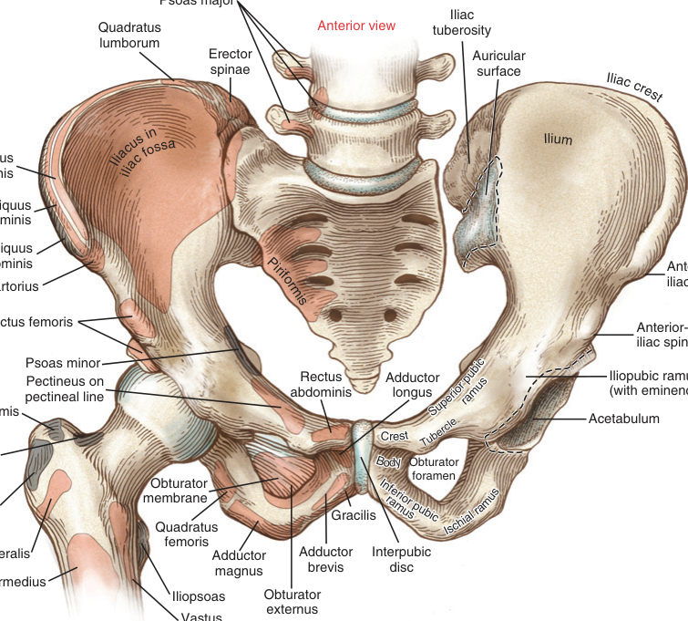
Mỗi xương háng (innominate, từ Latin innominatum nghĩa là vô danh) là sự hợp nhất của ba xương: xương chậu (ilium), xương mu (pubis) và xương ngồi (ischium) (xem Hình 12.1 và 12.2). Hai xương háng phải và trái nối với nhau phía trước tại khớp mu (pubic symphysis) và phía sau tại xương cùng. Các kết nối này tạo thành một vòng xương–dây chằng hoàn chỉnh, được gọi là khung chậu (pelvis, từ Latin nghĩa là chậu hay bồn). Khung chậu liên quan đến ba chức năng quan trọng và rất khác nhau. Trước hết, khung chậu là điểm bám chung cho nhiều cơ của chi dưới và thân mình. Khung chậu cũng truyền trọng lượng của phần cơ thể trên và thân mình xuống các củ ngồi (ischial tuberosities) khi ngồi, hoặc xuống các chi dưới khi đứng và đi bộ. Cuối cùng, với sự hỗ trợ của các cơ và mô liên kết của sàn khung chậu, khung chậu nâng đỡ các cơ quan tham gia vào chức năng ruột, bàng quang và sinh sản.
Mặt ngoài của khung chậu có ba đặc điểm nổi bật. Cánh chậu (ala) hình quạt lớn của xương chậu tạo thành nửa trên của xương háng. Ngay dưới cánh chậu là ổ xương hứng (acetabulum) sâu, hình chén. Ngay dưới và hơi trong so với ổ xương hứng là lỗ bịt (obturator foramen) — lỗ lớn nhất trong cơ thể. Lỗ này được phủ bởi màng bịt (obturator membrane) (xem Hình 12.1).
Khi một người đứng, khung chậu bình thường được định hướng sao cho khi nhìn từ bên, một đường thẳng đứng đi qua giữa gai chậu trước trên và củ mu (xem Hình 12.2).
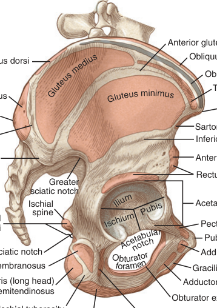
Mặt ngoài của xương chậu được đánh dấu bởi các đường mông sau, trước và dưới khá mờ (xem Hình 12.2). Các đường này giúp xác định các chỗ bám của các cơ mông. Ở phần trước cùng cực của xương chậu là gai chậu trước trên (anterior-superior iliac spine), dễ sờ nắn (xem Hình 12.1 và 12.2). Ngay dưới gai này là gai chậu trước dưới. Mào chậu (iliac crest) nổi bật, là vành trên cùng của xương chậu, đi tiếp về phía sau và kết thúc tại gai chậu sau trên (Hình 12.3). Mô mềm phía trên gai chậu sau trên thường được đánh dấu bằng một lõm nhỏ trên da. Gai chậu sau dưới kém nổi bật hơn đánh dấu vành trên của khuyết ngồi lớn (greater sciatic notch). Lỗ mở của khuyết này được chuyển thành lỗ ngồi lớn (greater sciatic foramen) nhờ dây chằng cùng–gai (sacrospinous ligament) và phần gần của dây chằng cùng–củ (sacrotuberous ligament).
Các đặc điểm xương học của xương chậu (Osteologic Features of the Ilium)
Mặt ngoài (External surface)
Mặt trong (Internal surface)
Mặt trong của xương chậu có ba đặc điểm đáng chú ý (xem Hình 12.1). Phía trước, hố chậu (iliac fossa) lõm, nhẵn được lấp đầy bởi cơ chậu (iliacus). Phía sau, mặt khuyên (auricular surface) khớp nối với xương cùng tại khớp cùng–chậu (sacroiliac joint). Ngay sau mặt khuyên là cục thô xương chậu (iliac tuberosity) lớn và gồ ghề, đánh dấu các chỗ bám của các dây chằng cùng–chậu (sacroiliac ligaments).
Nhánh mu trên (superior pubic ramus) kéo dài về phía trong từ điểm xuất phát của nó tại nhánh chậu–mu (iliopubic ramus, hay điểm nối), ngay trước ổ xương hứng, đến thân xương mu (body of pubis) lớn, dẹt (xem Hình 12.1). Bờ trên của thân xương mu là mào mu (pubic crest), là chỗ bám cho cơ thẳng bụng (rectus abdominis). Trên mặt trên của nhánh mu trên là đường mu (pectineal line), đánh dấu chỗ bám của cơ mu (pectineus). Củ mu (pubic tubercle) nhô về phía trước từ nhánh mu trên, là chỗ bám cho dây chằng bẹn (inguinal ligament). Nhánh mu dưới (inferior pubic ramus) kéo dài từ thân xương mu về phía sau đến điểm nối với xương ngồi.
Hai xương mu khớp nối với nhau ở đường giữa qua khớp mu (xem Hình 12.1). Khớp này tương đối ít di động, thường được phân loại là khớp không động (synarthrosis). Sụn trong (hyaline cartilage) lót các mặt đối diện của sự khớp nối; các mặt này không hoàn toàn phẳng mà có các gờ nhô nhỏ, có lẽ được thiết kế để kháng lại lực trượt. Khớp được buộc chặt bởi một đĩa liên mu (interpubic disc) bằng sụn sợi và các dây chằng. Đĩa liên mu được gia cố bằng sự đan xen của các sợi collagen, kết hợp với các chỗ bám xa từ các cơ thẳng bụng. Có thể xảy ra tới 2 mm dịch chuyển và xoay rất nhẹ tại khớp mu. Khớp mu giúp giải tỏa ứng suất khắp vòng khung chậu trong khi đi bộ và, ở phụ nữ, trong thai kỳ và khi sinh nở. Trong thai kỳ hoặc ngay sau khi sinh, một số phụ nữ bị đau do mất ổn định của khớp mu, gây ra bởi sự giãn nở sinh lý của các dây chằng nâng đỡ khớp.
Các đặc điểm xương học của xương mu (Osteologic Features of the Pubis)
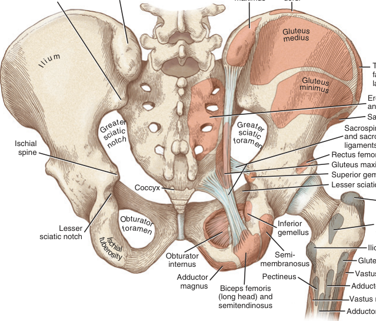
Mấu ngồi (ischial spine) nhọn nhô ra từ mặt sau của xương ngồi, ngay dưới khuyết ngồi lớn (xem Hình 12.3). Khuyết ngồi nhỏ (lesser sciatic notch) nằm ngay dưới mấu ngồi. Dây chằng cùng–gai và phần xa của dây chằng cùng–củ chuyển khuyết ngồi nhỏ thành lỗ ngồi nhỏ (lesser sciatic foramen).
Củ ngồi (ischial tuberosity) lớn, chắc nhô ra phía sau và dưới từ ổ xương hứng (xem Hình 12.3). Cấu trúc có thể sờ nắn này là chỗ bám gần cho nhiều cơ của chi dưới, nổi bật nhất là gân kheo (hamstrings) và một phần cơ khép lớn (adductor magnus). Nhánh ngồi (ischial ramus) kéo dài về phía trước từ củ ngồi, kết thúc tại điểm nối với nhánh mu dưới (xem Hình 12.1).
Các đặc điểm xương học của xương ngồi (Osteologic Features of the Ischium)
Nằm ngay trên lỗ bịt là ổ xương hứng (acetabulum) lớn, hình chén (xem Hình 12.2). Ổ xương hứng tạo thành ổ cắm của khớp háng. Cả ba xương của khung chậu đều góp phần tạo nên ổ xương hứng: xương chậu và xương ngồi góp phần khoảng 75%, và xương mu góp phần khoảng 25% còn lại. Các đặc điểm cụ thể của ổ xương hứng được thảo luận trong phần khớp học.
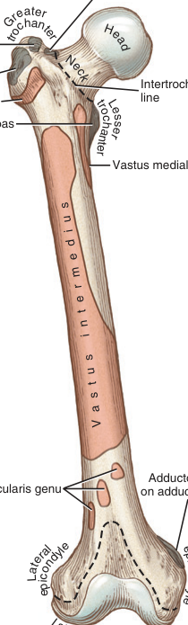
Xương đùi (femur) là xương dài nhất của cơ thể người (Hình 12.4). Hình dạng và dáng vóc chắc khỏe của nó phản ánh tác động mạnh mẽ của các cơ và góp phần tạo nên bước đi dài khi đi bộ. Ở đầu gần của nó, chỏm xương đùi (femoral head) nhô về phía trong và hơi về phía trước để khớp nối với ổ xương hứng. Cổ xương đùi (femoral neck) nối chỏm xương đùi với thân xương. Cổ xương có chức năng dịch chuyển thân gần của xương đùi sang bên, ra xa khỏi khớp, nhờ đó giảm khả năng chèn ép xương vào khung chậu. Xa cổ xương, thân xương đùi (femoral shaft) đi về phía trong một chút, hữu hiệu đặt đầu gối và bàn chân gần đường giữa cơ thể hơn.
Thân xương đùi thể hiện một độ lồi trước nhẹ (Hình 12.5A). Như một cột dài chịu tải lệch tâm, xương đùi cong rất nhẹ khi chịu trọng lượng của cơ thể. Do đó, ứng suất dọc theo xương được phân tán qua lực nén dọc thân sau và qua lực căng dọc thân trước. Cuối cùng, độ cong này cho phép xương đùi chịu được tải trọng lớn hơn so với nếu xương đùi hoàn toàn thẳng.
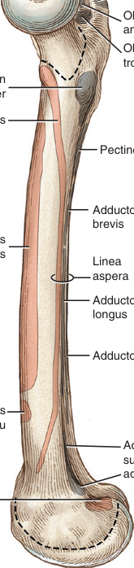
Phía trước, đường liên mỏm xoay (intertrochanteric line) đánh dấu chỗ bám xa của các dây chằng bao khớp (xem Hình 12.4). Mỏm xoay lớn (greater trochanter) kéo dài về phía ngoài và phía sau từ điểm nối giữa cổ và thân xương đùi (xem Hình 12.5B). Cấu trúc nổi bật và dễ sờ nắn này là chỗ bám xa cho nhiều cơ. Trên mặt trong của mỏm xoay lớn là một hố nhỏ gọi là hố mỏm xoay (trochanteric fossa) (xem Hình 12.5A và 12.6). Hố này đánh dấu chỗ bám xa của cơ bịt ngoài (obturator externus).
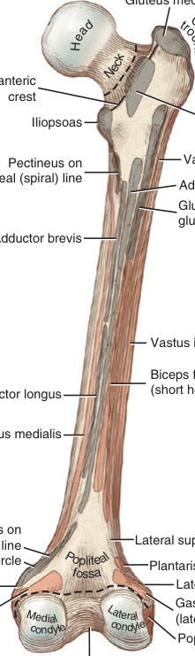
Các đặc điểm xương học của xương đùi (Osteologic Features of the Femur)
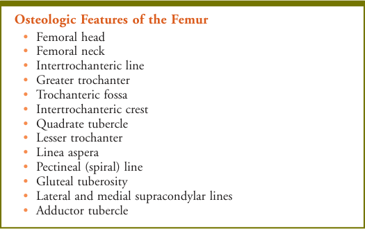
Phía sau, cổ xương đùi nối với thân xương đùi tại mào liên mỏm xoay (intertrochanteric crest) nhô lên (xem Hình 12.5B). Củ vuông (quadrate tubercle), chỗ bám xa của cơ vuông đùi, là một vùng chỉ hơi nhô lên trên mào, ngay dưới hố mỏm xoay. Mỏm xoay nhỏ (lesser trochanter) nhô lên sắc nét từ đầu dưới của mào theo hướng sau–trong. Mỏm xoay nhỏ là chỗ bám xa của cơ chậu–thắt lưng (iliopsoas) — một cơ gập háng quan trọng và là bộ ổn định thẳng đứng của cột sống thắt lưng.
Phần một phần ba giữa của mặt sau thân xương đùi được đánh dấu rõ bằng một gờ dọc gọi là mấu gồ (linea aspera) (tiếng Latin: linea nghĩa là đường, và aspera nghĩa là nhám). Gờ nhô lên này là chỗ bám cho các cơ rộng của nhóm cơ tứ đầu đùi, nhiều cơ khép, và mạc liên cơ của đùi. Ở phía gần, mấu gồ tách thành đường mu (xoắn) (pectineal (spiral) line) phía trong và mấu mông (gluteal tuberosity) phía ngoài (xem Hình 12.5B). Ở đầu xa của xương đùi, mấu gồ chia thành các đường trên cầu ngoài và trong. Mỏm khép (adductor tubercle) nằm ở đầu xa cùng cực của đường trên cầu trong.
Hình dạng và cấu hình cuối cùng của phần gần xương đùi đang phát triển được quyết định bởi một số yếu tố, bao gồm sự tăng trưởng khác nhau giữa các trung tâm cốt hóa của xương, lực của hoạt động cơ và việc chịu trọng lượng cơ thể, và tuần hoàn. Sự phát triển bất thường dẫn đến phần gần xương đùi bị biến dạng được gọi chung là loạn sản xương đùi (femoral dysplasia) (từ tiếng Hy Lạp: dys nghĩa là xấu hoặc bất thường, và plasia nghĩa là tăng trưởng). Chấn thương hoặc các yếu tố toàn thân khác cũng có thể ảnh hưởng đến hình dạng của phần gần xương đùi. Hình dạng và cấu hình của phần gần xương đùi có những hàm ý quan trọng đối với sự khớp hợp và độ ổn định của khớp, cũng như ứng suất đặt lên các cấu trúc khớp. Chủ đề này sẽ được đề cập lại nhiều lần trong suốt chương này.
Hai độ gập góc cụ thể của phần gần xương đùi giúp xác định hình dạng của nó: góc nghiêng (angle of inclination) và góc xoắn (torsional angle).
Góc nghiêng (Angle of Inclination)
Góc nghiêng cổ xương đùi (angle of inclination) mô tả một góc trong mặt phẳng trán giữa cổ xương đùi và mặt trong của thân xương đùi (Hình 12.7). Khi mới sinh, góc này trung bình đo khoảng 165–170 độ. Chủ yếu do hoạt động cơ và sự chịu tải qua cổ xương đùi khi đi bộ, độ gập góc này thường giảm khoảng 2 độ mỗi năm trong độ tuổi từ 2 đến 8 tuổi. Góc nghiêng tiếp tục giảm với các tốc độ khác nhau cho đến khi đạt giá trị bình thường ở tuổi trưởng thành khoảng 125 độ. Như được minh họa bằng cặp chấm đỏ trong Hình 12.7A, độ gập góc này thường tối ưu hóa sự căn chỉnh của các mặt khớp.
Sự thay đổi của góc nghiêng bình thường được gọi là coxa vara hoặc coxa valga. Coxa vara (tiếng Latin: coxa nghĩa là háng, và vara nghĩa là cong vào trong) mô tả một góc nghiêng nhỏ hơn rõ rệt so với 125 độ; coxa valga (tiếng Latin: valga nghĩa là cong ra ngoài) mô tả một góc nghiêng lớn hơn rõ rệt so với khoảng 125 độ (xem Hình 12.7B–C để biết các góc có thể được coi là bất thường). Các góc bất thường có thể làm thay đổi đáng kể sự liên kết khớp giữa chỏm xương đùi và ổ xương hứng, từ đó ảnh hưởng đến cơ sinh học của khớp háng. Sự căn chỉnh sai nặng có thể dẫn đến trật khớp hoặc thoái hóa khớp do ứng suất. Mặc dù có sự biến động, những người bị bại não (cerebral palsy) thường có biến dạng coxa valga vượt xa mức được minh họa trong Hình 12.7C. Sự chịu tải giảm hoặc bất thường qua các khớp háng ở nhóm đối tượng này dường như cản trở sự suy giảm từ từ của góc nghiêng được quan sát thấy ở những trẻ em hoạt động, đi lại được với hệ thần kinh–cơ phát triển điển hình.
Xoắn xương đùi (Femoral Torsion)
Xoắn xương đùi (femoral torsion) mô tả sự xoay tương đối (vặn xoắn) giữa thân và cổ của xương. Nhìn từ trên xuống, cổ xương đùi thường nhô ra phía trước vài độ so với một trục trong–ngoài đi qua các lồi cầu xương đùi. Hình 12.8A mô tả một góc xoay trước bình thường khoảng 15 độ, mặc dù các giá trị "bình thường" được báo cáo trong tài liệu dao động từ 8 đến 20 độ. Kết hợp với góc nghiêng bình thường (đã mô tả trước đó), một góc xoay trước xấp xỉ 15 độ mang lại sự căn chỉnh tối ưu và sự khớp hợp khớp (xem sự căn chỉnh của cặp chấm đỏ trong Hình 12.8A).
Xoắn xương đùi được coi là bất thường nếu nó lệch rõ rệt so với 15 độ. Xoắn vượt xa 15 độ được gọi là xoay trước quá mức (excessive anteversion) (xem Hình 12.8B), và xoắn thấp hơn đáng kể so với 15 độ (tức là tiến gần đến 0 độ) được gọi là xoay sau (retroversion) (xem Hình 12.8C). Do mức biến động tự nhiên của độ xoắn xương đùi trong dân số, ranh giới lâm sàng giữa trạng thái "bình thường" và "bất thường" thường không rõ ràng và được xác định một cách tùy ý. Một số tác giả đã đề xuất rằng xoắn xương đùi bất thường nên được xác định dựa trên các giá trị lệch ít nhất 1 độ lệch chuẩn so với giá trị trung bình.
Thông thường, một trẻ sơ sinh khỏe mạnh được sinh ra với khoảng 40 độ xoay trước xương đùi. Với sự phát triển xương tiếp tục, sự chịu tải tăng lên và hoạt động của cơ, góc này thường giảm (hoặc "khử xoay") xuống còn khoảng 15 độ vào năm 16 tuổi. Xoay trước quá mức kéo dài đến tuổi trưởng thành có thể làm tăng khả năng trật khớp háng, tình trạng không khớp hợp khớp, ứng suất tiếp xúc khớp tăng lên, và sự mài mòn tăng của sụn khớp hoặc cánh môi ổ xương hứng. Các yếu tố này có thể dẫn đến viêm xương khớp (osteoarthritis) thứ phát của khớp háng.
Xoay trước quá mức ở trẻ em có thể liên quan đến một kiểu dáng đi bất thường gọi là "đi bàn chân vào trong" (in-toeing). In-toeing là kiểu đi bộ với tư thế xoay trong của chi dưới bị phóng đại. Kiểu dáng đi này có thể là một sự bù trừ nhằm dẫn chỏm xương đùi xoay trước quá mức vào ổ xương hứng trực tiếp hơn (Hình 12.9). Ngoài ra, Arnold và cộng sự đã chỉ ra rằng tư thế xoay trong bị phóng đại khi đi bộ giúp tăng cánh tay đòn của các cơ dạng quan trọng của khớp háng — đòn bẩy vốn bị giảm khi có xoay trước xương đùi quá mức. Với xu hướng đi với khớp háng xoay trong này, một số cơ và dây chằng bắc qua khớp háng cuối cùng có thể bị rút ngắn về mặt cấu trúc, làm hạn chế tầm xoay ngoài. Kiểu dáng đi thường cải thiện theo thời gian do sự bình thường hóa tự nhiên của độ xoay trước hoặc sự bù trừ cấu trúc kết hợp ở các phần khác của chi dưới, phổ biến nhất là xương chày (tibia). Cho đến nay chưa có bằng chứng nào cho thấy điều trị không phẫu thuật có thể làm giảm độ xoay trước xương đùi quá mức.
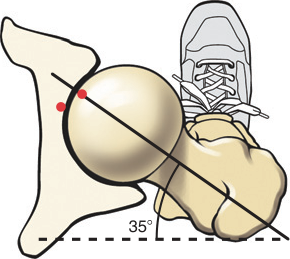
Xoay trước xương đùi quá mức từ 25 đến 45 độ là phổ biến ở những người bị bại não; trên thực tế, đã có báo cáo về độ xoay trước cao tới 60 đến 80 độ. Dáng đi bàn chân vào trong thường dai dẳng ở những trẻ em bị bại não có khả năng đi lại. Tình trạng co cứng (spasticity) hoặc căng cứng của các cơ xoay trong và cơ khép khớp háng, cùng với sự xoay khung chậu quá mức, có thể góp phần vào tư thế bàn chân vào trong. Trong một số trường hợp chọn lọc, phẫu thuật cắt xương khử xoay của xương đùi (femoral de-rotational osteotomy) có thể được cân nhắc như một cách để giảm tư thế xoay trong quá mức quan sát thấy trong dáng đi.
TẬP TRUNG ĐẶC BIỆT 12.1 — Xoay trước tự nhiên của xương đùi: Một phản ánh của sự phát triển trước sinh của chi dưới (Natural Anteversion of the Femur: A Reflection of the Prenatal Development of the Lower Limb)
Trong quá trình phát triển trước sinh, cả chi trên và chi dưới đều trải qua sự xoay trục đáng kể. Vào khoảng 54 ngày sau khi thụ thai, các chi dưới đã xoay trong (về phía trong) khoảng 90 độ. Sự xoay này đưa vùng xương bánh chè đến vị trí trước cuối cùng của nó. Về bản chất, các chi dưới đã bị "sấp" (pronated) vĩnh viễn. Điều này giúp giải thích tại sao các cơ "duỗi" — chẳng hạn cơ tứ đầu đùi và cơ chày trước (tibialis anterior) — hướng về phía trước, còn các cơ "gập" — chẳng hạn gân kheo và cơ bụng chân (gastrocnemius) — hướng về phía sau sau khi sinh. Khoảng 40 độ xoay trước khớp háng thường có mặt khi sinh có thể là một dấu hiệu của sự xoay trong chi dưới này. Như đã nêu trước đó, trong quá trình phát triển điển hình của trẻ sơ sinh, thân xương đùi khử xoay (về phía ngoài), cho đến khi đạt giá trị xoay trước cuối cùng ở người trưởng thành khoảng 15 độ. Thú vị là, quá trình khử xoay của xương đùi này tương tự nhưng ngược chiều với quá trình xảy ra ở xương cánh tay (humerus). Như đã được xem lại trong Chương 5, trước sinh xương cánh tay trải qua quá trình xoay sau đáng kể, tới khoảng 60 độ vào lúc sinh, sau đó là một quá trình khử xoay sau sinh (về phía trong) từ từ đạt góc xoay sau cuối cùng 30 độ vào độ tuổi 16–20.
Một hậu quả chức năng của sự xoay trong của các chi dưới là các lòng bàn chân đạt tư thế đặt toàn bộ mặt lòng bàn chân xuống đất (plantigrade), phù hợp để đi bộ. Sự sấp cố định của bàn chân này được thể hiện rõ ở vị trí trong của ngón cái chân của chi dưới, tương tự như hướng của ngón cái trong một cẳng tay sấp hoàn toàn. Một số đặc điểm giải phẫu cho thấy bằng chứng về sự xoay trong trong quá trình phát triển này: đường đi xoắn ốc của các vùng da (dermatomes) T12 đến L5 trong chi dưới (xem Phụ lục IV, Phần C), các dây chằng xoắn của khớp háng (sẽ được mô tả sau), và đường đi chéo của cơ may (sartorius).
Xương đặc và xương xốp (Compact and Cancellous Bone)
Đi bộ tạo ra lực căng, lực nén, lực uốn, lực trượt và lực xoắn lên phần gần xương đùi. Nhiều lực trong số này rất lớn, vượt quá trọng lượng cơ thể. Trong suốt cuộc đời, phần gần xương đùi thường kháng lại và hấp thụ các lực lặp đi lặp lại này mà không bị tổn thương. Điều này được thực hiện nhờ hai thành phần xương khác biệt rõ rệt. Xương đặc (compact bone) rất đặc chắc và không dễ biến dạng, có khả năng chịu được các tải trọng lớn. Loại xương này đặc biệt dày ở vỏ xương (cortex), hoặc lớp vỏ ngoài, của phần dưới cổ xương đùi và toàn bộ thân xương đùi (Hình 12.10). Các vùng này kháng lại lực trượt và lực xoắn một cách cứng cáp, trái ngược với xương xốp (cancellous bone) — loại xương tương đối xốp rỗng, gồm một khung bè ba chiều dạng bọt biển, như được thể hiện trong Hình 12.10. Độ đàn hồi tương đối của xương xốp là lý tưởng cho việc hấp thụ lặp đi lặp lại các lực ngoài. Xương xốp có xu hướng tập trung dọc theo các đường ứng suất, tạo thành các mạng bè xương (trabecular networks). Một mạng bè trong (medial trabecular network) và một mạng bè hình cung (arcuate trabecular network) có thể thấy được trong xương đùi được trình bày trong Hình 12.10. Mô hình tổng thể của mạng bè xương thay đổi khi phần gần xương đùi chịu các lực bất thường trong một thời gian dài.
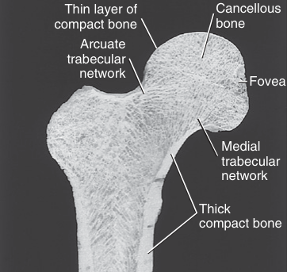
Khớp háng là khớp chỏm–ổ chỏm (ball-and-socket joint) điển hình của cơ thể, được giữ cố định trong ổ xương hứng (acetabulum) bởi một hệ thống rộng lớn gồm các mô liên kết và cơ. Các lớp sụn khớp dày và xương xốp ở phần gần xương đùi, cùng với hoạt động co cơ lệch tâm (eccentric muscle action), giúp làm giảm bớt các lực lớn thường xuyên đi qua khớp háng. Sự suy giảm của bất kỳ cơ chế bảo vệ nào trong số này do bệnh tật, sự căn chỉnh sai hoặc dị dạng bẩm sinh hay do phát triển, hoặc chấn thương, có thể dẫn đến sự xuống cấp của cấu trúc khớp.
Chỏm xương đùi nằm ngay dưới phần giữa một phần ba của dây chằng bẹn (inguinal ligament). Trung bình, tâm của hai chỏm xương đùi ở người trưởng thành cách nhau 17,5 cm (6,9 inch). Chỏm của xương đùi tạo thành khoảng hai phần ba của một hình cầu gần như hoàn hảo (Hình 12.11). Nằm hơi phía sau tâm của chỏm là một hố lõm nổi bật, hay hố chỏm (fovea) (xem Hình 12.5A). Toàn bộ mặt của chỏm xương đùi được phủ bởi sụn khớp, ngoại trừ vùng hố chỏm. Sụn dày nhất (khoảng 3,5 mm) ở một vùng rộng phía trên và hơi phía trước hố chỏm (xem vùng được làm nổi bật trong Hình 12.11).
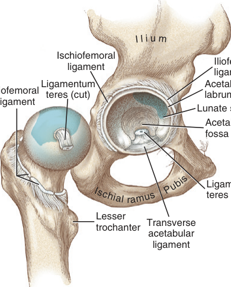
Dây chằng tròn (ligamentum teres) (còn được gọi là dây chằng chỏm xương đùi) là một mô liên kết dạng ống, được lót bởi màng hoạt dịch, chạy giữa dây chằng ngang ổ xương hứng (transverse acetabular ligament) và hố chỏm của chỏm xương đùi (xem Hình 12.11). Dây chằng này đóng vai trò như một ống dẫn bảo vệ, hoặc vỏ bọc, cho sự đi qua của động mạch ổ xương hứng nhỏ (một nhánh của động mạch bịt) đến chỏm xương đùi ở trẻ sơ sinh. Tuy nhiên, ở người trưởng thành, động mạch ổ xương hứng cung cấp rất ít, nếu có, máu cho xương đùi. (Nguồn cung cấp máu chính cho chỏm và cổ xương đùi ở người trưởng thành là qua các động mạch vòng trong và vòng ngoài, những mạch này xuyên qua bao khớp ở vùng kề cổ xương đùi.) Người ta đã suy đoán rằng dây chằng tròn cũng có thể ổn định khớp háng của thai nhi vào thời điểm khi ổ xương hứng còn nông và khớp háng tương đối dễ bị trật.
Mức độ mà dây chằng tròn ổn định khớp háng của người trưởng thành vẫn chưa được biết chắc chắn. Điều làm cho chủ đề này phức tạp là dây chằng tròn dường như bị kéo giãn (và bị căng ra) bởi một số tổ hợp chuyển động khác nhau. Theo quan điểm truyền thống, các chuyển động khớp háng được cho là làm giãn dây chằng tròn bao gồm tổ hợp gập, khép và xoay ngoài — một tư thế trong đó phần lớn bao khớp háng được nới lỏng tương đối (sẽ được mô tả sau). Các nghiên cứu trên thi thể (cadaveric) gần đây hơn đã báo cáo rằng dây chằng căng khi khớp háng ở tư thế xoay trong hoặc xoay ngoài, đặc biệt khi kết hợp với các mức độ gập khác nhau. Một nghiên cứu khác cho rằng dây chằng tròn hoạt động như một dây đai (sling), đỡ phần dưới của chỏm xương đùi khi khớp háng được gập và dạng, chẳng hạn khi ở tư thế gần như ngồi xổm. Mặc dù dây chằng tròn chắc chắn cung cấp một mức độ ổn định chức năng nào đó cho khớp háng, tỷ lệ tương đối vẫn chưa rõ ràng và có lẽ nhỏ hơn đáng kể so với mức ổn định do các dây chằng bao khớp và các cơ xung quanh tạo ra. Do dây chằng tròn chứa các cảm thụ cơ học (mechanoreceptors), nó có thể góp phần mang lại sự ổn định gián tiếp cho khớp háng bằng cách cải thiện nhận thức cảm giác bản thể (proprioceptive awareness) của một người.
Sự quan tâm y khoa đối với dây chằng tròn đã tăng lên gần đây nhờ những cải tiến trong chẩn đoán hình ảnh y khoa và soi khớp háng (hip arthroscopy) (e-Hình 12.1). Dây chằng tròn có thể là nguồn gốc của đau trong khớp háng khi bị tổn thương hoặc chịu ứng suất cơ học. Một số người có thể nhận được ít nhất là sự giảm đau ngắn hạn từ phẫu thuật làm sạch (debridement) hoặc tái tạo một dây chằng tròn bị rách.
Ổ xương hứng (acetabulum) (từ tiếng Latin, nghĩa là "chén giấm") là một ổ sâu, hình bán cầu dạng chén dùng để nhận chỏm xương đùi. Môi của ổ này tạo thành một vòng không hoàn chỉnh, để lại một lỗ mở phía dưới rộng từ 60 đến 70 độ được gọi là khuyết ổ xương hứng (acetabular notch) (Hình 12.2).
Chỏm xương đùi bình thường chỉ tiếp xúc với ổ xương hứng dọc theo mặt nguyệt (lunate surface) hình móng ngựa của nó (xem Hình 12.11). Mặt này được phủ sụn khớp, dày nhất dọc theo vùng trên–trước của vòm. Vùng sụn dày nhất (khoảng 3,5 mm) tương ứng gần đúng với cùng một vùng có lực khớp cao nhất gặp phải khi đi bộ. Khi đi bộ, lực khớp háng dao động từ 13% trọng lượng cơ thể trong pha giữa vung (midswing) đến hơn 300% trọng lượng cơ thể trong pha giữa đỡ (midstance). Trong pha đỡ — khi các lực ở mức lớn nhất — mặt nguyệt bị biến dạng và khuyết ổ xương hứng nới rộng một chút, làm tăng diện tích tiếp xúc nhằm giảm áp lực đỉnh (xem Hình 12.12). Cơ chế giảm chấn tự nhiên này đại diện cho một thiết kế khác nữa giúp giữ ứng suất lên xương dưới sụn (subchondral bone) trong mức chịu đựng được về mặt sinh lý.
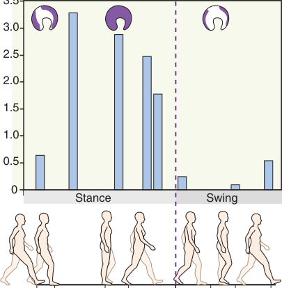
Hố ổ xương hứng (acetabular fossa) là một chỗ lõm nằm sâu trong sàn của ổ xương hứng. Do hố này bình thường không tiếp xúc với chỏm xương đùi nên nó không có sụn. Thay vào đó, hố này dành không gian cho dây chằng tròn, mô mỡ, màng hoạt dịch và các mạch máu.
Cánh môi ổ xương hứng (acetabular labrum) là một vòng sụn sợi (fibrocartilage) chắc nhưng dẻo, bao quanh phần lớn chu vi ngoài (môi) của ổ xương hứng (xem Hình 12.11). Hoàn tất vòng này, dây chằng ngang ổ xương hứng bắc qua khuyết ổ xương hứng.
Cánh môi ổ xương hứng gần như có hình tam giác trên mặt cắt ngang, với đỉnh của nó nhô ra ngoài, cách xa môi ổ xương hứng khoảng 5 mm (gần 1/4 inch). Chân của cánh môi bám dọc theo các mặt trong và ngoài của môi ổ xương hứng.
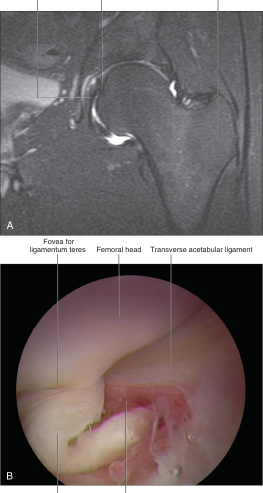
Phần của cánh môi ổ xương hứng (acetabular labrum) bám vào mặt trong dần dần hòa nhập với sụn khớp nằm trong ổ xương hứng. Vùng nơi hai mô này hòa nhập vào nhau được gọi trong lâm sàng là chỗ tiếp giáp cánh môi–sụn (labrochondral junction).
Cánh môi ổ xương hứng mang lại sự ổn định cơ học đáng kể cho khớp háng bằng cách “cầm chặt” chỏm xương đùi và làm sâu thêm ổ cắm của ổ xương hứng. Lớp bịt kín cơ học được hình thành quanh khớp háng nhờ một cánh môi còn nguyên vẹn giúp duy trì áp lực âm trong khớp. Cơ chế bịt kín kiểu hút (“suction seal”) được tạo thành đã được chứng minh là có hiệu quả hơn bao khớp trong việc chống lại 1–2 mm kéo giãn (tách rời) đầu tiên của khớp. Ngoài ra, một cánh môi còn nguyên vẹn tạo thành lớp bịt kín dịch quanh khớp giúp ngăn dịch hoạt dịch (synovial fluid) rò rỉ đến các vùng ở rìa ngoài hơn của khớp háng. Việc giữ dịch hoạt dịch trên các mặt chịu tải làm tăng khả năng bôi trơn của sụn khớp và nhờ đó giảm lực cản ma sát khi vận động. Hơn nữa, một lớp phủ mỏng dịch hoạt dịch trên các mặt khớp giúp phân tán cơ học ứng suất tiếp xúc.
Nói chung, cũng như phần lớn sụn sợi (fibrocartilage), cánh môi ổ xương hứng được chứa mạch kém, đặc biệt ở những vùng cách xa nhất so với các phần được chứa mạch tốt hơn của bao khớp. Vì lý do này, một cánh môi bị rách chỉ có khả năng tự lành hạn chế. Trái ngược với sự chứa mạch kém của nó, cánh môi được cấp các dây thần kinh hướng tâm (afferent nerves) tốt, có khả năng cung cấp phản hồi bản thể cảm và cảm giác đau. Cánh môi ổ xương hứng thường liên quan đến bệnh lý khớp háng, chẳng hạn viêm xương khớp thoái hóa, chấn thương cấp, loạn sản khớp háng phát triển (developmental hip dysplasia), hoặc va chạm xương đùi–ổ xương hứng (femoral-acetabular impingement) lặp đi lặp lại.
Ở tư thế giải phẫu, ổ xương hứng (acetabulum) thường nhô hướng ra ngoài từ khung chậu với một lượng nhỏ độ nghiêng xuống dưới và về phía trước. Các tình trạng bẩm sinh hoặc phát triển có thể gây ra một ổ xương hứng có hình dạng bất thường. Một ổ xương hứng bị biến dạng, loạn sản không bao bọc đầy đủ chỏm xương đùi có thể gây trật khớp mạn tính và tăng ứng suất, thường dẫn đến đau, thoái hóa, hoặc viêm xương khớp. Các nhà lâm sàng sử dụng các số đo từ chẩn đoán hình ảnh y khoa để giúp xác định hình dạng và cấu trúc của ổ xương hứng cũng như hướng của nó so với chỏm xương đùi. Các số đo này giúp xác định mức độ nặng của loạn sản, cũng như hỗ trợ quá trình ra quyết định về điều trị phẫu thuật hay không phẫu thuật. Hai trong số nhiều số đo được dùng cho mục đích này sẽ được mô tả tiếp sau đây: góc tâm–rìa (center-edge angle) và góc xoay trước của ổ xương hứng (acetabular anteversion angle).
Góc tâm–rìa (CE) cho biết mức độ mà ổ xương hứng bao bọc chỏm xương đùi. Hình 12.13A minh họa góc CE dựa trên một phim X-quang chiếu trước–sau. Các nghiên cứu thường báo cáo góc CE trung bình khoảng 25–35 độ ở tổng thể dân số trưởng thành (với độ lệch chuẩn 4–6 độ). Một góc CE thấp cho thấy sự bao bọc của ổ xương hứng lên chỏm xương đùi bị giảm. Sự bao bọc giảm có thể nghĩa là nguy cơ trật khớp lớn hơn và, quan trọng không kém, là diện tích tiếp xúc trong khớp ít hơn. Chẳng hạn, một góc CE chỉ 15 độ cho thấy có thể giảm tới 35% diện tích tiếp xúc. Trong giai đoạn đỡ một chân của việc đi bộ, diện tích tiếp xúc nhỏ hơn này về mặt lý thuyết sẽ làm tăng áp lực khớp (lực/diện tích) khoảng 50%. Qua nhiều năm đi bộ, tình huống này có thể dẫn đến thoái hóa sớm hoặc viêm xương khớp của khớp háng. Mặc dù góc CE thường được dùng để đo sự bao bọc không đầy đủ của ổ xương hứng, một góc CE cao (ví dụ, vượt quá 45 độ) lại cho thấy ổ xương hứng bao bọc chỏm xương đùi quá mức. Sự bao bọc quá mức có thể dẫn đến va chạm (impingement) và do đó gây tổn thương khớp háng trong một số chuyển động tương đối mức độ cực đoan nhất định.
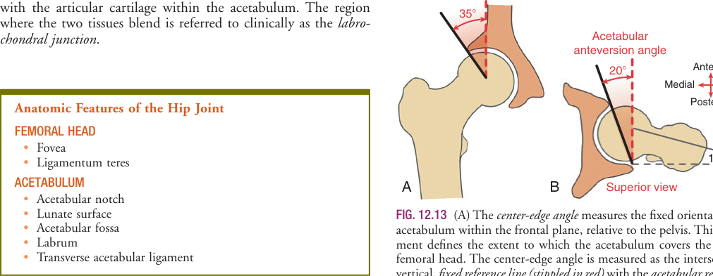
Góc xoay trước của ổ xương hứng — mức độ mà ổ xương hứng hướng về phía trước — có thể được đo trên một phim chụp cắt lớp vi tính (CT) hiển thị mặt phẳng ngang của khung chậu. Bình thường góc này khoảng 20 độ (Hình 12.13B), điều này thường để lại một phần chỏm xương đùi lộ ra về phía trước (Hình 12.14). Dây chằng bao phía trước dày và gân cơ chậu–thắt lưng (iliopsoas) che phủ và nâng đỡ phần lộ ra này, mặc dù lượng phần lộ ra cần được che phủ trở nên lớn hơn ở một khớp háng có xoay trước (anteversion) của ổ xương hứng quá mức. Nếu mức xoay trước nghiêm trọng, khớp háng có thể trở nên dễ bị bán trật (subluxation) hoặc trật về phía trước nếu bị xoay ngoài mạnh. Nếu khớp háng có cả mức xoay trước của xương đùi và mức xoay trước của ổ xương hứng đều quá mức, các vấn đề về lộ ra phía trước và mất ổn định có thể trở nên nặng hơn. Nếu ngược lại góc xoay trước của ổ xương hứng gần bằng không (tức là ổ xương hứng hướng ra ngoài) hoặc thậm chí âm (ổ xương hứng hướng về phía sau), ổ xương hứng xoay sau (retroverted) có thể tạo ra ứng suất bất thường trên mặt tiếp giáp khớp.
Một màng hoạt dịch (synovial membrane) lót mặt trong của bao khớp (joint capsule) khớp háng. Các dây chằng chậu–đùi (iliofemoral), mu–đùi (pubofemoral), và ngồi–đùi (ischiofemoral) gia cố mặt ngoài của bao khớp (Hình 12.14 và 12.15). (Do các mô hòa nhập vào nhau một cách gần gũi, các dây chằng và bao khớp thường được nhắc đến như một thực thể duy nhất: các dây chằng bao (capsular ligaments).) Nói chung, mỗi dây chằng được đặt tên theo chỗ bám gần cụ thể của nó vào vòng xương ngoài của ổ xương hứng, trung bình khoảng 5 mm phía trong đỉnh của rìa ổ xương hứng. Như sẽ được mô tả sau trong chương này, một số phần của bao khớp trước nhận các chỗ bám gia cố từ ba cơ: cơ chậu–bao khớp (iliocapsularis) ít được biết đến, cơ mông nhỏ (gluteus minimus), và đầu phản chiếu của cơ thẳng đùi (rectus femoris). Sức căng thụ động trong các dây chằng bị kéo giãn, bao khớp kế cận, và các cơ xung quanh giúp xác định tầm cuối cùng của các chuyển động của khớp háng (Bảng 12.1). Tăng tính linh hoạt ở các phần khác nhau của bao khớp là một thành phần quan trọng của vật lý trị liệu trong điều trị hạn chế vận động của khớp háng.
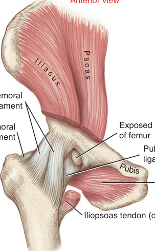
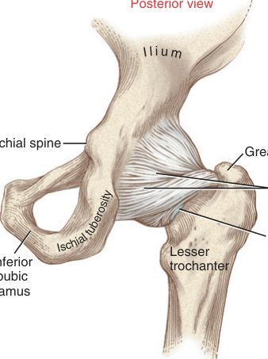
Dây chằng chậu–đùi (hay dây chằng chữ Y) là một tấm mô liên kết dày và chắc giống một chữ Y ngược. Ở phía gần, dây chằng chậu–đùi bám gần gai chậu trước dưới (anterior-inferior iliac spine) và dọc theo rìa kế cận của ổ xương hứng. Các sợi tạo thành hai bó trong và ngoài riêng biệt, mỗi bó bám vào một đầu của đường liên mỏm xoay (intertrochanteric line) của xương đùi (xem Hình 12.14). Duỗi khớp háng hoàn toàn kéo giãn dây chằng chậu–đùi và bao khớp trước. Xoay ngoài hoàn toàn cũng làm kéo dài dây chằng chậu–đùi, đặc biệt là bó ngoài.
Dây chằng chậu–đùi là dây chằng mạnh và cứng nhất của khớp háng. Khi một người đứng với khớp háng duỗi hoàn toàn, mặt trước của chỏm xương đùi đè chắc lên dây chằng chậu–đùi và cơ chậu–thắt lưng nằm phía trên. Từ tư thế đứng, sức căng thụ động trong các cấu trúc này tạo thành một lực ổn định quan trọng chống lại việc duỗi khớp háng thêm nữa. Một người bị liệt nửa người dưới (paraplegia) có thể dựa vào sức căng thụ động trong một dây chằng chậu–đùi đã bị kéo dài và căng cứng để hỗ trợ việc đứng (Hình 12.16).
Mặc dù mỏng hơn các sợi của dây chằng chậu–đùi, dây chằng mu–đùi và dây chằng ngồi–đùi hòa nhập với và gia cố các mặt kế cận của bao khớp. Dây chằng mu–đùi bám dọc theo rìa trước và dưới của ổ xương hứng và các phần kế cận của nhánh mu trên (superior pubic ramus) và màng bịt (obturator membrane) (xem Hình 12.14). Các sợi hòa nhập với bó trong của dây chằng chậu–đùi, trở nên căng khi khớp háng dạng và duỗi và, ở mức độ ít hơn, xoay ngoài.
Dây chằng ngồi–đùi bám từ mặt sau và dưới của ổ xương hứng, chủ yếu từ xương ngồi (ischium) kế cận (xem Hình 12.15). Các sợi nông hơn của dây chằng này, chiếm phần lớn khối của nó, xoắn ốc lên trên và ra ngoài qua cổ xương đùi sau để bám gần đỉnh của mỏm xoay lớn (greater trochanter) (xem Hình 12.14). Mặc dù các sợi nông này chỉ bị kéo căng nhẹ khi duỗi hoàn toàn, chúng bị quấn căng đáng kể khi xoay trong, nổi bật nhất khi kết hợp với 10–20 độ dạng khớp háng. Một số sợi sâu hơn của dây chằng ngồi–đùi hòa nhập với các sợi hình vòng kế cận của bao khớp sau và dưới (thường được nhắc đến là vùng vòng (zona orbicularis)). Các phần sâu hơn này của bao khớp bị kéo giãn ở các mức cực hạn của gập khớp háng.
Tư thế khít của khớp háng (Close-Packed Position of the Hip)
Một số vận động được chọn lọc giúp kéo dài đáng kể các nhóm con khác nhau của các dây chằng bao khớp đã được tóm tắt trong Bảng 12.1. Tuy nhiên, xét từ một góc nhìn hơi khác, hãy lưu ý rằng vận động của háng có khả năng tạo ra sự kéo giãn đồng thời lớn nhất cho phần lớn bao khớp là sự kết hợp giữa duỗi tối đa của háng (tức khoảng 20 độ vượt quá vị trí trung tính) với xoay trong nhẹ và dạng nhẹ (Hình 12.17). Điều này quan trọng về mặt trị liệu bởi vì các vận động kết hợp này có thể được dùng để kéo giãn phần lớn bao khớp của háng. Vì vị trí cuối cùng này xoắn và làm căng phần lớn các dây chằng bao khớp, vị trí này đã được coi là tư thế khít (close-packed position) của khớp háng. Sức căng thụ động được tạo ra — đặc biệt là do duỗi tối đa — góp phần tạo sự ổn định cho khớp và làm giảm các động tác phụ thụ động hoặc “độ chơi khớp” (joint play). Khớp háng là một trong số rất ít khớp trong cơ thể mà ở đó tư thế khít không đồng thời đi kèm với vị trí khớp khít (joint congruency) tối đa. Các mặt khớp của khớp háng khớp khít với nhau nhất ở khoảng 90 độ gập kèm dạng vừa phải và xoay ngoài. Ở vị trí này, phần lớn bao khớp và các dây chằng liên quan đã “tháo xoắn” về trạng thái tương đối lỏng lẻo hơn, chỉ tạo thêm một sức căng thụ động khiêm tốn cho khớp.
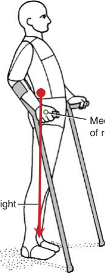
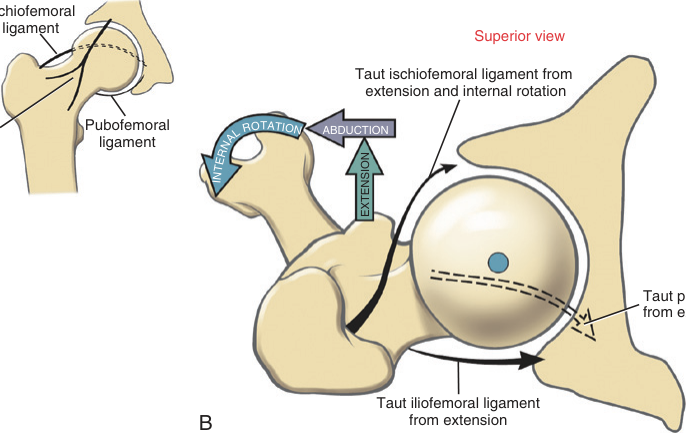
| Vị trí tầm cuối (End Range Position) | Mô căng (Taut Tissue) |
|---|---|
| Gập háng (gối duỗi) | Gân kheo |
| Gập háng (gối gập) | Bao khớp sau–dưới; cơ mông lớn |
| Duỗi háng (gối duỗi) | Chủ yếu là dây chằng chậu–đùi, bao khớp trước, một số sợi của dây chằng mu–đùi và dây chằng ngồi–đùi; cơ chậu–thắt lưng |
| Duỗi háng (gối gập) | Cơ thẳng đùi |
| Dạng | Dây chằng mu–đùi; các cơ khép |
| Khép | Dải chậu–gối; các cơ dạng như cơ căng mạc đùi và cơ mông giữa |
| Xoay trong | Dây chằng ngồi–đùi; các cơ xoay ngoài, chẳng hạn cơ hình lê và cơ mông lớn |
| Xoay ngoài | Dây chằng chậu–đùi và dây chằng mu–đùi; các cơ xoay trong, chẳng hạn cơ căng mạc đùi và cơ mông nhỏ |
Phần này mô tả tầm vận động mà khớp háng của người trưởng thành được phép thực hiện, gồm cả những yếu tố cho phép và những yếu tố hạn chế vận động này. Suy giảm vận động háng có thể là một dấu hiệu sớm của bệnh hoặc chấn thương, tại khớp háng hoặc ở nơi khác trong cơ thể. Vận động háng hạn chế có thể tạo ra những hạn chế chức năng đáng kể trong các hoạt động như đi bộ, đứng thẳng một cách thoải mái, hoặc nhặt đồ vật khỏi mặt sàn.
Hai thuật ngữ được dùng để mô tả động học tại khớp háng. Động học xương của háng kiểu xương đùi trên khung chậu (femoral-on-pelvic hip osteokinematics) mô tả sự xoay của xương đùi quanh một khung chậu tương đối cố định. Ngược lại, động học xương của háng kiểu khung chậu trên xương đùi (pelvic-on-femoral hip osteokinematics) mô tả sự xoay của khung chậu, và thường là cả thân mình phía trên, trên những xương đùi tương đối cố định. Bất kể xương đùi hay khung chậu là phân đoạn đang di chuyển, động học xương được mô tả xuất phát từ tư thế giải phẫu. Tên gọi của các vận động như sau: gập và duỗi trong mặt phẳng đứng dọc, dạng và khép trong mặt phẳng trán, và xoay trong và xoay ngoài trong mặt phẳng ngang (Hình 12.18).
Việc báo cáo tầm vận động của khớp háng dùng tư thế giải phẫu làm điểm quy chiếu 0 độ hoặc trung tính. Ví dụ, trong mặt phẳng đứng dọc, gập háng kiểu xương đùi trên khung chậu (femoral-on-pelvic (hip) flexion) xảy ra khi xương đùi xoay về phía trước, dù là về phía hay vượt quá vị trí quy chiếu 0 độ. Duỗi, là vận động ngược lại, xảy ra khi xương đùi xoay về phía sau, về phía hoặc vượt quá vị trí quy chiếu 0 độ. Thuật ngữ quá duỗi (hyperextension) không được dùng trong chương này để mô tả tầm vận động bình thường của khớp háng.
Như được thể hiện trong Hình 12.18, mỗi mặt phẳng vận động gắn với một trục xoay duy nhất. Người ta giả định trục này đi qua hoặc gần chỏm xương đùi. Mặc dù trên thực tế đây chỉ là một ước lượng thô, cách giả định này thường được chấp nhận cho phần lớn các phân tích lâm sàng thông thường, chẳng hạn đo góc khớp bằng tay (manual goniometry) hoặc để giúp đề xuất một hoạt động của một cơ. Cần phân tích sinh cơ học chuyên sâu hơn để ước lượng chính xác hơn vị trí của trục xoay trong suốt một cung vận động nhất định.
Trục xoay cho xoay trong và xoay ngoài thường được gọi là trục “dọc” (longitudinal) hoặc trục thẳng đứng. (Mô tả thẳng đứng giả định đối tượng đang đứng thẳng với khớp háng ở tư thế giải phẫu.) Trục xoay dọc này kéo dài như một đường thẳng nối giữa tâm của chỏm xương đùi và tâm của khớp gối. Do góc nghiêng cổ xương đùi (angle of inclination) của đoạn gần xương đùi và độ cong về trước của thân xương đùi, phần lớn trục xoay dọc nằm bên ngoài bản thân xương đùi (xem Hình 12.18A–B). Trục ngoài tủy (extramedullary axis) này có những hàm ý đối với một số hoạt động của các cơ háng, một điểm sẽ được bàn đến sau trong chương này.
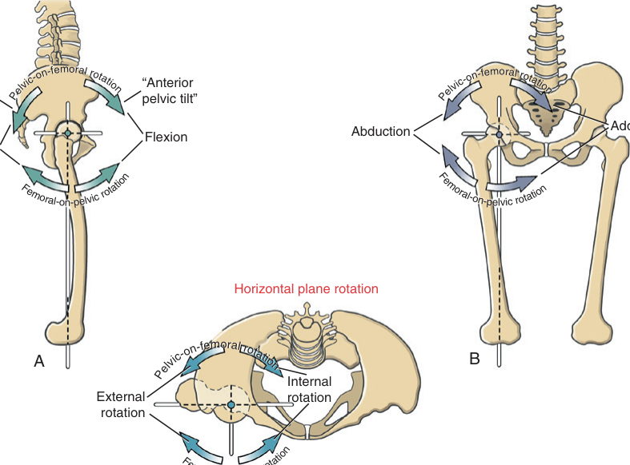
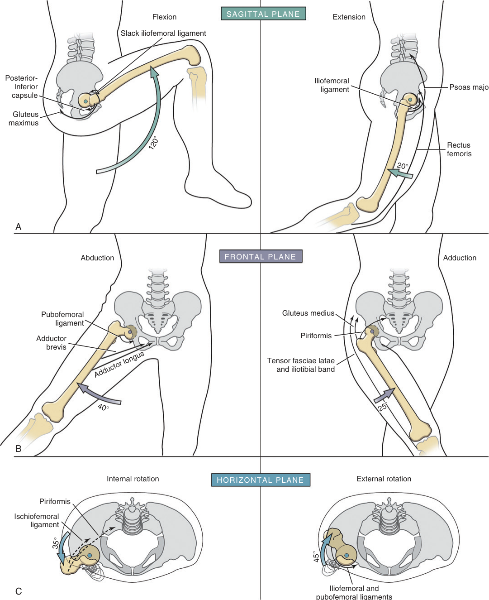
TẬP TRUNG ĐẶC BIỆT 12.2 — Áp suất trong bao khớp của khớp háng (Intracapsular Pressure within the Hip)
Như đã mô tả trước đó, áp suất trong bao khớp (intracapsular pressure) của một khớp háng khỏe mạnh bình thường thấp hơn áp suất khí quyển. Áp suất tương đối thấp này tạo ra một lực hút một phần giống như lực hút chân không, giúp mang lại một mức độ ổn định nhất định cho khớp háng.
Wingstrand và các cộng sự đã nghiên cứu ảnh hưởng của tư thế khớp và sự sưng nén bao khớp lên áp suất trong bao khớp của các khớp háng trên thi thể. Ngoại trừ các giới hạn cuối của tầm vận động, áp suất duy trì ở mức tương đối thấp trong suốt phần lớn chuyển động gập và duỗi. Khi bơm dịch vào trong khớp để mô phỏng tình trạng sưng nén bao khớp, áp suất tăng lên một cách đáng kể trong suốt phần lớn tầm vận động (Hình 12.20). Tuy nhiên, bất kể lượng dịch bơm vào là bao nhiêu, áp suất luôn luôn ở mức thấp nhất tại khoảng giữa của tầm vận động. Những dữ liệu này giúp giải thích tại sao người bị viêm bao khớp (capsulitis) kèm sưng nén trong khớp háng thường cảm thấy dễ chịu nhất khi giữ khớp háng ở tư thế gập một phần. Áp suất trong bao khớp giảm xuống có thể làm giảm sự giãn căng của bao khớp đang bị viêm. Đáng tiếc là theo thời gian, việc duy trì tư thế gập kéo dài có thể dẫn đến co rút (contracture) do sự rút ngắn thích ứng của các cơ gập khớp háng và các dây chằng bao khớp.
Vì vậy, một người có tình trạng sưng nén bao khớp liên quan đến viêm màng hoạt dịch, bao khớp hoặc túi hoạt dịch của khớp háng dễ mắc co rút gập (flexion contracture). Việc giảm viêm và sưng nén bằng thuốc và vật lý trị liệu có thể giúp các hoạt động ưa chuộng tư thế duỗi trở nên dễ dung nạp hơn. Cần thiết kế các bài tập củng cố các cơ duỗi khớp háng đồng thời kéo giãn các cơ gập khớp háng và các cấu trúc bao khớp phía trước. Các nghiên cứu chỉ ra rất mạnh mẽ rằng cơ mông lớn (một cơ duỗi khớp háng chính) bị ức chế về mặt thần kinh sau khi tràn dịch trong bao khớp (sưng nén) được mô phỏng, do đó các hoạt động trị liệu khuyến khích hoạt hóa mạnh các cơ duỗi khớp háng là đặc biệt quan trọng.
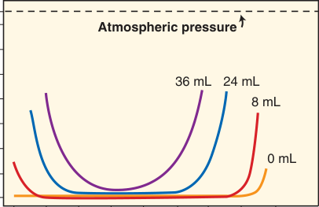
Trừ khi có chỉ định khác, các thảo luận sau đây đề cập đến các tầm vận động thụ động. Một số mô liên kết và cơ hạn chế chuyển động đã được tổng hợp trong Bảng 12.1. Các cơ dùng để tạo ra và kiểm soát chuyển động của khớp háng sẽ được bàn luận sau trong chương này. Mặc dù các chuyển động kiểu xương đùi trên khung chậu và kiểu khung chậu trên xương đùi thường xảy ra đồng thời, chúng sẽ được trình bày ở đây một cách riêng biệt.
Trung bình, khi gối được gập, khớp háng gập được khoảng 120 độ (Hình 12.19A). Các hoạt động như ngồi xổm một cách thoải mái hay buộc dây giày thường đòi hỏi toàn bộ lượng gập này. Nói chung, việc gập khớp háng làm thả lỏng phần lớn các sợi của ba dây chằng bao khớp chính. Tuy nhiên, ở giới hạn cuối của tầm gập hoàn toàn, một số sợi sâu hơn của phần bao khớp phía sau–dưới của khớp bị kéo giãn. Vì vậy, những độ gập cuối cùng của tầm gập hoàn toàn khớp háng thường là kết quả của xoay xương đùi kết hợp với sự ngả về sau vừa khiêm tốn vừa quan sát được của khung chậu cùng với gập vùng thắt lưng liên quan. Về bản chất, khi khớp háng tiến gần đến tầm gập thụ động hoàn toàn, khung chậu "đi theo" hướng xoay của xương đùi do lực căng tác động lên phần sâu của bao khớp cũng như các cơ duỗi khớp háng như cơ mông lớn. Với gối duỗi hoàn toàn, tầm gập khớp háng thường bị giới hạn ở mức 70 đến 80 độ do lực căng tăng lên trong các cơ gân kheo. Lượng chuyển động này thay đổi đáng kể vì mỗi người có mức độ linh hoạt của cơ gân kheo khác nhau.
Khớp háng bình thường duỗi được khoảng 20 độ vượt quá vị trí trung tính. Duỗi khớp háng hoàn toàn làm tăng lực căng thụ động trên phần lớn các dây chằng bao khớp, đặc biệt là dây chằng chậu–đùi, cũng như các cơ gập khớp háng. Khi gối được gập hoàn toàn trong lúc duỗi khớp háng, lực căng thụ động trong cơ thẳng đùi đang bị kéo giãn — một cơ đi qua cả khớp háng và khớp gối — sẽ giảm tầm duỗi khớp háng xuống còn khoảng vị trí trung tính.
Trung bình, khớp háng dạng được khoảng 40–45 độ, bị giới hạn chủ yếu bởi dây chằng mu–đùi và các cơ khép (xem Hình 12.19B). Khớp háng khép được khoảng 25 độ vượt quá vị trí trung tính. Ngoài sự cản trở của chi bên đối bên, khép có thể bị giới hạn bởi lực căng thụ động trong các cơ dạng khớp háng đang bị kéo giãn, bao gồm cả cơ hình lê, và trong dải chậu–gối.
Độ lớn của xoay trong và xoay ngoài khớp háng đặc biệt thay đổi nhiều giữa các đối tượng nghiên cứu. Trung bình, khớp háng xoay trong được khoảng 35 độ so với vị trí trung tính (xem Hình 12.19C). Ở tư thế duỗi khớp háng, xoay trong tối đa làm kéo giãn các cơ xoay ngoài, chẳng hạn cơ hình lê, và một phần của dây chằng ngồi–đùi.
Khớp háng ở tư thế duỗi xoay ngoài trung bình khoảng 45 độ. Lực căng quá mức trong bó dọc bên (lateral fasciculus) của dây chằng chậu–đùi có thể giới hạn tầm xoay ngoài hoàn toàn; độ cứng tăng cao ở bất kỳ cơ nào góp phần vào xoay trong cũng có thể gây giới hạn này.
Đầu phía đuôi của bộ xương trục gắn chặt vào khung chậu qua các khớp cùng–chậu. Do đó, việc khung chậu xoay trên các đầu xương đùi sẽ thay đổi hình dạng cấu trúc của cột sống thắt lưng. Mối quan hệ động học quan trọng này được gọi là nhịp thắt lưng–chậu (lumbopelvic rhythm), đã được giới thiệu trong Chương 9. Khái niệm này sẽ được đề cập lại trong chương này với trọng tâm là cơ sinh học tại khớp háng.
Hình 12.21 cho thấy hai kiểu nhịp thắt lưng–chậu tương phản nhau được sử dụng thường xuyên trong gập khớp háng kiểu khung chậu trên xương đùi. Mặc dù các động học được mô tả chỉ giới hạn trong mặt phẳng đứng dọc, các khái niệm này cũng có thể áp dụng cho các xoay khung chậu trong mặt phẳng trán và mặt phẳng ngang. Hình 12.21A cho thấy một ví dụ về nhịp thắt lưng–chậu cùng hướng (ipsidirectional lumbopelvic rhythm), trong đó khung chậu và cột sống thắt lưng xoay cùng một hướng. Tác động của chuyển động này là tối đa hóa biên dạng góc của toàn bộ thân mình so với chi dưới — một chiến lược hiệu quả để tăng tầm với của chi trên. Động học của nhịp thắt lưng–chậu cùng hướng đã được bàn luận chi tiết trong Chương 9. Ngược lại, trong nhịp thắt lưng–chậu ngược hướng (contradirectional lumbopelvic rhythm), khung chậu xoay theo một hướng trong khi cột sống thắt lưng đồng thời xoay theo hướng ngược lại (xem Hình 12.21B). Hệ quả quan trọng của chuyển động này là thân trên mức thắt lưng (supralumbar trunk) (tức phần cơ thể nằm phía trên đốt sống thắt lưng thứ nhất) có thể đứng gần như yên vị trong khi khung chậu xoay trên các xương đùi. Kiểu nhịp này được sử dụng khi đi bộ: ví dụ, khi vị trí của thân trên mức thắt lưng — bao gồm cả đầu và mắt — cần được giữ tương đối cố định trong không gian, độc lập với sự xoay của khung chậu. Bằng cách này, cột sống thắt lưng hoạt động như một "bộ tách rời" cơ học (mechanical "decoupler"), cho phép khung chậu và thân trên mức thắt lưng di chuyển độc lập với nhau. Vì vậy, một người có cột sống thắt lưng đã được hợp nhất sẽ không thể xoay tự do khung chậu quanh các khớp háng nếu không có sự xoay tương tự của một phần thân trên mức thắt lưng, điều này thường quan sát thấy khi người đó đi bộ.
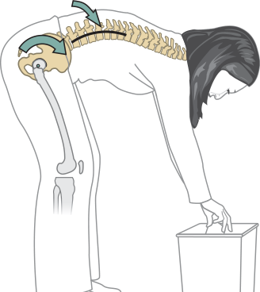
Hình 12.22 cho thấy động học xương kiểu khung chậu trên xương đùi tại khớp háng, được tổ chức theo mặt phẳng vận động. Các động học này đều dựa trên một nhịp thắt lưng–chậu ngược hướng. Trong nhiều trường hợp, lượng xoay kiểu khung chậu trên xương đùi này bị hạn chế bởi những giới hạn tự nhiên của chuyển động trong cột sống thắt lưng.
Gập khớp háng có thể xảy ra thông qua việc khung chậu ngả về trước (anterior pelvic tilt) (xem Hình 12.22A). (Như đã định nghĩa trong Chương 9, "nghiêng khung chậu" (pelvic tilt) là một xoay quãng ngắn của khung chậu trong mặt phẳng đứng dọc so với các xương đùi đứng yên. Tên gọi hướng của sự nghiêng — trước so với sau — dựa trên hướng di chuyển của mào chậu quanh một trục trong–ngoài đi qua cả hai đầu xương đùi.) Sự tăng độ ưỡn thắt lưng (lumbar lordosis) liên quan đi kèm với khung chậu ngả về trước đã bù trừ phần lớn xu hướng thân trên mức thắt lưng đi theo chuyển động xoay về phía trước của khung chậu. Trong khi ngồi với 90 độ gập khớp háng, người trưởng thành bình thường có thể thực hiện thêm khoảng 30 độ gập khớp háng kiểu khung chậu trên xương đùi trước khi bị giới hạn bởi một cột sống thắt lưng đã duỗi hoàn toàn. Khung chậu ngả về trước hoàn toàn làm thả lỏng phần lớn các dây chằng của khớp háng, đáng chú ý nhất là dây chằng chậu–đùi. Về lý thuyết, sự căng cứng rõ rệt ở bất kỳ cơ duỗi khớp háng nào — chẳng hạn nhóm gân kheo — có thể giới hạn các giới hạn cuối của khung chậu ngả về trước. Tuy nhiên, như được mô tả trong Hình 12.22A, vì các gối được gập nên các cơ gân kheo được thả lỏng một phần bình thường sẽ không tạo ra lực cản đáng chú ý nào đối với xoay khung chậu ngả về trước. Ngược lại, khi đứng với các gối duỗi hoàn toàn, nhóm gân kheo trở nên giãn dài hơn và do đó có thể kháng lại khung chậu ngả về trước tốt hơn. Dù vậy, lực cản này thường vẫn khá nhỏ, trừ khi các cơ bị suy yếu về mặt sinh lý theo cách tạo ra lực cản đáng kể đối với sự kéo giãn.
Như được mô tả trong Hình 12.22A, các khớp háng có thể được duỗi khoảng 10 đến 20 độ so với tư thế ngồi 90 độ thông qua việc khung chậu ngả về sau (posterior tilt of the pelvis). Trong khi ngồi, xoay quãng ngắn của khung chậu này sẽ chỉ làm tăng chiều dài (và do đó lực căng) một cách tối thiểu trong dây chằng chậu–đùi và cơ thẳng đùi. Với các xương đùi được cố định, khung chậu ngả về sau làm gập cột sống thắt lưng và giảm độ ưỡn của nó. Như đã mô tả trong Chương 9 và được nêu bật trong Hình 9.63, việc thay đổi mức độ gập thắt lưng (hoặc độ ưỡn) ảnh hưởng đến đường kính của lỗ liên đốt sống (intervertebral foramen) và tác động đến chiều hướng của gradient áp suất–dòng chảy của nhân nhầy (nucleus pulposus). (Những ảnh hưởng này và các ảnh hưởng khác lên cột sống thắt lưng có thể được xem lại trong Bảng 9.10.) Mối liên kết giải phẫu và động học giữa khớp háng và cột sống thắt lưng đặc biệt có ý nghĩa lâm sàng trong việc đánh giá và điều trị đau hoặc rối loạn chuyển động ở vùng cơ thể này.
Xoay kiểu khung chậu trên xương đùi trong mặt phẳng trán và mặt phẳng ngang được mô tả rất phù hợp qua một người đứng trên một chi trong bối cảnh của một nhịp thắt lưng–chậu ngược hướng. Trong bối cảnh này, chi chịu trọng lượng được gọi là khớp háng đỡ (support hip) xuyên suốt chương này.
Dạng khớp háng đỡ xảy ra bằng cách nâng hoặc "nhấc lên" (hiking) mào chậu ở phía khớp háng không đỡ (nonsupport hip) (xem Hình 12.22B). Giả sử thân trên mức thắt lưng đứng gần như yên vị, cột sống thắt lưng phải cong về hướng ngược với khung chậu đang xoay. Như vậy vùng thắt lưng tạo thành một độ cong lồi về bên (lateral convexity) nhẹ về phía khớp háng đang dạng.
Dạng khớp háng kiểu khung chậu trên xương đùi bị giới hạn ở khoảng 30 độ, chủ yếu vì những giới hạn tự nhiên của việc cong bên trong cột sống thắt lưng. Sự căng cứng rõ rệt ở các cơ khép cùng bên hoặc ở dây chằng mu–đùi có thể giới hạn dạng khớp háng kiểu khung chậu trên xương đùi. Nếu có một co rút khép rõ rệt, mào chậu ở phía khớp háng không đỡ có thể duy trì ở mức thấp hơn mào chậu của khớp háng đỡ, điều này có thể cản trở việc đi bộ.
Khép khớp háng đỡ xảy ra bằng cách hạ mào chậu ở phía khớp háng không đỡ xuống. Chuyển động này tạo ra một độ cong lõm về bên (lateral concavity) nhẹ trong vùng thắt lưng về phía khớp háng được khép (xem bên phải của Hình 12.22B). Một cột sống thắt lưng giảm di động (hypomobile) hoặc đau và/hoặc khả năng giãn dài giảm của dải chậu–gối hoặc các cơ dạng khớp háng, chẳng hạn cơ mông giữa, cơ hình lê hoặc cơ căng mạc đùi, có thể giới hạn các giới hạn cuối của chuyển động này.
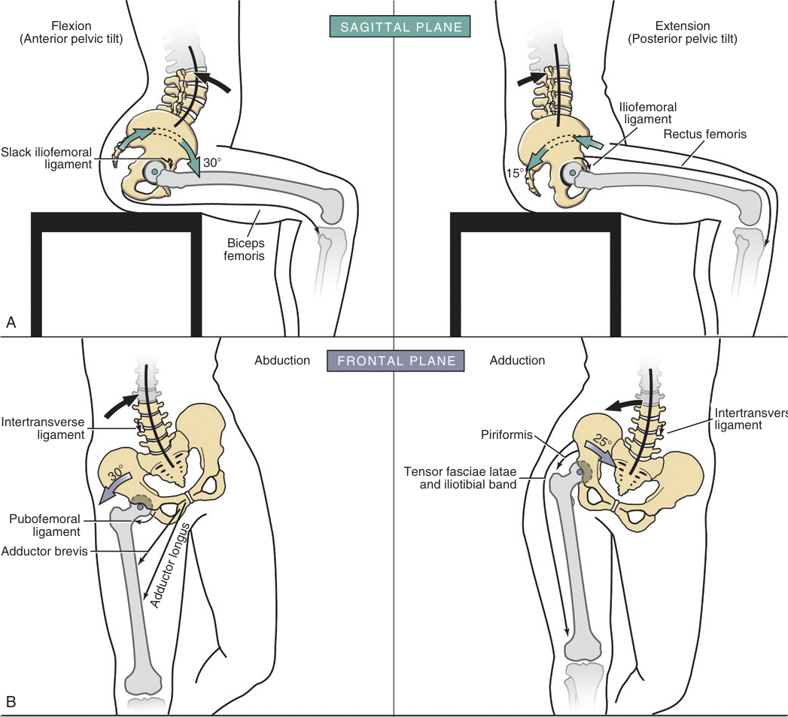
TẬP TRUNG ĐẶC BIỆT 12.3 — Các giá trị chuẩn về tầm vận động: Vậy còn khớp háng của trẻ em thì sao? (Norms for Range of Motion: What About the Hip of the Child?)
Tầm vận động chuẩn của khớp háng (hoặc của bất kỳ khớp nào) thường được xác định bằng cách sử dụng thước đo góc (goniometer). Thông thường, các phép đo chuẩn này được thực hiện bởi các nhà lâm sàng giàu kinh nghiệm, trên một mẫu đối tượng tương đối lớn, phần lớn là người trưởng thành. Những dữ liệu động học này phục vụ nhiều mục đích, chẳng hạn đánh giá một bệnh lý nền tảng, xác định khả năng thực hiện các hoạt động tự chăm sóc (như với tay mang giày), hoặc thiết kế thiết bị y tế và các chi giả. Mặc dù không phổ biến bằng, các giá trị chuẩn cũng sẵn có để mô tả tầm vận động khớp háng của trẻ em. Giống như trường hợp người trưởng thành, các giá trị chuẩn cho trẻ em có thể giúp xác định các vấn đề y tế nền tảng. Ví dụ, một trẻ mắc bệnh khớp viêm (inflammatory arthropathy) ở khớp háng thường biểu hiện xoay trong bị hạn chế. Tương tự, một trẻ bị trượt chỏm xương đùi trên (slipped capital femoral epiphysis, SCFE) thường sẽ có xoay trong giảm và xoay ngoài quá mức do phần đầu trên của xương đùi trượt về phía sau–dưới so với thân xương đùi.
Bảng 12.2 liệt kê các giá trị tầm vận động (thụ động) trung bình được đo từ một mẫu gồm 252 bệnh nhân trẻ tuổi (2–17 tuổi) không có bệnh lý nền tảng ảnh hưởng đến chi dưới của họ. Phân tích dữ liệu cho thấy một xu hướng giảm ở phần lớn các tầm vận động của khớp háng khi tuổi tăng lên. Sự suy giảm tầm vận động ít rõ rệt hơn ở các bé gái. Kết quả là sự khác biệt về tầm vận động theo giới có rõ rệt hơn ở nhóm trẻ lớn tuổi hơn. Ví dụ, trong khi không phát hiện sự khác biệt có ý nghĩa nào giữa các bé trai và bé gái ở bất kỳ tầm vận động nào trong nhóm 2–5 tuổi, thì ở nhóm lớn tuổi nhất các bé trai lại có tầm vận động kém hơn các bé gái đối với các chuyển động trong mặt phẳng đứng dọc và mặt phẳng trán cũng như xoay ngoài với khớp háng ở tư thế duỗi. Những cân nhắc này rất quan trọng đối với các nhà lâm sàng điều trị trẻ em ở nhiều độ tuổi khác nhau.
| Chuyển động (MOTION) | Nam (Males) | Nữ (Females) | ||||
|---|---|---|---|---|---|---|
| 2–5 tuổi | 6–10 tuổi | 11–17 tuổi | 2–5 tuổi | 6–10 tuổi | 11–17 tuổi | |
| Gập (Flexion) | 118 (12) | 118 (9) | 113 (12) | 121 (10) | 122 (13) | 120 (8) |
| Duỗi (Extension) | 21 (5) | 19 (4) | 15 (5) | 21 (5) | 21 (5) | 22 (3) |
| Dạng (Abduction) | 51 (11) | 43 (12) | 34 (10) | 53 (15) | 51 (12) | 44 (14) |
| Khép (Adduction) | 17 (5) | 15 (5) | 14 (5) | 18 (5) | 18 (6) | 17 (5) |
| Xoay trong (Fl) | 45 (13) | 40 (10) | 35 (11) | 47 (11) | 41 (11) | 35 (10) |
| Xoay trong (Ext) | 47 (9) | 42 (10) | 36 (11) | 51 (9) | 47 (10) | 42 (9) |
| Xoay ngoài (Fl) | 51 (11) | 44 (11) | 40 (12) | 49 (12) | 48 (5) | 46 (3) |
| Xoay ngoài (Ext) | 47 (10) | 42 (12) | 39 (11) | 50 (12) | 45 (12) | 44 (8) |
Dữ liệu lấy từ Sankar WN, Laird CT, Baldwin KD: Hip range of motion in children: what is the norm? J Pediatr Orthop 32(4):399–405, 2012.
*Giá trị trung bình và độ lệch chuẩn (trong ngoặc đơn) được liệt kê theo đơn vị độ ở ba nhóm tuổi cho mỗi giới (N = 163 nam và 89 nữ). Tại thời điểm đo, tất cả bệnh nhân đều đang được điều trị gãy xương chi trên. Ext, tư thế duỗi; Fl, tư thế gập.
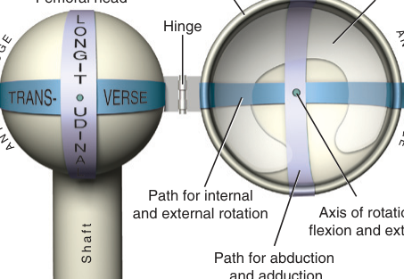
Xoay khung chậu trong mặt phẳng ngang (Pelvic Rotation in the Horizontal Plane)
Xoay khung chậu trên xương đùi diễn ra trong mặt phẳng ngang quanh một trục xoay dọc (xem vòng tròn màu xanh lá tại chỏm xương đùi trong Hình 12.22C). Xoay trong của khớp háng của chân đỡ xảy ra khi mào chậu ở phía khớp háng của chân không đỡ xoay về phía trước trong mặt phẳng ngang. Ngược lại, trong động tác xoay ngoài, mào chậu ở phía khớp háng của chân không đỡ xoay về phía sau trong mặt phẳng ngang. Nếu khung chậu xoay bên dưới một thân người tương đối đứng yên, cột sống thắt lưng phải xoay (hoặc vặn) ngược chiều với khung chậu đang xoay. Lượng xoay trục nhỏ mà cột sống thắt lưng bình thường cho phép sẽ hạn chế đáng kể sự thể hiện trọn vẹn chuyển động mặt phẳng ngang của khớp háng của chân đỡ khi cố gắng giữ thân người hướng về phía trước. Để đạt được toàn bộ tiềm năng của xoay khung chậu trên xương đùi, cột sống thắt lưng và thân người phải đi theo chiều xoay của khung chậu — một chiến lược vận động phù hợp hơn với nhịp thắt lưng–chậu cùng hướng (ipsidirectional lumbopelvic rhythm).
Trong quá trình chuyển động của khớp háng, chỏm xương đùi gần như hình cầu thường nằm gọn và khít trong phạm vi của ổ xương hứng. Các thành dốc và độ sâu tương đối của ổ xương hứng, kết hợp với cánh môi ổ xương hứng ôm khít, hạn chế mức dịch chuyển sinh lý trung bình giữa các mặt khớp xuống còn khoảng 2 mm hoặc ít hơn. Tuy vậy, động học khớp của khớp háng vẫn dựa trên các nguyên tắc truyền thống về mặt lồi trên mặt lõm và mặt lõm trên mặt lồi (xem Chương 1).
Hình 12.23 trình bày một hình minh họa mang tính cơ học cao về một khớp háng được mở ra để có thể quan sát các đường đi chuyển động khớp. Giả sử chuyển động bắt đầu từ tư thế giải phẫu, động tác dạng và khép diễn ra dọc theo đường kính dọc của các mặt khớp. Xoay trong và xoay ngoài diễn ra ngang qua đường kính ngang của các mặt khớp. Gập và duỗi diễn ra như một chuyển động xoay trục giữa chỏm xương đùi và các mặt hình trăng khuyết của ổ xương hứng. Trục xoay của chuyển động xoay trục này đi qua chỏm xương đùi.
Chi phối thần kinh của các cơ (Innervation of Muscles)
Đám rối thắt lưng (lumbar plexus) và đám rối cùng (sacral plexus) bắt nguồn từ các nhánh trước của các rễ thần kinh sống T12 đến S4. Các thần kinh xuất phát từ đám rối thắt lưng chi phối các cơ vùng trước và vùng trong của đùi, bao gồm cơ tứ đầu đùi. Các thần kinh xuất phát từ đám rối cùng chi phối các cơ vùng sau và vùng ngoài của khớp háng, mặt sau đùi và toàn bộ cẳng chân.
Đám rối thắt lưng (Lumbar Plexus)
Đám rối thắt lưng được tạo thành từ các nhánh trước của các rễ thần kinh sống T12–L4. Đám rối này tạo ra thần kinh đùi (femoral nerve) và thần kinh bịt (obturator nerve) (Hình 12.24A). Thần kinh đùi, nhánh lớn nhất của đám rối thắt lưng, được tạo thành từ các rễ thần kinh L2–L4. Các nhánh vận động chi phối phần lớn các cơ gập khớp háng và toàn bộ các cơ duỗi gối. Trong khung chậu, phía trên dây chằng bẹn (inguinal ligament), thần kinh đùi chi phối cơ thắt lưng lớn và cơ chậu. Phía dưới dây chằng bẹn, thần kinh đùi chi phối cơ may, một phần cơ mu và nhóm cơ tứ đầu đùi. Thần kinh đùi có vùng phân bố cảm giác rộng, bao phủ phần lớn da của mặt trước–trong đùi. Các nhánh cảm giác của thần kinh đùi chi phối da mặt trước–trong cẳng chân, thông qua thần kinh da ẩn (saphenous cutaneous nerve).
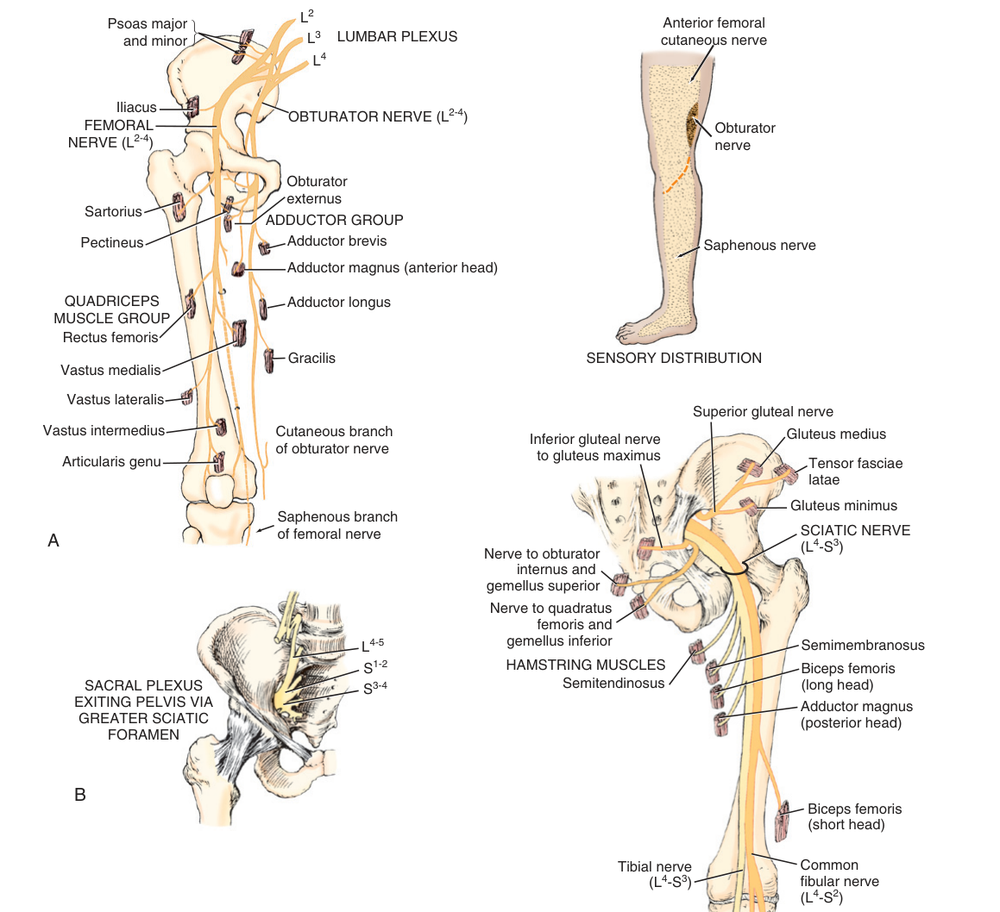
Chi phối vận động của chi dưới xuất phát từ đám rối cùng (Motor Innervation of the Lower Extremity Originating from the Sacral Plexus)
Chi phối vận động của chi dưới xuất phát từ đám rối thắt lưng (Motor Innervation of the Lower Extremity Originating from the Lumbar Plexus)
Giống như thần kinh đùi, thần kinh bịt được tạo thành từ các rễ thần kinh L2–L4. Các nhánh vận động chi phối các cơ khép khớp háng. Khi đi qua lỗ bịt (obturator foramen), thần kinh bịt chia thành nhánh trước và nhánh sau. Nhánh sau chi phối cơ bịt ngoài và đầu trước của cơ khép lớn. Nhánh trước chi phối một phần cơ mu, cơ khép ngắn, cơ khép dài và cơ mảnh. Thần kinh bịt có vùng phân bố cảm giác đến da mặt trong đùi.
Đám rối cùng (Sacral Plexus)
Đám rối cùng, nằm ở thành sau khung chậu, được tạo thành từ các nhánh trước của các rễ thần kinh sống L4–S4. Phần lớn các thần kinh từ đám rối cùng đi ra khỏi khung chậu qua lỗ cùng lớn (greater sciatic foramen) để chi phối các cơ vùng sau của khớp háng (xem Hình 12.24B). Ba dây thần kinh nhỏ chi phối năm trong sáu cơ “xoay ngoài ngắn” của khớp háng. Các thần kinh này được đặt tên đơn giản theo các cơ mà chúng chi phối. Thần kinh đến cơ hình lê (S1–S2) chi phối cơ hình lê. Bên ngoài khung chậu, thần kinh đến cơ bịt trong và cơ kép trên (L5–S2) cùng thần kinh đến cơ vuông đùi và cơ kép dưới (L4–S1) đi đến và chi phối các cơ tương ứng của chúng.
Thần kinh mông trên và thần kinh mông dưới được đặt tên theo vị trí của chúng so với cơ hình lê khi đi ra khỏi hố cùng lớn (greater sciatic notch). Thần kinh mông trên (L4–S1) chi phối cơ mông giữa, cơ mông nhỏ và cơ căng mạc đùi. Thần kinh mông dưới (L5–S2) là nguồn chi phối vận động duy nhất của cơ mông lớn.
Thần kinh tọa, dây thần kinh to và dài nhất trong cơ thể, được tạo thành từ các rễ thần kinh L4–S3. Thần kinh này đi ra khỏi khung chậu qua lỗ cùng lớn, thường ở phía dưới cơ hình lê. Thần kinh tọa gồm hai dây thần kinh: thần kinh chày (tibial nerve) và thần kinh mác chung (common fibular nerve, còn gọi là thần kinh peroneal), cả hai đều được bọc trong một vỏ mô liên kết chung. Ở mặt sau đùi, phần chày của thần kinh tọa chi phối toàn bộ các cơ hai khớp trong nhóm gân kheo và đầu sau của cơ khép lớn. Phần mác chung của thần kinh tọa chi phối đầu ngắn của cơ nhị đầu đùi.
Thần kinh tọa thường phân đôi thành hai thành phần riêng biệt là thần kinh chày và thần kinh mác chung ngay phía trên gối. Tuy nhiên, việc phân chia này xảy ra gần khung chậu hơn cũng không hiếm gặp. Một sự phân chia phía trên lỗ cùng lớn có thể khiến thần kinh mác chung đâm xuyên qua cơ hình lê khi thần kinh đi ra khỏi khung chậu.
Để tiện tham chiếu, các rễ thần kinh sống chính chi phối các cơ của chi dưới được liệt kê trong Phụ lục IV, Phần A. Ngoài ra, Phần B và Phần C của Phụ lục IV gồm các mục tham chiếu bổ sung giúp định hướng đánh giá lâm sàng tình trạng chức năng của các cấu trúc được chi phối bởi các rễ thần kinh L2–S3.
Chi phối cảm giác của khớp háng (Sensory Innervation of the Hip)
Theo quy luật chung, bao khớp háng, các dây chằng và một phần cánh môi ổ xương hứng nhận chi phối cảm giác qua chính các rễ thần kinh chi phối các cơ nằm phía trên chúng. Bao khớp trước nhận các sợi cảm giác chủ yếu từ thần kinh đùi và thần kinh bịt. Bao khớp sau nhận các sợi cảm giác từ các rễ thần kinh bắt nguồn từ đám rối cùng, được dẫn truyền chủ yếu qua thần kinh tọa và thần kinh mông trên, cũng như qua thần kinh đến cơ vuông đùi. Các mô liên kết của vùng trước–trong khớp háng và vùng trong đầu gối đều nhận các sợi cảm giác từ thần kinh bịt, đặc biệt qua rễ thần kinh L3; điều này có thể lý giải vì sao tình trạng viêm ở khớp háng có thể được cảm nhận như đau ở vùng trong đầu gối.
Xuyên suốt chương này, các đường lực (lines of force) của nhiều cơ khác nhau được minh họa tương đối so với một số trục xoay nhất định tại khớp háng. Chẳng hạn, Hình 12.25 trình bày một biểu diễn trong mặt phẳng đứng dọc của các cơ gập và cơ duỗi quan trọng của khớp háng. Mặc dù Hình 12.25 cung cấp cái nhìn hữu ích về tiềm năng chức năng của một số cơ, hai hạn chế phải được cân nhắc. Thứ nhất, đường lực của mỗi cơ không biểu diễn một vectơ lực; thay vào đó, nó mô tả hướng tổng thể của lực cơ trong mặt phẳng đứng dọc. Do đó, hình vẽ không cung cấp thông tin cần thiết để so sánh tiềm năng “sức mạnh” — hay mô men — giữa các cơ. So sánh này đòi hỏi thông tin bổ sung, chẳng hạn hướng ba chiều của cơ so với khớp háng và diện tích tiết diện ngang của cơ. Thứ hai, các đường lực và chiều dài cánh tay đòn tương ứng được mô tả trong Hình 12.25 chỉ áp dụng khi khớp háng ở tư thế giải phẫu. Một khi khớp háng rời khỏi tư thế này, hướng tác động và tiềm năng mô men của mỗi cơ có thể thay đổi đáng kể. Điều này một phần lý giải vì sao mô men trong khi phát lực tối đa của một nhóm cơ thay đổi trong suốt tầm chuyển động.
| Cơ gập (Flexors) | Cơ khép (Adductors) | Cơ xoay trong (Internal Rotators) | Cơ duỗi (Extensors) | Cơ dạng (Abductors) | Cơ xoay ngoài (External Rotators) | |
|---|---|---|---|---|---|---|
| Chính (Primary) | Cơ chậu–thắt lưng Cơ may Cơ căng mạc đùi Cơ thẳng đùi | Cơ khép dài Cơ mu Cơ mảnh Cơ khép ngắn Cơ khép lớn | Không áp dụng (Not applicable) | Cơ mông lớn Cơ nhị đầu đùi (đầu dài) Cơ bán gân Cơ bán màng Cơ khép lớn (đầu sau) | Cơ mông giữa Cơ mông nhỏ Cơ căng mạc đùi | Cơ mông lớn Cơ hình lê Cơ bịt trong Cơ kép trên Cơ kép dưới Cơ vuông đùi |
| Phụ (Secondary) | Cơ khép ngắn Cơ mảnh Cơ mông nhỏ (các sợi trước) | Cơ nhị đầu đùi (đầu dài) Cơ mông lớn (các sợi dưới/sau) Cơ vuông đùi Cơ bịt ngoài | Cơ mông nhỏ và cơ mông giữa (các sợi trước) Cơ căng mạc đùi Cơ khép dài Cơ khép ngắn Cơ mu | Cơ mông giữa (các sợi giữa và sau) Cơ khép lớn (đầu trước) | Cơ hình lê Cơ may Cơ thẳng đùi | Cơ mông lớn (các sợi trước/trên) Cơ mông giữa và cơ mông nhỏ (các sợi sau) Cơ bịt ngoài Cơ may Cơ nhị đầu đùi (đầu dài) |
*Mỗi tác động được giả định xuất phát từ một sự co cơ khởi đầu ở tư thế giải phẫu. Một số cơ trong số này có thể có tác động khác (hoặc mức mạnh của tác động khác) khi chúng co cơ từ một tư thế khác tư thế giải phẫu.
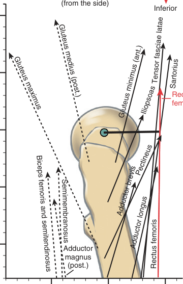
Ngoài ra, trong suốt chương này, tác động của một cơ được xem xét với tư cách là tác động chính (primary) hoặc thứ cấp (secondary) (Bảng 12.3). Việc xếp loại tác động của cơ dựa trên các số liệu như chiều dài cánh tay đòn, diện tích tiết diện ngang, hướng sợi cơ tổng thể, và, khi có sẵn, các báo cáo đã công bố từ các nghiên cứu dựa trên điện cơ đồ (electromyography, EMG) và các nghiên cứu giải phẫu. Trừ khi có chỉ định khác, các tác động của cơ được dựa trên một sự co đồng tâm (concentric contraction) xuất phát từ tư thế giải phẫu. Những cơ có tác động tương đối không đáng kể hoặc vốn yếu, hoặc những tác động chỉ đáng kể khi ở ngoài tư thế giải phẫu, sẽ không được đưa vào Bảng 12.3. Đối chiếu Phụ lục IV, Phần D để có danh sách chi tiết hơn về các chỗ bám và phân bố thần kinh của tất cả các cơ của háng. Ngoài ra, để tham khảo, diện tích tiết diện ngang của một số cơ được chọn của háng được liệt kê trong Phụ lục IV, Phần E.
Các cơ gập háng chính gồm cơ chậu–thắt lưng (iliopsoas), cơ may (sartorius), cơ căng mạc đùi (tensor fasciae latae), cơ thẳng đùi (rectus femoris), cơ khép dài (adductor longus), và cơ mu (pectineus) (Hình 12.26). Hình 12.25 cho thấy đòn bẩy gập tuyệt vời của nhiều cơ này. Các cơ gập háng thứ cấp gồm cơ khép ngắn (adductor brevis), cơ mảnh (gracilis), và các thớ trước của cơ mông nhỏ (gluteus minimus). Cơ thắt lưng bé (psoas minor), mặc dù tự thân không phải là một cơ gập háng, cũng được bàn đến trong phần này.
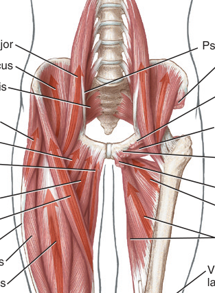
Cơ chậu–thắt lưng là một cơ lớn và dài, trải rộng trên vùng giữa đốt sống ngực cuối cùng và phần gần của xương đùi (xem Hình 12.26). Về mặt giải phẫu, cơ chậu–thắt lưng gồm hai cơ: cơ chậu (iliacus) và cơ thắt lưng lớn (psoas major). Cơ chậu bám vào hố chậu (iliac fossa) và bờ ngoài cùng của xương cùng, ngay trên khớp cùng–chậu. Cơ thắt lưng lớn bám dọc theo các mỏm ngang của đốt sống ngực cuối cùng và tất cả các đốt sống thắt lưng, gồm cả các đĩa đệm liên đốt sống. Một số chỗ bám gần của cơ thắt lưng lớn hòa vào các chỗ bám thuộc cột sống của cơ hoành.
Các sợi của cơ chậu và cơ thắt lưng lớn hòa một phần vào nhau ngay trước chỏm xương đùi, trước khi cuối cùng bám vào mỏm xoay nhỏ (lesser trochanter) của xương đùi (Hình 12.27). Trên đường đến chỗ bám xa, gân rộng và nhiều thịt của cơ chậu–thắt lưng bị bẻ lệch về phía sau khoảng 35 đến 45 độ khi nó đi qua mép trước ngoài của khung chậu (gần mối nối giữa nhánh chậu–mu và nhánh mu trên; xem lại Hình 12.1). Khi háng ở tư thế duỗi, sự bẻ lệch này làm tăng góc bám (angle-of-insertion) của gân vào xương đùi, từ đó làm tăng đòn bẩy của cơ cho việc gập háng. Khi háng gập đến 90 độ, cánh tay đòn tăng lên còn lớn hơn nữa, điều này có thể giúp bù đắp cho sự mất lực của cơ do trạng thái bị rút ngắn đáng kể của nó.
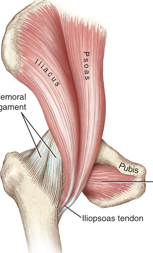
Giữa vùng của khớp háng và mỏm xoay nhỏ, cơ chậu–thắt lưng được cấu tạo từ khoảng 50% gân và 50% cơ. Tuy nhiên, các quan sát cẩn thận đã cho thấy rằng một số lượng đáng kể các sợi từ phía bên của cơ chậu vẫn giữ nguyên chất cơ khi chúng đi xuống để bám vào và hơi xa hơn về phía xa so với mỏm xoay nhỏ. Chỗ bám nhiều cơ này tương phản với các chỗ bám nhiều gân hơn do cơ thắt lưng lớn tạo ra. Nằm sâu dưới và tách rời khỏi phần xa của cơ chậu–thắt lưng là một bộ các sợi cơ mỏng và thường khó xác định rõ, hòa vào bao khớp phía trước–trong của háng, thường được nhắc đến trong tài liệu với tên gọi iliocapsularis. Cơ nhỏ này có thể tạo thêm một phần độ ổn định cho bao khớp trước của khớp, đặc biệt ở những háng mà ổ xương hứng bị loạn sản và thiếu phát triển.
VIDEO 12.1 làm nổi bật giải phẫu cơ–gân của phần xa cơ chậu–thắt lưng khi nó băng qua khớp háng về phía mỏm xoay nhỏ. Vùng háng này có tầm quan trọng lâm sàng. Mặc dù vấn đề này chưa được hiểu đầy đủ, phần xa của cơ chậu–thắt lưng có thể bị mài mòn về mặt cơ học khi nó đi xuống phía xa qua mỏm chậu–mu (iliopubic eminence) (xem lại Hình 12.1), bao khớp háng, chỏm xương đùi, hoặc mép trước của khung chậu. Một biểu hiện lâm sàng của sự mài mòn này được gọi là hội chứng "háng bật kêu phía trong" (internal snapping hip). Khi gây đau và gây tàn phế, một số bác sĩ thực hiện phẫu thuật thả lỏng một phần hoặc kéo dài các phần gân của cơ chậu–thắt lưng xa như một cách để giảm nguồn kích thích cơ học giữa gân và các cấu trúc xương nằm sâu hơn. Việc giữ nguyên các sợi nhiều cơ hơn của đơn vị cơ–gân thường được mong muốn như một cách để bảo vệ tính liên tục của cơ và cuối cùng là sức mạnh gập háng.
Về mặt động học cơ, cơ chậu–thắt lưng từ lâu đã được công nhận là một cơ gập háng nổi bật theo kiểu xương đùi trên khung chậu (femoral-on-pelvic). Tác động cơ này được biểu hiện ở các mức độ khác nhau trong mỗi pha vung của việc đi và chạy. Có thể suy đoán, dựa trên hướng không gian của cơ và góc bám của gân, cơ chậu–thắt lưng tạo ra phần lớn lực phản ứng khớp hướng về phía trước tác động lên chỏm xương đùi trong pha vung của việc đi. Từ tư thế giải phẫu, cơ chậu–thắt lưng không phải là một cơ xoay hiệu quả, mặc dù khi háng đang dạng, cơ chậu–thắt lưng thay đổi hướng tiếp cận đến xương đùi và nhờ đó có thể hỗ trợ việc xoay ngoài.
Cơ thắt lưng lớn rộng lớn tạo ra một tác động động lực học chi phối xuyên suốt toàn bộ phần giữa của cơ thể, từ mối nối ngực–thắt lưng (thoracolumbar junction) đến các khớp háng. Ngoài việc là một cơ gập chủ đạo của phần thân–khung chậu trên các đùi cố định, cơ thắt lưng lớn, khi hoạt động hai bên, còn góp phần ổn định mặt phẳng trán cho cột sống thắt lưng. Đóng góp này cho sự ổn định cột sống thắt lưng được chứng minh rõ dựa trên các quan sát điện cơ đồ (EMG) về sự hoạt hóa hai bên mạnh của các cơ thắt lưng lớn khi các đối tượng khỏe mạnh thực hiện động tác nâng chân thẳng một bên kháng lực. Nếu thiếu sự hoạt hóa hai bên này, về mặt lý thuyết cột sống thắt lưng sẽ bị kéo lệch một bên về phía cơ thắt lưng lớn đang co mạnh thực hiện việc gập háng kháng lực.
Cơ thắt lưng bé nằm ngay phía trước bụng cơ của cơ thắt lưng lớn, mặc dù cơ này có thể chỉ hiện diện ở khoảng 60–65% số người. Cơ này thon mảnh, thường hiện diện hai bên, bám gần vào mặt bên của các thân đốt sống ngực thứ mười hai và đốt sống thắt lưng thứ nhất, và bám xa vào mép trong của khung chậu, ngay trong so với ổ xương hứng và mỏm chậu–mu (xem Hình 12.1). Bụng cơ chỉ chiếm 35–40% phần gần của toàn bộ cấu trúc cơ–gân. (Những cơ khác có hình thái tương đối tương tự gồm cơ lòng bàn tay dài (palmaris longus) và cơ bàn chân (plantaris).) Ngoài chỗ bám xương vào khung chậu, gân rất dài của cơ thắt lưng bé còn bám xa hơn vào một dải rộng của cân chậu (iliac fascia) phủ lên phần xa của cơ chậu–thắt lưng và thần kinh đùi.
Mặc dù chức năng của cơ thắt lưng bé vẫn còn cần được làm rõ một cách dứt khoát, mối nối của nó với cân chậu cho thấy cơ thắt lưng bé có thể ổn định vị trí của cơ chậu–thắt lưng nằm bên dưới khi cơ này băng qua háng và mép trước của khung chậu. Sự ổn định như vậy có thể bảo vệ cơ chậu–thắt lưng khỏi tổn thương bằng cách ngăn nó trượt tự do qua khung chậu nằm bên dưới trong lúc háng vận động. Bằng cách điều chỉnh sức căng chủ động trong cân chậu, cơ thắt lưng bé cũng có thể hạn chế hiện tượng "văng ra như dây đàn" (bowstringing) của cơ chậu–thắt lưng ra xa khớp háng trong các mức gập háng lớn. Có thể tìm thêm thông tin về giải phẫu chi tiết và các chức năng sinh cơ học được đề xuất của cơ thắt lưng bé trong một bài báo được công bố bởi Neumann và Garceau, và được xem trong VIDEO 12.2.
Cơ may, cơ dài nhất trong cơ thể, xuất phát tại gai chậu trước trên (xem Hình 12.26). Cơ mỏng, hình thoi (fusiform) này đi xuống phía xa và vào trong ngang qua đùi để bám vào mặt trong của phần gần xương chày (xem Hình 13.7). Tên gọi sartorius dựa trên gốc Latinh sartor, đề cập đến tư thế ngồi xếp chân bằng của thợ may, vốn trùng khớp một cách ngẫu nhiên với mô tả về tác động kết hợp của cơ này gồm gập háng, xoay ngoài, và dạng.
Cơ căng mạc đùi bám vào xương chậu ngay ngoài so với cơ may (xem Hình 12.26). Cơ tương đối ngắn này bám xa vào phần gần của dải chậu–gối (iliotibial band). Dải này kéo dài về phía xa băng qua đầu gối để bám vào củ ngoài của xương chày (lateral tubercle of the tibia).
Dải chậu–gối là một thành phần của một mô liên kết rộng hơn được gọi là mạc đùi (fascia lata) của đùi. Về phía ngoài, mạc đùi bị dày lên bởi các chỗ bám từ cơ căng mạc đùi và cơ mông lớn. Phần còn lại của mạc đùi bao quanh đùi, nằm trong một mặt phẳng sâu dưới mô mỡ dưới da. Tại nhiều vị trí, mạc đùi của đùi gập vào trong giữa các cơ, tạo thành các tấm cân riêng biệt được gọi là các vách liên cơ (intermuscular septa). Các vách này phân chia các nhóm cơ chính của đùi theo phân bố thần kinh. Các vách liên cơ của đùi cuối cùng bám vào mấu gồ (linea aspera) trên mặt sau của xương đùi, cùng với các chỗ bám của phần lớn các cơ khép và một vài cơ rộng (các thành phần của cơ tứ đầu đùi).
Từ tư thế giải phẫu, cơ căng mạc đùi là một cơ gập và dạng chính của háng. Cơ này thường được coi là một cơ xoay trong thứ cấp, mặc dù đòn bẩy của nó cho tác động này có lẽ chỉ có ý nghĩa chức năng khi được hoạt hóa từ một tư thế xoay ngoài. Như chính tên gọi của nó gợi ý, cơ căng mạc đùi làm tăng sức căng trong mạc đùi. Mặc dù chỉ là suy đoán, sự hoạt hóa của cơ căng mạc đùi (và về mặt lý thuyết là cơ mông lớn, và ở mức độ thấp hơn là cơ thắt lưng bé) có thể truyền một lực bao quanh đùi và giữa các nhóm cơ. Theo một cách nào đó, lực căng này trong mạc đùi có thể ảnh hưởng đến chức năng của các cơ đùi nằm bên dưới. Sức căng trong mạc đùi chắc chắn được truyền xuống dưới qua dải chậu–gối và có thể giúp ổn định đầu gối đang duỗi. Sức căng lặp đi lặp lại trong dải chậu–gối có thể gây viêm tại chỗ bám của nó gần củ ngoài của xương chày. Các thủ thuật được thiết kế để kéo giãn cơ căng mạc đùi bị căng cứng (có thể gồm cả dải chậu–gối và các mô lân cận) thường được thực hiện với đầu gối duỗi, kết hợp với các phối hợp khác nhau của khép và duỗi háng.
Phần gần của cơ thẳng đùi xuất hiện giữa hai nhánh của một chữ V ngược được tạo thành bởi cơ may và cơ căng mạc đùi (xem Hình 12.26). Cơ lớn hình lông chim hai bên (bipennate) này có các chỗ bám gần tại gai chậu trước dưới, dọc theo viền trên của ổ xương hứng, và trong bao khớp lân cận. Chỗ bám vào bao khớp tương đối vững chắc do gân "phản chiếu" (reflected) của cơ thẳng đùi tạo ra đã được mô tả là một chất ổn định quan trọng của bao khớp trước.
Cùng với các thành viên khác của cơ tứ đầu đùi, cơ thẳng đùi bám vào xương chày qua gân bánh chè (patellar tendon). Cơ thẳng đùi chịu trách nhiệm cho khoảng một phần ba tổng mô men gập đẳng trưởng tại háng. Ngoài ra, cơ thẳng đùi là một cơ duỗi gối chính. Các tác động hai khớp kết hợp của cơ quan trọng này sẽ được xem xét trong Chương 13. Giải phẫu và chức năng của cơ mu và cơ khép dài được mô tả trong phần về các cơ khép của háng.
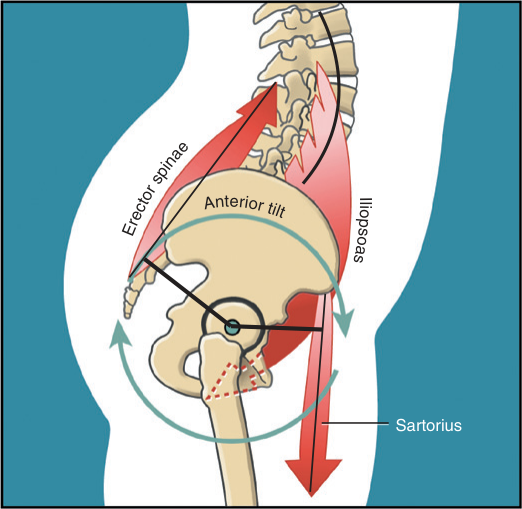
Một tư thế nghiêng khung chậu trước được thực hiện nhờ cặp lực giữa các cơ gập khớp háng và các cơ duỗi vùng lưng dưới (Hình 12.28). Khi hai xương đùi được cố định, các cơ gập khớp háng xoay khung chậu quanh một trục trong–ngoài đi qua cả hai khớp háng. Mặc dù Hình 12.28 chỉ minh họa cơ chậu–thắt lưng và cơ may với vai trò các cơ gập khớp háng, bất kỳ cơ nào có khả năng gập kiểu xương đùi trên khung chậu đều có khả năng nghiêng khung chậu về phía trước như nhau. Về mặt lâm sàng, một khía cạnh quan trọng của tư thế nghiêng trước liên quan đến việc gia tăng độ ưỡn ở cột sống thắt lưng. Độ ưỡn lớn hơn làm tăng các tải nén lên các khớp mỏm khớp thắt lưng và làm tăng lực trượt về phía trước tại chỗ nối thắt lưng–cùng. Nếu quá mức và kéo dài, các tải trọng này có thể gây quá tải các mô xương tại chỗ.
Một tư thế thắt lưng–khung chậu với lượng độ ưỡn thắt lưng bình thường hay điển hình sẽ tối ưu hóa sự thẳng hàng của toàn bộ cột sống (xem lại Chương 9). Tuy nhiên, một số người gặp khó khăn trong việc duy trì độ ưỡn thắt lưng và do đó có cột sống thắt lưng tương đối phẳng (tức gập nhẹ). Tư thế bất thường này có thể do nhiều yếu tố thường liên quan với nhau gây ra, bao gồm thói quen, né tránh đau, tư thế ngồi xấu, sự bù trừ từ một vùng khác của cơ thể bị lệch trục, độ cứng tăng của mô liên kết quanh cột sống thắt lưng, và trong các trường hợp nặng, sự căng quá mức xuất phát từ các cơ duỗi khớp háng.
Gập khớp háng kiểu xương đùi trên khung chậu thường xảy ra đồng thời với gập gối như một cách để rút ngắn chiều dài chức năng của chi dưới trong giai đoạn vung của việc đi bộ hoặc chạy. Động tác gập khớp háng với công suất trung bình đến cao đòi hỏi sự đồng hoạt động của các cơ gập khớp háng và các cơ bụng. Sự phối hợp giữa các cơ này thể hiện rõ khi chi được nhấc lên trong khi gối được giữ ở tư thế duỗi (tức động tác “nâng chân duỗi thẳng” — straight-leg raise). Hành động này đòi hỏi cơ thẳng bụng (một cơ “bụng” đại diện) tạo ra một tư thế nghiêng khung chậu sau đủ mạnh để trung hòa tư thế nghiêng khung chậu trước mạnh mẽ do các cơ gập khớp háng tạo ra (Hình 12.29A). Mức độ mà các cơ bụng thực sự trung hòa được tư thế nghiêng trước của khung chậu phụ thuộc vào yêu cầu của hoạt động và các lực tương đối do các nhóm cơ tham gia tạo ra. Tuy nhiên, nếu thiếu sự ổn định đầy đủ từ các cơ bụng, sự co của các cơ gập khớp háng sẽ bị tiêu tốn một cách không hiệu quả vào việc nghiêng khung chậu về phía trước (xem Hình 12.29B). Như đã đề cập ở nơi khác, tư thế nghiêng khung chậu trước quá mức làm trầm trọng thêm độ ưỡn thắt lưng.
Cơ chế bệnh học được mô tả trong Hình 12.29B là nghiêm trọng nhất trong những trường hợp các cơ bụng bị suy yếu rõ rệt nhưng các cơ gập khớp háng vẫn còn tương đối mạnh. Tình trạng này có thể xuất phát từ nhiều nguyên nhân — từ teo cơ do không sử dụng (disuse atrophy) của các cơ bụng đến các bệnh lý nghiêm trọng hơn, như bại liệt (poliomyelitis) hoặc loạn dưỡng cơ (muscular dystrophy). Trong tình huống này, các cơ gập khớp háng kéo cột sống thắt lưng vào tư thế ưỡn sâu hơn và đau lưng dưới có thể phát triển do lực nén tăng lên đè lên các khớp mỏm khớp trong cột sống thắt lưng bị ưỡn quá mức mạn tính.
Các cơ khép chính của khớp háng là cơ mu (pectineus), cơ khép dài (adductor longus), cơ mảnh (gracilis), cơ khép ngắn (adductor brevis) và cơ khép lớn (adductor magnus) (xem Hình 12.26). Các cơ khép thứ cấp gồm cơ nhị đầu đùi (đầu dài), cơ mông lớn — đặc biệt là các sợi dưới (phía sau), cơ vuông đùi và cơ bịt ngoài. Đường lực của nhiều cơ trong số này được thể hiện trong Hình 12.30. Chú ý ở hình trước độ dài cánh tay đòn tương đối lớn dành cho nhiều cơ khép chính của khớp háng, chẳng hạn cơ mảnh và cơ khép dài.
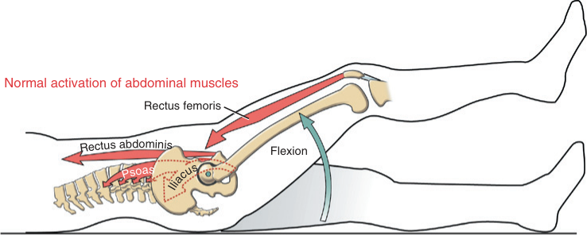
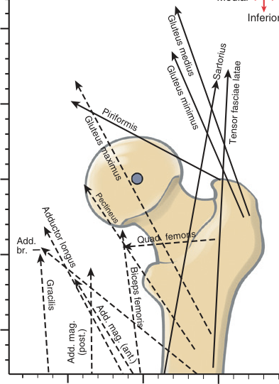
TẬP TRUNG ĐẶC BIỆT 12.4 — Tầm quan trọng chức năng của khớp háng có khả năng duỗi hoàn toàn (The Functional Importance of the Fully Extendable Hip)
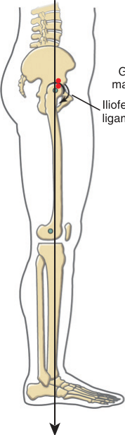
Những khớp háng duy trì tư thế gập trong thời gian kéo dài có xu hướng phát triển co rút gập (flexion contracture) cao hơn. Tình trạng này có thể liên quan đến co cứng co rút (spasticity) của các cơ gập khớp háng, sự yếu của các cơ duỗi khớp háng, bao khớp háng đau hoặc viêm, hoặc việc bị hạn chế ở tư thế ngồi. Theo thời gian, sự rút ngắn thích nghi xảy ra ở các cơ gập và các dây chằng bao khớp, qua đó hạn chế duỗi khớp háng hoàn toàn.
Một hậu quả của co rút gập khớp háng là sự xáo trộn cơ chế sinh học bình thường, và do đó là hiệu quả chuyển hóa, của việc đi bộ và đứng. Ở người khỏe mạnh, tư thế đứng thẳng thường có thể được duy trì với mức độ hoạt động cơ tương đối ít ở vùng khớp háng. Khớp háng duỗi có thể được ổn định thụ động thông qua sự tương tác giữa hai mô men đối nghịch: trọng lượng cơ thể và sức căng thụ động từ các dây chằng bao khớp bị căng giãn, đặc biệt là dây chằng chậu–đùi (Hình 12.31A). Như được minh họa, việc đứng với khớp háng gần duỗi hoàn toàn thường hướng lực trọng lượng cơ thể đi qua, hoặc thường lệch hơn là hơi phía sau, trục xoay trong–ngoài tại khớp háng (vòng tròn xanh nhỏ). Khi nằm phía sau trục, lực trọng lượng cơ thể tạo ra một mô men duỗi khớp háng rất nhỏ nhưng vẫn hữu ích. Khớp háng bị ngăn không cho duỗi thêm bởi một mô men gập thụ động do các dây chằng bao khớp bị căng giãn như dây chằng chậu–đùi và do các cơ gập khớp háng tạo ra. Cặp chấm đỏ trong Hình 12.31A chỉ vị trí gần đúng của các vùng dày hơn tương đối của sụn khớp phủ chỏm xương đùi và ổ xương hứng. Tư thế đứng thẳng bình thường có xu hướng sắp xếp ổ xương hứng và chỏm xương đùi theo cách mà các vùng dày hơn của sụn khớp của chúng chồng lấn lên nhau, tạo ra sự bảo vệ tối đa cho xương dưới sụn.
Sự cân bằng tĩnh được hình thành giữa lực của trọng lực và của các mô bị căng giãn giúp giảm thiểu nhu cầu kích hoạt cơ “tốn kém” về mặt chuyển hóa trong khi đứng yên tĩnh. Tất nhiên, các cơ của khớp háng có thể co mạnh để tạo sự ổn định lớn hơn khi cần thiết, đặc biệt khi cơ thể chịu tác động của các lực ngoại sinh có khả năng gây mất ổn định.
Khi có co rút gập khớp háng, khớp háng vẫn ở tư thế gập một phần trong khi người đó cố gắng đứng thẳng. Tư thế này chuyển hướng lực trọng lượng cơ thể về phía trước khớp háng, tạo ra một mô men gập khớp háng (xem Hình 12.31B). Trong khi trọng lượng bình thường có tác dụng duỗi khớp háng khi đứng, giờ đây trọng lượng lại có tác dụng gập khớp háng. Để ngăn sự sụp đổ vào tư thế gập hoàn toàn khớp háng và gối, cần có các lực chủ động từ các cơ duỗi khớp háng vì các dây chằng bao khớp của khớp háng không thể tạo ra sự kháng cự đáng kể với một khớp háng đang gập. Nhu cầu cơ tăng lên, đến lượt nó, làm tăng chi phí chuyển hóa của việc đứng, và ở một số người, theo thời gian, điều này làm tăng mong muốn ngồi. Thường thì việc ngồi kéo dài lại duy trì chính những hoàn cảnh đã khởi phát co rút gập.
Việc đứng với co rút gập khớp háng cản trở khả năng của khớp trong việc phân tán tối ưu các tải nén qua khớp háng. Lực khớp háng tăng lên đáp ứng với nhu cầu cơ lớn hơn để giữ tư thế gập. Hơn nữa, như cặp chấm đỏ trong Hình 12.31B cho thấy, việc đứng với các khớp háng gập một phần sắp xếp hai mặt khớp theo cách mà các vùng sụn khớp dày nhất của chúng không còn chồng lấn lên nhau một cách tối ưu. Cách sắp xếp này về mặt lý thuyết làm tăng ứng suất qua khớp háng, mà theo thời gian có thể làm tăng mức mài mòn các mặt khớp.
Các mục tiêu điều trị cho phần lớn các tổn thương của khớp háng nên bao gồm, khi thích hợp, việc tối đa hóa hoạt động của các cơ duỗi khớp háng. Điều này có thể đặc biệt liên quan đến người cao tuổi, dựa trên một nghiên cứu cho thấy những cá nhân khỏe mạnh từ 75 đến 86 tuổi đi bộ với mức duỗi khớp háng ít hơn trung bình 30% so với một nhóm trẻ hơn nhiều. Các chiến lược điều trị nên bao gồm tăng cường các cơ duỗi khớp háng và căng giãn các cơ gập khớp háng cũng như các dây chằng bao khớp, đặc biệt là dây chằng chậu–đùi. Việc kích hoạt các cơ bụng thông qua việc nghiêng khung chậu sau cũng có thể khuyến khích duỗi khớp háng. Các dây chằng bao khớp của khớp háng có thể được căng giãn thêm khi duỗi được kết hợp với dạng nhẹ và xoay trong — tư thế khít (close-packed position) của khớp háng.
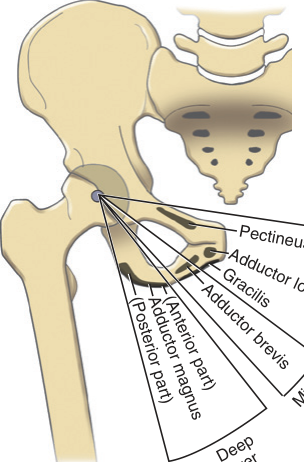
Nhóm cơ khép chiếm giữ phần tư trong của đùi. Về mặt địa hình giải phẫu, các cơ khép được tổ chức thành ba lớp (Hình 12.32). Cơ mu, cơ khép dài và cơ mảnh chiếm giữ lớp nông. Ở phía gần, các cơ này bám dọc theo nhánh mu trên (superior pubic ramus), nhánh mu dưới và thân xương mu kế cận. Ở phía xa, cơ mu và cơ khép dài bám vào mặt sau của xương đùi — gần và dọc theo các vùng khác nhau của mấu gồ. Cơ mảnh, dài và thon mảnh, bám xa vào mặt trong của phần gần xương chày (xem Hình 13.7). Lớp giữa của nhóm cơ khép do cơ khép ngắn hình tam giác chiếm giữ. Cơ khép ngắn bám vào khung chậu tại nhánh mu dưới và bám vào xương đùi dọc theo phần gần một phần ba của mấu gồ.
Lớp sâu của nhóm cơ khép do cơ khép lớn hình tam giác đồ sộ chiếm giữ (xem Hình 12.26, bên trái, và Hình 12.39, bên phải). Như tên gọi của nó hàm ý, cơ khép lớn là cơ khép lớn nhất, chiếm 60% tổng diện tích mặt cắt ngang của toàn bộ nhóm cơ khép. Nhìn chung, cơ khép lớn bám gần vào khung chậu từ hai đầu: một đầu trước từ nhánh xương ngồi (ischial ramus) và một đầu sau từ củ ngồi. Tuy nhiên, cần lưu ý rằng các cách phân loại giải phẫu khác cũng đã được đề xuất. Đầu trước của cơ khép lớn có hai nhóm sợi: nằm ngang và xiên. Nhóm sợi hướng ngang tương đối nhỏ (và thường khó phân định rõ) đi từ nhánh mu dưới đến phần tận cùng phía gần của mấu gồ, thường được gọi là cơ khép bé (adductor minimus). Nhóm sợi hướng xiên lớn hơn chạy từ nhánh xương ngồi đến gần như toàn bộ chiều dài của mấu gồ, xa nhất đến đường trên lồi cầu trong (medial supracondylar line). Cả hai phần của đầu trước đều được chi phối bởi thần kinh bịt — điều điển hình của các cơ khép.
Đầu sau của cơ khép lớn gồm một khối sợi dày xuất phát từ vùng của khung chậu kề củ ngồi. Từ chỗ bám sau này, các sợi chạy theo chiều dọc và bám dưới dạng một gân vào củ khép (adductor tubercle) ở mặt trong của phần xa xương đùi. Đầu sau của cơ khép lớn được chi phối bởi nhánh chày của thần kinh tọa, giống như phần lớn các cơ gân kheo. Do vị trí, phân bố thần kinh và tác dụng tương tự như các cơ gân kheo, đầu sau còn có thể được gọi là đầu duỗi của cơ khép lớn.
Đường lực của các cơ khép tiếp cận khớp háng theo nhiều hướng khác nhau. Do đó, về mặt chức năng, các cơ khép tạo ra mô men ở cả ba mặt phẳng tại khớp háng. Phần dưới đây xem xét các tác động chính của các cơ khép trong mặt phẳng trán và mặt phẳng đứng dọc. Tác động của các cơ này với vai trò các cơ xoay trong thứ cấp sẽ được bàn đến sau trong chương. Việc hiểu rằng các cơ khép tạo ra mô men ở cả ba mặt phẳng chuyển động giúp lý giải kích thước lớn của chúng và có thể cả tính dễ bị tổn thương do căng kéo của chúng.
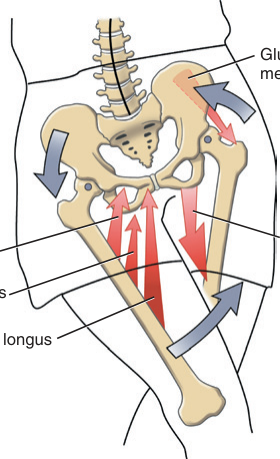
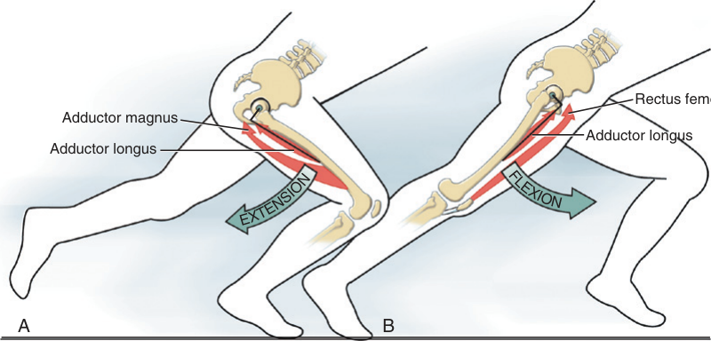
Tác dụng rõ rệt nhất của các cơ khép là tạo ra mô men khép. Mô men này kiểm soát động học của cả động tác khép khớp háng kiểu xương đùi trên khung chậu lẫn kiểu khung chậu trên xương đùi. Hình 12.33 cho thấy một ví dụ trong đó một số cơ khép được chọn co đồng thời hai bên để kiểm soát cả hai dạng chuyển động này. Ở bên phải, một số cơ khép được thể hiện đang gia tốc xương đùi nhằm đánh vào quả bóng đá. Làm cho động tác này mạnh hơn nữa là sự xoay xuống hoặc hạ thấp mào chậu phải — một chuyển động xảy ra nhờ khép kiểu khung chậu trên xương đùi ở khớp háng trái. Mặc dù chỉ cơ khép lớn được thể hiện ở bên trái, các cơ khép khác cũng hỗ trợ động tác này. Động tác khép tổng thể của khớp háng trái đang trụ thường bao gồm sự kích hoạt lệch tâm của cơ mông giữa nhằm giúp giảm tốc và qua đó giúp kiểm soát động học của chuyển động kiểu khung chậu trên xương đùi. Sự yếu của các cơ dạng khớp háng trong cú sút bóng có thể tạo ứng suất valgus quá mức lên gối trụ — theo lý thuyết, điều này làm tăng nguy cơ tổn thương dây chằng chéo trước ở các cầu thủ bóng đá nữ.
Bất kể vị trí của khớp háng, các sợi sau của cơ khép lớn là những cơ duỗi khớp háng mạnh mẽ, tương tự các cơ gân kheo. Tuy nhiên, điều thú vị là trong một cung khoảng 40 đến 70 độ gập khớp háng, đường lực của phần lớn các cơ khép khác chạy trực tiếp qua hoặc rất gần trục xoay trong–ngoài của khớp háng. Ở điểm này, các cơ khép, với tư cách là một nhóm, mất đi phần lớn tiềm năng tạo mô men trong mặt phẳng đứng dọc. Tuy nhiên, khi ở ngoài vị trí gập 40–70 độ, từng cơ khép riêng lẻ lấy lại được đòn bẩy như những cơ gập hoặc duỗi khớp háng đáng kể. Hãy xem xét, chẳng hạn, cơ khép dài như một cơ khép đại diện trong lúc chạy nước rút nhanh (Hình 12.34A). Từ vị trí khoảng 100 độ gập khớp háng, đường lực của cơ khép dài nằm rõ rệt phía sau trục trong–ngoài của khớp. Ở vị trí này, cơ khép dài có một cánh tay đòn duỗi và có khả năng tạo ra mô men duỗi — tương tự đầu sau của cơ khép lớn. Tuy nhiên, từ vị trí khớp háng gần như duỗi hoàn toàn, đường lực của cơ khép dài lại nằm rõ rệt phía trước trục xoay trong–ngoài (xem Hình 12.34B). Cơ khép dài lúc này có một cánh tay đòn gập và tạo ra một mô men gập về bản chất tương tự, chẳng hạn, như mô men của cơ thẳng đùi. Do đó, các cơ khép cung cấp một nguồn mô men gập và duỗi hữu ích tại khớp háng.
Các mô men hai chiều này rất hữu ích trong những vận động chu kỳ đòi hỏi công suất cao, chẳng hạn chạy nước rút, đạp xe, chạy lên một dốc cao, và hạ người xuống rồi đứng dậy từ tư thế ngồi xổm sâu. Khi khớp háng ở gần vị trí gập tối đa, các cơ khép được chuẩn bị sẵn sàng nhất về mặt cơ học để hỗ trợ các cơ duỗi. Ngược lại, khi khớp háng gần ở vị trí duỗi tối đa, chúng lại được chuẩn bị sẵn sàng nhất về mặt cơ học để hỗ trợ các cơ gập. Chức năng đa dụng này của các cơ khép có thể giải thích một phần tại sao chúng tương đối dễ bị đau nhức hoặc chấn thương do căng kéo khi chạy và nhảy, đặc biệt khi đổi hướng nhanh.
Về mặt lý thuyết, một cơ xoay trong “chính” lý tưởng của khớp háng sẽ có hướng nằm trong mặt phẳng ngang khi đứng, ở một khoảng cách tuyến tính nhất định so với trục xoay thẳng đứng đi qua khớp háng. Tuy nhiên, xuất phát từ tư thế giải phẫu, không tồn tại cơ xoay trong chính nào, vì không có cơ nào có hướng thậm chí gần với mặt phẳng ngang. Mặc dù vậy, vẫn có một số cơ xoay trong thứ cấp, bao gồm các sợi trước của cơ mông nhỏ và cơ mông giữa, cơ căng mạc đùi, cơ khép dài, cơ khép ngắn, và cơ mu. Các đường lực ngang của nhiều cơ trong số này được mô tả trong Hình 12.35. Mô men kết hợp do nhiều cơ xoay trong thứ cấp tạo ra đủ để đáp ứng các yêu cầu chức năng thông thường đặt lên khớp háng. Giải phẫu của từng cơ xoay trong được mô tả ở các mục khác (xem Hình 12.26 và 12.43).
Giống như tất cả các cơ của chi dưới, các cơ xoay trong có một chức năng riêng trong quá trình di chuyển (locomotion). Trong pha đỡ của chu kỳ đi, các cơ xoay trong xoay khung chậu trong mặt phẳng ngang trên một xương đùi tương đối cố định. Các động học khung chậu trên xương đùi này được minh họa trong 30% đầu của chu kỳ đi ở Hình 12.36. Sự xoay của khung chậu quanh khớp háng bên phải được thể hiện qua sự xoay về phía trước của mào chậu trái (nhìn từ trên). Do đó, các cơ xoay trong bên phải có thể cung cấp một phần lực đẩy cho chân vung bên đối (bên trái), đặc biệt hữu ích khi đi bộ lên dốc hoặc khi tăng chiều dài sải bước. Như sẽ được mô tả sau trong chương này, cơ căng mạc đùi cùng cơ mông nhỏ và cơ mông giữa cũng đóng vai trò các cơ dạng khớp háng trong giai đoạn này của chu kỳ đi. Việc hoạt hóa các cơ này là cần thiết để ổn định khung chậu trong mặt phẳng trán trong giai đoạn này của chu kỳ đi.
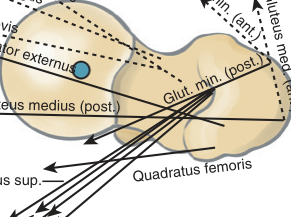
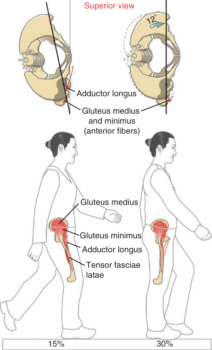
Khi khớp háng tiến đến gần 90 độ gập, tiềm năng mô men xoay trong của các cơ xoay trong tăng lên đáng kể. Điều này trở nên rõ ràng với sự trợ giúp của một mô hình bộ xương và một đoạn dây dùng để mô phỏng đường lực của một cơ, chẳng hạn các sợi trước của cơ mông nhỏ hoặc cơ mông giữa. Khi gập khớp háng đến gần 90 độ, các đường lực của các cơ này được định hướng lại từ gần song song sang gần vuông góc với trục xoay dọc của xương đùi. Điều này xảy ra vì trục xoay dọc vẫn song song với thân của xương đùi đã được đặt lại vị trí. Delp và các cộng sự đã báo cáo rằng, chẳng hạn, cánh tay đòn xoay trong của các sợi trước của cơ mông giữa tăng gấp tám lần trong khoảng từ 0 đến 90 độ gập (Hình 12.37A). Thậm chí một số cơ xoay ngoài, như các sợi sau của cơ mông giữa (được minh họa trong Hình 12.37B), cơ hình lê, các sợi trước (trên) của cơ mông lớn, và các sợi sau của cơ mông nhỏ, cũng đổi vai trò hành động và trở thành các cơ xoay trong khi khớp háng được gập khoảng 60 độ trở lên. Các sai khác cơ học của nhiều cơ xoay xảy ra khi tăng độ gập khớp háng — bao gồm những thay đổi về độ lớn và dấu của các cánh tay đòn của chúng — góp phần giải thích một phần tại sao mô men xoay trong khi gắng sức tối đa ở những người khỏe mạnh lớn hơn 35–55% khi khớp háng được gập khoảng 90 độ so với khi khớp háng ở tư thế duỗi.
Hiện tượng động lực học (kinesiologic) vừa được mô tả góp phần giải thích một phần kiểu đi gập và xoay trong quá mức (“co thấp người” — “crouched”) thường được quan sát thấy ở những người mắc bại não (cerebral palsy). Khi khả năng kiểm soát chủ động việc duỗi khớp háng kém (đặc biệt nếu kết hợp với tình trạng co cứng (contracture) của các cơ gập khớp háng), tư thế gập của khớp háng làm gia tăng tiềm năng mô men xoay trong của nhiều cơ của khớp háng. Mặc dù chỉ là suy đoán, kiểu đi co thấp người (cùng sự gia tăng độ căng đi kèm ở các cơ khép và các cơ xoay trong) có thể góp phần duy trì tình trạng xoay trước (anteversion) xương đùi quá mức ở những người mắc bại não còn có khả năng đi lại. Kiểu đi co thấp người này có thể được kiểm soát tốt hơn nhờ mức hoạt hóa hoặc sức mạnh cao hơn của cơ mông lớn — một cơ duỗi và xoay ngoài mạnh mẽ.
Nhìn chung, khi cơ thể ở trong hoặc gần tư thế giải phẫu, hầu hết các cơ khép đều có khả năng tạo ra một mô men xoay trong khiêm tốn tại khớp háng. Tuy nhiên, tác động này có thể khó lý giải, xét rằng hầu hết các cơ khép bám vào mặt sau của xương đùi dọc theo mấu gồ (linea aspera). Với giải phẫu bình thường của khớp háng, sự rút ngắn của các cơ này thoạt nhìn có vẻ sẽ xoay xương đùi ra ngoài thay vì xoay trong. Tuy nhiên, điều cần phải tính đến là ảnh hưởng của độ cong trước tự nhiên của thân xương đùi lên đường lực của các cơ. Độ cong này đặt phần lớn mấu gồ về phía trước trục xoay dọc tại khớp háng (Hình 12.38A). Như được minh họa trong Hình 12.38B, thành phần lực ngang của một cơ khép, chẳng hạn cơ khép dài, nằm phía trước trục xoay. Do đó, lực từ cơ này tác dụng với một cánh tay đòn để tạo ra xoay trong.
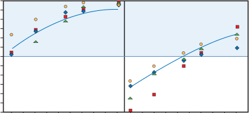
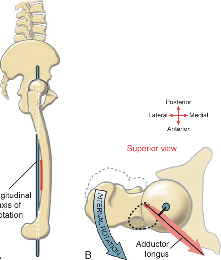
Các cơ duỗi khớp háng chính là cơ mông lớn (gluteus maximus), các cơ gân kheo (hamstrings) (tức là đầu dài của cơ nhị đầu đùi, cơ bán gân và cơ bán màng), và đầu sau của cơ khép lớn (Hình 12.39). Các sợi giữa và sợi sau của cơ mông giữa cùng các sợi trước của cơ khép lớn là các cơ duỗi thứ cấp. Khi khớp háng được gập ít nhất khoảng 70 độ trở lên, hầu hết các cơ khép (ngoại trừ có thể là cơ mu) đều có khả năng hỗ trợ duỗi khớp háng.
Cơ mông lớn có nhiều chỗ bám gần, xuất phát từ mặt sau của xương chậu (ilium), xương cùng, xương cụt, các dây chằng cùng – củ ngồi (sacrotuberous) và các dây chằng cùng – chậu sau (posterior sacroiliac), cùng mạc ngực–thắt lưng (thoracolumbar fascia) kế cận. Cơ này bám vào dải chậu–gối (iliotibial band) của mạc đùi (fascia lata) (cùng với cơ căng mạc đùi) và vào mấu mông (gluteal tuberosity) trên xương đùi. Cơ mông lớn là một cơ duỗi và xoay ngoài chính của khớp háng. Như đã mô tả trong Chương 9 và Chương 10, nhờ các chỗ bám dây chằng và mạc rộng rãi trong vùng này, cơ mông lớn cũng là một cơ quan trọng giúp ổn định khớp cùng–chậu (sacroiliac joint) và vùng thắt lưng.
Ba cơ gân kheo hai khớp (biarticular) có chỗ bám gần ở mặt sau của củ ngồi (ischial tuberosity) và bám xa vào xương chày và xương mác. Dựa trên các chỗ bám này, các cơ gân kheo duỗi khớp háng và gập khớp gối. Giải phẫu và chức năng của đầu sau của cơ khép lớn — một cơ duỗi khớp háng thường bị đánh giá thấp — được mô tả trong phần về các cơ khép của khớp háng.
Hình 12.25 mô tả các đường lực của các cơ duỗi khớp háng chính. Ở tư thế duỗi, đầu sau của cơ khép lớn có cánh tay đòn duỗi lớn nhất. Cơ khép lớn và cơ mông lớn có diện tích tiết diện ngang lớn nhất trong số tất cả các cơ duỗi.
Duỗi khớp háng kiểu khung chậu trên xương đùi (Pelvic-on-Femoral Hip Extension)
Các phần sau đây mô tả hai tình huống khác nhau trong đó các cơ duỗi khớp háng kiểm soát sự duỗi kiểu khung chậu trên xương đùi (pelvic-on-femoral extension).
Các cơ duỗi khớp háng thực hiện nghiêng khung chậu sau (Hip Extensors Performing a Posterior Pelvic Tilt). Khi phần thân trên vùng thắt lưng (supralumbar trunk) được giữ tương đối bất động, các cơ duỗi khớp háng và cơ bụng hoạt động như một cặp lực (force-couple) để nghiêng khung chậu về phía sau (Hình 12.40). Sự nghiêng sau này duỗi nhẹ các khớp háng và làm giảm độ ưỡn thắt lưng (lumbar lordosis).
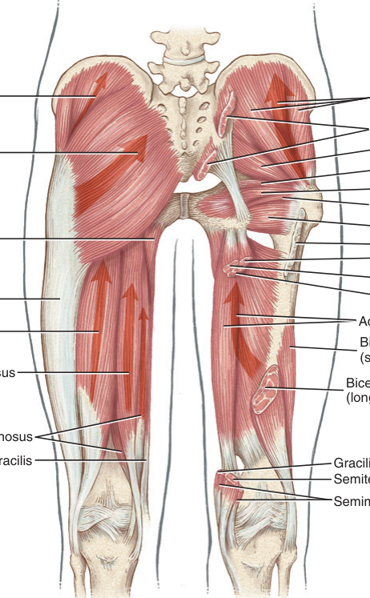
Cơ chế cơ học của các cơ liên quan đến việc nghiêng khung chậu về sau nhìn chung tương tự như những cơ chế được mô tả cho việc nghiêng khung chậu về trước (so sánh Hình 12.28 và 12.40). Trong cả hai tác động nghiêng, các cơ vùng háng và các cơ thân tạo thành một cặp lực (force-couple) để xoay khung chậu qua một cung tương đối ngắn quanh các chỏm xương đùi. Trong tư thế đứng, các lực căng do các dây chằng bao khớp háng và các cơ gập háng tạo ra thường quyết định tầm cuối cùng của chuyển động nghiêng khung chậu về sau — điều này tương phản rõ rệt với cách cột sống thắt lưng hạn chế tầm cuối cùng của tư thế nghiêng khung chậu về trước.
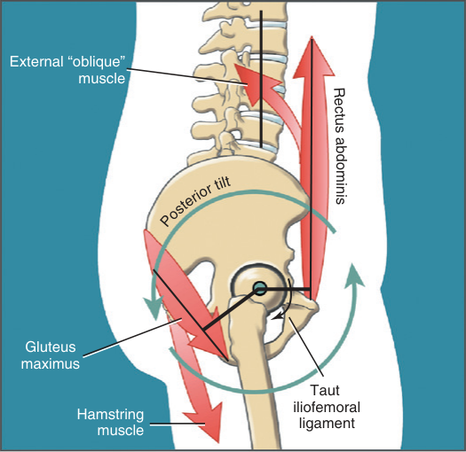
Các cơ duỗi háng kiểm soát tư thế gập thân người về trước (Hip Extensors Controlling a Forward Lean of the Body). Gập người về trước trong tư thế đứng là một hoạt động rất phổ biến. Hãy xét chẳng hạn tư thế gập về trước khi bạn đánh răng trên bồn rửa. Sự nâng đỡ của các cơ tại háng cho tư thế gần tĩnh này chủ yếu là trách nhiệm của các cơ gân kheo (hamstrings). Hãy xét hai pha của động tác gập người về trước được trình bày trong Hình 12.41. Trong tư thế gập nhẹ về trước (xem Hình 12.41A), trọng lượng cơ thể bị dịch chuyển ra ngay phía trước trục xoay trong–ngoài tại các khớp háng. Tư thế gập nhẹ này được kiềm chế nhờ sự kích hoạt tối thiểu từ cơ mông lớn và các cơ gân kheo. Tuy nhiên, một tư thế gập về trước đáng kể hơn sẽ dịch chuyển trọng lượng cơ thể ra xa hơn về phía trước các khớp háng (xem Hình 12.41B). Việc nâng đỡ tư thế gập nhiều này đòi hỏi sự kích hoạt cơ mạnh hơn từ các cơ gân kheo. Ngược lại, cơ mông lớn vẫn giữ tương đối không hoạt động trong tư thế này — một điểm có thể kiểm chứng bằng cách sờ nắn và được suy ra từ dữ liệu điện cơ đồ (electromyographic data). Sự gia tăng trách nhiệm rõ rệt của các cơ gân kheo (trong khi cơ mông lớn thì không) có thể được giải thích cả về mặt sinh cơ học lẫn sinh lý học. Việc gập người về trước làm tăng cánh tay đòn duỗi háng của các cơ gân kheo trong khi làm giảm cánh tay đòn duỗi háng của cơ mông lớn. (So sánh hai điểm 15 độ và 30 độ trên đồ thị trong Hình 12.41.) Vì vậy, gập người về trước về mặt cơ học sẽ tối ưu hóa tiềm năng tạo mô men duỗi của các cơ gân kheo. Một tư thế gập về trước đáng kể còn làm giãn dài các cơ gân kheo qua cả khớp háng lẫn khớp gối. Sức căng thụ động tăng lên ở các cơ hai khớp đang bị giãn dài này giúp nâng đỡ tư thế háng đang gập một phần. Vì những lý do này, các cơ gân kheo có vẻ được trang bị một cách độc đáo để nâng đỡ khớp háng trong tư thế gập người về trước. Rõ ràng hệ thần kinh giữ cơ mông lớn ở trạng thái dự trữ một phần dành cho các hoạt động duỗi háng mạnh hơn, chẳng hạn như leo nhanh một cầu thang.
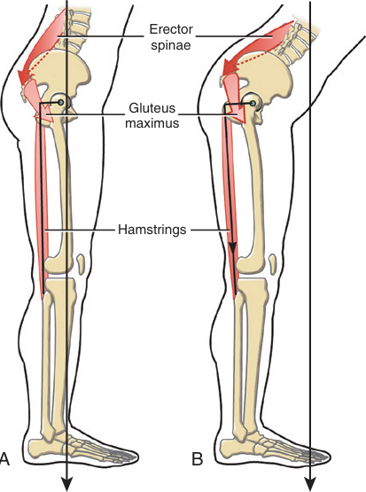
Như một nhóm, các cơ duỗi háng thường phải tạo ra một mô men duỗi háng kiểu xương đùi trên khung chậu lớn và mạnh để gia tốc cơ thể nhanh chóng về phía trước và phía trên. Hãy xét chẳng hạn những yêu cầu đặt lên các cơ duỗi háng háng phải trong khi một người leo một sườn đồi dốc (Hình 12.42). Tư thế háng phải đang gập của người leo khi mang một ba lô nặng tạo ra một mô men ngoài (gập) lớn tại khớp háng. Tuy nhiên, chính tư thế gập này lại thuận lợi cho việc các cơ duỗi háng tạo ra mô men duỗi lớn hơn. Hơn nữa, khi háng gập nhiều, nhiều cơ khép có thể tạo ra một mô men duỗi, nhờ đó hỗ trợ các cơ duỗi háng chính. Việc kích hoạt các cơ duỗi thắt lưng phía dưới giúp nâng đỡ phần thân đang gập, và đồng thời ổn định khung chậu để các cơ duỗi háng đang hoạt động mạnh có một chỗ bám gần vững chắc.
Hình 12.42 làm nổi bật sự phụ thuộc chức năng lẫn nhau giữa nhiều cơ của chi dưới, đặc biệt là những cơ tham gia vào các hoạt động kết hợp duỗi háng và duỗi gối cùng với gập lòng bàn chân (plantar flexion) ở cổ chân, chẳng hạn như leo núi, chạy nước rút, đạp xe hoặc nhảy. Hãy xét chẳng hạn sự tương tác động lực học giữa cơ thẳng đùi và cơ mông lớn — hai cơ chính cần thiết để thực hiện hoạt động leo núi được mô tả trong Hình 12.42. Cần một mô men duỗi gối lớn từ cơ thẳng đùi để bù trừ các mô men gập gối lớn sinh ra không chỉ do trọng lượng cơ thể (và tải trọng ngoài được chống đỡ) mà còn do các mô men gập gối chủ động lớn được tạo ra bởi các cơ gân kheo và cơ bụng chân (gastrocnemius) được kích hoạt đồng thời. Do cách bám hai khớp của cơ thẳng đùi, các lực lớn do cơ này tạo ra để duỗi gối tất yếu cũng góp phần tạo ra một mô men gập háng lớn — một mô men mà về mặt cơ học có vẻ trái ngược với chuyển động duỗi háng. Vì vậy, các cơ như cơ mông lớn và cơ khép lớn phải tạo ra một mô men gập háng ngang bằng và vượt quá mức do cơ thẳng đùi đang hoạt động tạo ra. Chỉ khi đó các cơ duỗi háng mới gia tốc được cơ thể đi lên và về phía trước.
Những yêu cầu đặt lên cơ mông lớn trong một chuyển động đa khớp (polyarticular) như được mô tả trong Hình 12.42 quả thực lớn đến đáng ngạc nhiên. Diện tích mặt cắt ngang lớn của cơ này thường đủ để đáp ứng những yêu cầu dồi dào như vậy. Sự suy yếu ở cơ này, bất kể nguyên nhân là gì, có thể làm rối loạn đáng kể chất lượng và sức mạnh của các chuyển động trên toàn bộ chi dưới. Các bài tập trị liệu nhằm củng cố hoặc tạo điều kiện cho một cơ mông lớn suy yếu hoặc đáp ứng kém đã được đề xuất cho các vấn đề bệnh động học (pathokinesiologic) như khó khăn khi đứng dậy khỏi tư thế ngồi, dáng đi khom người thường thấy ở những người bị bại não, và hội chứng đau khớp xương bánh chè–đùi (patellofemoral joint pain syndrome).
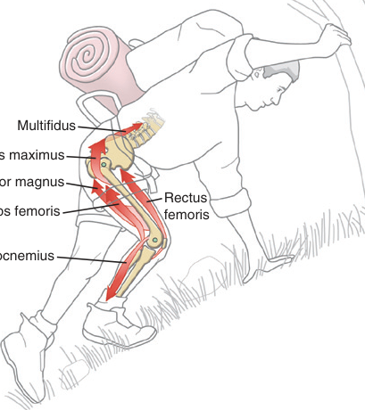
Các cơ dạng háng chính gồm cơ mông giữa (gluteus medius), cơ mông nhỏ (gluteus minimus) và cơ căng mạc đùi (tensor fasciae latae) — thường được gọi đơn giản là các “cơ dạng háng” (“hip abductors”). Cơ hình lê (piriformis), cơ may (sartorius), cơ thẳng đùi và các sợi trước (hoặc trên) của cơ mông lớn có thể được coi là các cơ dạng háng phụ.
Cơ mông giữa là một cơ rộng hình quạt, bám vào mặt ngoài của xương chậu (ilium) phía trên đường mông trước. Phần xa của cơ, nhiều gân hơn, bám vào mỏm xoay lớn (xem Hình 12.39), cụ thể hơn là vào các mặt sau–trên và mặt ngoài của mỏm này (xem Hình 12.6). Chỗ bám xa vào mỏm xoay lớn nhô ra phía ngoài mang lại cho cơ mông giữa đòn bẩy tuyệt vời để thực hiện động tác dạng háng (xem Hình 12.30). Cơ mông giữa là cơ dạng háng lớn nhất, chiếm khoảng 60–65% diện tích mặt cắt ngang của nhóm cơ dạng chính. Cơ mông giữa rộng, hình quạt được coi là có ba nhóm sợi chức năng: trước, giữa và sau. Tất cả các sợi đều góp phần vào động tác dạng háng; tuy nhiên, từ tư thế giải phẫu, các sợi trước và sợi sau là các cơ đối kháng của nhau trong các tác động của chúng trong mặt phẳng ngang. Đòn bẩy cho một số tác động này có thể thay đổi đáng kể khi sự kích hoạt cơ được bắt đầu từ vùng ở xa bên ngoài tư thế giải phẫu.
Cơ mông nhỏ nằm sâu và hơi phía trước so với cơ mông giữa (Hình 12.43). Cơ mông nhỏ bám gần vào xương chậu — giữa đường mông trước và đường mông dưới — và bám xa vào mặt trước của mỏm xoay lớn (xem Hình 12.6). Chỗ bám xa này cũng hòa quyện với bao của khớp háng. Các chỗ bám cơ này có thể kéo phần bao khớp đó ra xa khỏi khớp trong khi vận động — một cơ chế có thể giúp ngăn ngừa tình trạng kẹp bao khớp (capsular impingement).
Cơ mông nhỏ nhỏ hơn cơ mông giữa, chiếm khoảng 20–30% diện tích mặt cắt ngang của các cơ dạng háng chính. Mặc dù nhỏ hơn cơ mông giữa, cơ mông nhỏ vẫn được đánh giá cao ngang bằng về vai trò ổn định khớp háng trong pha đỡ của bước đi. Tất cả các sợi của cơ mông nhỏ đều góp phần vào động tác dạng háng. Các sợi phía trước hơn cũng góp phần vào xoay trong và gập, còn các sợi sau cùng góp phần vào xoay ngoài. Phân tích điện cơ đồ bằng điện cực dây mảnh (fine-wire EMG) của cơ mông nhỏ cho thấy các sợi trước và sợi sau hoạt động mạnh nhất vào những thời điểm hơi khác nhau trong pha đỡ của bước đi, gợi ý rằng chúng có những vai trò khác nhau trong việc ổn định khớp háng.
Cơ căng mạc đùi là cơ nhỏ nhất trong ba cơ dạng háng chính, chỉ chiếm khoảng 4–10% diện tích mặt cắt ngang của nhóm cơ dạng chính. Giải phẫu của cơ căng mạc đùi đã được trình bày ở phần trước của chương này.
Điều thú vị là tất cả các cơ dạng háng đều có tác dụng như một cơ xoay trong hoặc xoay ngoài khớp háng. Do đó, việc tạo ra một mô men dạng thuần túy trong mặt phẳng trán đòi hỏi các cơ dạng phải triệt tiêu hoàn toàn tiềm năng mô men mặt phẳng ngang của lẫn nhau.
Mô men dạng do các cơ dạng háng tạo ra là thiết yếu cho việc kiểm soát động học khung chậu trên xương đùi trong mặt phẳng trán khi đi. Trong phần lớn pha đỡ, các cơ dạng háng ổn định khung chậu phía trên xương đùi tương đối cố định (xem Hình 12.36). Do đó trong pha đỡ, các cơ dạng háng có vai trò kiểm soát khung chậu trong mặt phẳng trán và, như đã bàn ở trước, cả trong mặt phẳng ngang.
Mô men dạng do các cơ dạng háng tạo ra đặc biệt quan trọng trong pha chống đỡ một chi (single-limb–support) của chu kỳ đi. Trong pha này, chi đối diện rời khỏi mặt đất và vung về phía trước. Nếu không có đủ mô men dạng ở chi đỡ, khung chậu và thân có thể sụp xuống mất kiểm soát về phía chân đang vung. Sự kích hoạt của cơ dạng háng có thể được cảm nhận dễ dàng bằng cách sờ nắn cơ mông giữa ngay phía trên mỏm xoay lớn. Ví dụ, cơ mông giữa phải sẽ trở nên căng cứng khi chân trái nhấc khỏi mặt đất.
Chức năng ổn định mặt phẳng trán của các cơ dạng háng là một thành phần rất quan trọng của việc đi bộ. Hơn nữa, lực do các cơ dạng tạo ra trong pha đỡ chiếm phần lớn các lực nén sinh ra giữa ổ xương hứng và chỏm xương đùi.
Hình 12.44 cho thấy các yếu tố chính liên quan đến việc duy trì độ ổn định mặt phẳng trán của khớp háng phải trong khi chống đỡ một chi, tương tự như yêu cầu trong pha giữa của tư thế đỡ (midstance) khi đi. Các lực do các cơ dạng háng đang co và trọng lượng cơ thể tạo ra tạo thành các mô men đối nghịch kiểm soát vị trí và độ ổn định của khung chậu (trong mặt phẳng trán) phía trên chỏm xương đùi. Trong lúc chống đỡ một chi, khung chậu có thể được ví như một chiếc bập bênh, với điểm tựa được biểu thị bởi chỏm xương đùi. Khi chiếc bập bênh được cân bằng, mô men ngược chiều kim đồng hồ (trong) do lực cơ dạng háng phải (HAF) tạo ra bằng với mô men cùng chiều kim đồng hồ (ngoài) do trọng lượng cơ thể (BW) gây ra. Sự cân bằng các mô men đối nghịch này được gọi là cân bằng xoay tĩnh (static rotary equilibrium).
Trong khi chống đỡ một chi, các cơ dạng háng — đặc biệt là cơ mông giữa — tạo ra phần lớn lực nén dọc đi qua khớp háng. Điểm quan trọng này được minh họa bởi mô hình trong Hình 12.44. Chú ý rằng cánh tay đòn trong (D) mà các cơ dạng háng sử dụng có chiều dài bằng khoảng một nửa cánh tay đòn ngoài (D1) mà trọng lượng cơ thể sử dụng. Với sự chênh lệch chiều dài này, các cơ dạng háng phải tạo ra một lực gấp đôi trọng lượng cơ thể để đạt được độ ổn định trong khi chống đỡ một chi. Do đó, ở mỗi bước đi, ổ xương hứng bị kéo ép vào chỏm xương đùi bởi tổng hợp lực do các cơ dạng háng tạo ra và lực hút trọng lực của trọng lượng cơ thể. Để đạt được cân bằng tịnh tiến tĩnh (static linear equilibrium), lực hướng xuống này bị chống lại bởi một lực phản ứng khớp (joint reaction force, JRF) có độ lớn bằng nhau nhưng hướng gần như ngược chiều (xem Hình 12.44). Lực phản ứng khớp được hướng lệch 10 đến 15 độ so với phương thẳng đứng — một góc chịu ảnh hưởng mạnh bởi hướng của vectơ lực cơ dạng háng.
Số liệu mẫu được cung cấp trong Hình 12.44 cho thấy cách ước lượng độ lớn gần đúng của lực cơ dạng háng và lực phản ứng khớp háng. (Để đơn giản, tất cả các lực được giả định tác dụng theo phương thẳng đứng, như trong mô hình bập bênh.) Như được thể hiện trong các phép tính, một lực phản ứng khớp (JRF) hướng lên bằng 1873,8 N (421,3 lb) xuất hiện khi một người nặng 760,6 N (171 lb) đang chống đỡ một chi trên chi phải. Lực phản ứng này khoảng 2,5 lần trọng lượng cơ thể, trong đó 66% đến từ các cơ dạng háng. Khi đi bộ, lực phản ứng khớp còn lớn hơn nữa do sự gia tốc của khung chậu trên chỏm xương đùi. Các dữ liệu dựa trên mô hình hóa máy tính ba chiều hoặc đo trực tiếp từ các cảm biến biến dạng (strain gauges) cấy ghép vào một khớp háng nhân tạo (hip prosthesis) cho thấy các lực nén khớp đạt từ ba đến gần bốn lần trọng lượng cơ thể trong khi đi bộ. Các lực này có thể tăng lên ít nhất năm hoặc sáu lần trọng lượng cơ thể khi chạy hoặc khi lên xuống cầu thang hoặc dốc. Lực phản ứng khớp tăng khi tốc độ đi bộ tăng hoặc khi đi kèm với các lệch dáng đi đáng kể.
Mặc dù các cơ dạng háng góp phần đáng kể vào lực nén khi chống đỡ một chi, các cơ này cùng các cơ khác cũng góp phần đáng kể vào các lực khớp háng trong các hoạt động không di bộ. Việc chủ động nhấc chi dưới với gối duỗi từ tư thế nằm ngửa (tức là động tác “nâng chân thẳng” — “straight-leg raise”) đã được chứng minh là tạo ra các lực phản ứng khớp háng khoảng 1,4 lần trọng lượng cơ thể, hay khoảng 50% lực khớp được tạo ra một cách tự nhiên khi đi trên một mặt phẳng. Hơn nữa, việc thực hiện bài tập “cầu” háng một bên (unilateral supine hip “bridging”) tạo ra một lực phản ứng khớp háng khoảng ba lần trọng lượng cơ thể, tương tự như các lực được tạo ra khi đi bộ. Phải ghi nhớ độ lớn của các lực này khi chỉ định các bài tập cho bệnh nhân sau phẫu thuật háng, chẳng hạn như phẫu thuật thay khớp háng toàn phần hoặc sửa chữa gãy xương.
Trong hầu hết các tình huống, các lực tác động lên khớp háng khỏe mạnh do các cơ dạng háng hoặc các cơ khác tạo ra phục vụ những chức năng sinh lý quan trọng, chẳng hạn như ổn định chỏm xương đùi trong ổ xương hứng, hỗ trợ việc nuôi dưỡng sụn khớp, và cung cấp các kích thích cho sự phát triển và định hình bình thường của cấu trúc khớp ở trẻ em đang lớn. Sụn khớp và xương bè (trabecular bone) thường bảo vệ khớp bằng cách phân tán một cách an toàn các lực lớn. Tuy nhiên, một khớp háng bị viêm khớp có thể không còn khả năng cung cấp sự bảo vệ này.
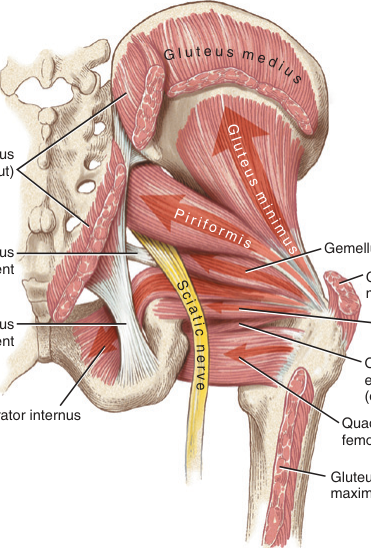
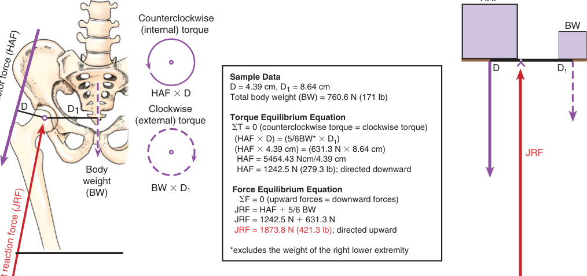
TẬP TRUNG ĐẶC BIỆT 12.5 — Hội chứng đau mỏm xoay lớn (Greater Trochanteric Pain Syndrome)
Hội chứng đau mỏm xoay lớn (greater trochanteric pain syndrome, GTPS) liên quan đến các thay đổi thoái hóa tại các chỗ bám gân xa của cơ mông giữa và cơ mông nhỏ và, ở một số trường hợp, kèm theo viêm bao hoạt dịch (bursitis). GTPS có thể là nguyên nhân chính gây đau vùng khớp háng mặt ngoài, thường gặp nhất ở phụ nữ trên 40 tuổi. Các dấu hiệu kinh điển gồm có cảm giác âm ỉ đau hoặc đau khi ấn vào một điểm gần hay ngay trên mỏm xoay lớn (nơi các cơ mông bám vào), sự suy yếu động tác dạng khớp háng, và một sự lệch dáng đi phù hợp với các cơ dạng khớp háng yếu hoặc đau (sẽ được mô tả sau trong chương này). Các triệu chứng thường trở nên trầm trọng hơn bởi những hoạt động đòi hỏi các cơ dạng khớp háng tạo ra các lực cao, duy trì kéo dài hoặc lặp đi lặp lại, chẳng hạn đứng trên một chân, leo cầu thang hoặc leo dốc, hay đi bộ kéo dài. Như với mọi cơn đau trong vùng khớp háng, cần loại trừ các bệnh đồng mắc có liên quan cũng như đau chuyển đến từ vùng lưng dưới.
Bệnh lý nguyên phát nằm dưới GTPS được cho là bệnh gân (tendinopathy) của cơ mông giữa và cơ mông nhỏ. Chụp cộng hưởng từ (MRI) thường cho thấy sự dày lên hoặc mỏng đi của các gân bị ảnh hưởng, cũng như các vết rách một phần hoặc toàn bộ độ dày của gân. Các vết rách xảy ra thường xuyên hơn ở gân của cơ mông giữa tại nơi gân bám vào các mặt ngoài và trên–sau của mỏm xoay lớn. Trong tới 20% các trường hợp, viêm bao hoạt dịch có thể đi kèm với GTPS, hoặc tại bao hoạt dịch nằm dưới các chỗ bám xa của cơ mông giữa và cơ mông nhỏ, hoặc — thường gặp hơn — tại bao hoạt dịch nằm trên mặt sau–dưới của mỏm xoay lớn và ngay dưới cơ mông lớn.
Bệnh lý liên quan đến bệnh gân của cơ mông giữa hoặc cơ mông nhỏ có các đặc điểm tương tự như bệnh lý chóp xoay (rotator cuff). Vì lý do này, GTPS từng được gọi một cách không chính thức là “hội chứng chóp xoay của khớp háng”. Cả gân của cơ trên gai và các gân mông đều có xu hướng biểu hiện các thay đổi thoái hóa ở mặt sâu của gân, tại nơi gân áp sát vào xương. Đau thường âm thầm khởi phát và mang tính mạn tính trong cả GTPS lẫn hội chứng chóp xoay, thông thường liên quan đến thoái hóa hao mòn hoặc các vết rách thay vì đứt gân cấp tính do một sự kiện đơn lẻ. Các thay đổi thoái hóa có xu hướng xảy ra ở các cơ này, theo một cách nào đó, liên quan đến sự thất bại của các mô trong việc hấp thụ và dung nạp ứng suất cơ học. Các lực từ các cơ mông, vốn cần thiết tại mỗi pha đứng giữa của chu kỳ đi, tạo ra các ứng suất tương đối lớn và lặp đi lặp lại lên các gân tương ứng của chúng. Ứng suất như vậy thường được mô tả là lực căng (tension), vì nó kéo gân ra xa xương; nhưng xét ở chỗ phần rất xa của gân bị kéo đâm thẳng vào trong xương, ứng suất này cũng là một lực ép khu trú. Độ lớn của ứng suất ép có thể bị ảnh hưởng bởi các lực đồng thời tác động lên mạc đùi (fascia lata) nằm phía trên của đùi, một phần do cơ căng mạc đùi tạo ra. Sự cứng lại của phức hợp này có thể tạo ra một lực đẩy hướng vào trong đè lên các gân mông nằm bên dưới khi các gân này quấn theo hướng trên–trong qua mỏm xoay lớn, làm khuếch đại lực ép khu trú lên các gân mông. Theo thời gian, ứng suất ép lặp đi lặp lại có thể làm suy giảm và suy yếu ma trận mô của chỗ bám gân. Theo lý thuyết, các vết rách nhỏ hoặc các vết trầy xước tiếp theo trong gân đặt ứng suất lớn hơn lên các phần còn lành vẹn, khỏe mạnh của gân, do đó cũng làm cho các mô này dễ bị thoái hóa. Bệnh lý chính xác của GTPS và bệnh gân mông liên quan vẫn chưa được hiểu rõ.
Mặc dù còn mang tính lý thuyết, một yếu tố dẫn đến GTPS có thể liên quan đến tiền sử suy yếu, hoặc giảm tiềm năng mô men dạng, của cơ mông giữa và cơ mông nhỏ. Tình huống các cơ mông yếu có thể làm tăng các yêu cầu bù trừ lên cơ chế dạng khớp háng nông hơn (tức là cơ căng mạc đùi và mạc bên (lateral fascia) của đùi liên quan). Sự bù trừ như vậy, nếu xảy ra ở mỗi chu kỳ đi, về mặt lý thuyết có thể mài mòn các gân mông đến mức chúng bị thoái hóa hao mòn hoặc thậm chí suy thất. Cần có nhiều nghiên cứu sinh cơ học và mô học hơn nữa để hiểu rõ hơn về cơ chế bệnh sinh của GTPS nhằm điều trị tốt hơn tình trạng này.
Điều trị bảo tồn đã được mô tả cho GTPS, bao gồm sử dụng thuốc chống viêm, tiêm corticosteroid, gậy cầm ở tay đối bên với khớp háng bị ảnh hưởng, và vật lý trị liệu. Grimaldi và Fearon đã đề xuất một cách tiếp cận vật lý trị liệu hạn chế các hoạt động hoặc bài tập liên quan đến khép khớp háng (cả khép khung chậu trên xương đùi lẫn ngược lại là khép xương đùi trên khung chậu). Biện pháp phòng ngừa này được cho là giúp giảm thiểu ứng suất ép lên các chỗ bám của các gân mông khi cơ căng mạc đùi và mạc bên liên quan bị kéo giãn qua mặt ngoài của khớp háng. Ngoài ra, các buổi vật lý trị liệu ban đầu có thể kết hợp các bài tập dạng đẳng trương không gây đau ở những tư thế hạn chế khép khớp háng. Như đã được trình bày chi tiết bởi Grimaldi và Fearon, các phương pháp áp dụng lực kháng lớn hơn bằng các bài tập không thuộc kiểu đẳng trương có thể được kết hợp một cách thận trọng khi bệnh nhân đã dung nạp được.
Khi điều trị bảo tồn không thành công, phẫu thuật sửa chữa các gân có thể được chỉ định. Cả cách tiếp cận phẫu thuật mở lẫn cách tiếp cận nội soi đều đã được chứng minh là cho kết quả thuận lợi.
TẬP TRUNG ĐẶC BIỆT 12.6 — Suy yếu các cơ dạng khớp háng (Hip Abductor Muscle Weakness)
Một số bệnh lý y khoa có liên quan đến sự suy yếu của các cơ dạng khớp háng. Các bệnh lý này có thể gồm loạn dưỡng cơ, hội chứng Guillain-Barré, tổn thương tủy sống không toàn bộ, hội chứng đau mỏm xoay lớn, viêm hoặc thoái hóa khớp háng, bại liệt, đau lưng dưới, hoặc một bệnh lý chưa được xác định. Người có khớp háng đau hoặc không ổn định thường gặp tình trạng yếu do “không sử dụng” và teo cơ ở các cơ dạng — một hậu quả của việc chủ động tránh làm các cơ này co mạnh như một cách để giảm thiểu lực ép liên quan đi qua khớp.
Chỉ dấu kinh điển của tình trạng yếu các cơ dạng khớp háng là dấu hiệu Trendelenburg (Trendelenburg sign). Bệnh nhân được yêu cầu đứng nâng đỡ bằng một chi ngay trên khớp háng bị nghi ngờ là yếu. Dấu hiệu này dương tính nếu khung chậu tụt xuống về phía chi không đỡ thân; nói cách khác, khớp háng yếu bị “rơi” vào tư thế khép khung chậu trên xương đùi (xem Hình 12.22B). Tuy nhiên, nhà lâm sàng cần thận trọng khi diễn giải và ghi nhận kết quả của phép thử này. Ví dụ, bệnh nhân có cơ dạng khớp háng bên phải yếu quả thực có thể làm tụt nửa trái khung chậu khi được yêu cầu đứng chỉ trên chi phải. Tuy nhiên, tình trạng yếu này có thể bị che khuất bởi một độ nghiêng bù trừ của thân mình về phía phải, đặc biệt nếu mức độ yếu rõ rệt. Nghiêng thân mình về phía bị yếu làm giảm yêu cầu mô men ngoài lên các cơ dạng bằng cách làm giảm chiều dài của cánh tay đòn ngoài (xem Hình 12.44, D1). Khi được quan sát trong khi một người đang đi bộ, độ nghiêng bù trừ này về phía bị yếu được gọi là “dáng đi què kiểu cơ mông giữa” (gluteus medius limp) hoặc “dáng đi Trendelenburg có bù trừ” (compensated Trendelenburg gait). Việc dùng gậy ở tay phía đối bên với các cơ dạng khớp háng bị yếu có thể cải thiện đáng kể kiểu dáng đi bất thường này.
Vì những lý do thường khó giải thích, sự suy yếu của các cơ dạng khớp háng thường kéo dài dai dẳng hơn so với các nhóm cơ khác sau phẫu thuật hoặc bệnh lý khớp háng. Hiện tượng này xảy ra bất kể cơ mông giữa và cơ mông nhỏ có bị cắt vào trong quá trình phẫu thuật hay không. Tính dai dẳng của tình trạng yếu cơ dạng khớp háng tương tự như tình trạng yếu thường kéo dài của cơ tứ đầu đùi ở đầu gối sau khi sửa chữa hoặc chấn thương dây chằng chéo trước (xem Chương 13).
Bất kể nguyên nhân là gì, các hệ lụy về mặt chức năng và bệnh cơ học (pathomechanical) của tình trạng yếu cơ dạng khớp háng kéo dài có thể rất rộng, đặc biệt khi xét đến ý nghĩa động học quan trọng của các cơ này trong các hoạt động đứng thẳng và chịu tải. Sự yếu kéo dài của các cơ dạng khớp háng đã được ghi nhận là liên quan đến nhiều suy giảm hoặc tình trạng bệnh, bao gồm các sự lệch dáng đi, khó khăn khi đứng trên một chân, bất ổn định tư thế, hội chứng đau khớp bánh chè–đùi, đau lưng dưới, nguy cơ gia tăng bong gân cổ chân, bất ổn định đầu gối, và té ngã ở người cao tuổi.
Do những liên hệ này và còn nhiều liên hệ khác, đã có nhiều nghiên cứu điện cơ đồ (EMG) đáng kể nhằm tìm ra những bài tập nào nhắm mục tiêu đặc hiệu nhất — và do đó có khả năng củng cố — các cơ dạng khớp háng, đặc biệt là cơ mông giữa. Những bài tập tạo ra phản ứng EMG mạnh mẽ nhất từ cơ mông giữa được giả định là phản ánh yêu cầu lớn hơn đặt lên cơ này. Số liệu nghiên cứu cho thấy rõ ràng rằng các bài tập có “yêu cầu” cao hơn là những bài tập đặc biệt liên quan đến dạng khớp háng (theo góc nhìn xương đùi trên khung chậu hoặc khung chậu trên xương đùi) được thực hiện đồng thời với duỗi khớp háng, xoay trong hoặc xoay ngoài. Những kết quả này là điều dễ dự đoán dựa trên các tác động chính hoặc thứ cấp của các sợi cơ khác nhau của cơ mông giữa được liệt kê trong Bảng 12.3. Tuy nhiên, cần lưu ý rằng Philippon và cộng sự đã báo cáo rằng bài tập cầu một chân (với chi dưới đối bên được giữ ở tư thế “nâng chân thẳng”) tạo ra mức EMG từ cơ mông giữa cao hơn một chút so với bất kỳ bài tập dạng khớp háng nằm nghiêng nào. Mức yêu cầu bất ngờ cao đặt lên cơ mông giữa trong bài tập cầu một chân có thể mang lại cái nhìn sâu sắc về sự phức tạp của các cơ khi thực hiện động tác tưởng chừng đơn giản này, vốn chỉ diễn ra trong một mặt phẳng. Để thuận tiện cho việc bàn luận, hãy giả định rằng bài tập cầu một chân được tạo lực bởi khớp háng phải trong khi chi dưới trái được giữ ở tư thế “nâng chân thẳng”. Bài tập này đặt yêu cầu lên các sợi giữa và sợi sau của cơ mông giữa phải để hỗ trợ duỗi, trong khi các sợi giữa đối trọng với tác động khép mạnh của cơ khép lớn phải. Hơn nữa, các sợi trước của cơ mông giữa phải bị thách thức phải góp phần đối trọng với cả tiềm năng xoay ngoài của cơ mông lớn phải lẫn mô men trọng lực xoay ngoài (khung chậu trên xương đùi) đặt lên khớp háng phải. Điều thú vị là, chính nghiên cứu EMG này đã báo cáo mức hoạt động của cơ mông giữa thấp hơn nhiều trong bài tập cầu hai bên. Khi mô men duỗi khớp háng được chia cho cả hai bên khớp háng, yêu cầu đặt lên mỗi cơ mông giữa riêng lẻ giảm xuống chỉ còn 11% mức co tối đa tự nguyện (maximum voluntary contraction) (so với 35% đối với bài tập cầu một bên).
Mối quan hệ đặc biệt giữa mô mô (torque) trong của một nhóm cơ và góc khớp cung cấp cái nhìn sâu sắc về các yêu cầu chức năng mà tự nhiên các cơ phải gánh chịu. Chẳng hạn, hình dạng của đồ thị trình bày trong Hình 12.45 cho thấy rõ các cơ dạng tạo ra mô mô đỉnh (sức mạnh lớn nhất) của chúng khi đang bị kéo dài. Mô mô tối đa được tạo ra khi háng được khép vừa vượt quá tư thế trung tính (0 độ) của háng. Góc háng trong mặt phẳng trán này xuất hiện một cách tự nhiên khi cơ thể đang ở hoặc gần giai đoạn chống đơn (single-limb support) của chu kỳ đi — chính là lúc các cơ này cần thiết để cung cấp độ ổn định trong mặt phẳng trán cho háng. Về bản chất, các cơ dạng có dự trữ mô mô lớn nhất tại một chiều dài cơ (và góc khớp) tương ứng với yêu cầu chức năng lớn nhất của chúng.
Tư thế khép của háng cũng làm tăng lực căng bị động trong dải chậu–gối (iliotibial band) vốn dĩ cứng. Lực căng bị động này, dù có lẽ tương đối nhỏ, vẫn có thể bổ sung cho mô mô dạng cần thiết trong giai đoạn chống đơn của chu kỳ đi.
Ngược lại, tiềm năng mô mô dạng của háng là nhỏ nhất tại chiều dài cơ gần như co rút hoàn toàn, tương ứng với 40 độ dạng (xem Hình 12.45). Đáng chú ý, mặc dù cánh tay đòn trong (dạng) của cơ mông giữa (gluteus medius) tương đối lớn khi dạng hết cỡ (so với tư thế khép), chiều dài cơ bị co rút nhiều ở tư thế này làm giảm đáng kể lực chủ động (và do đó là mô mô) mà nó tạo ra. Nghịch lý thay, háng đang dạng gần tối đa lại nằm ở tư thế truyền thống được khuyến nghị để kiểm tra "sức mạnh" của các cơ dạng háng bằng tay.
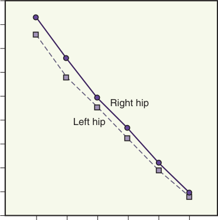
Các cơ xoay ngoài chính của háng gồm cơ mông lớn (gluteus maximus) và năm trong sáu "cơ xoay ngoài ngắn". Trong tư thế giải phẫu, các cơ được coi là cơ xoay ngoài phụ gồm các sợi sau của cơ mông giữa và cơ mông nhỏ (gluteus minimus), cơ bịt ngoài (obturator externus), cơ may (sartorius) và đầu dài của cơ nhị đầu đùi (biceps femoris). Cơ bịt ngoài được coi là một cơ xoay phụ vì trong tư thế giải phẫu, đường lực của nó chỉ nằm phía sau trục xoay dọc (longitudinal axis of rotation) vài milimét (xem Hình 12.35).
Chỗ bám của cơ mông lớn và cơ may đã được mô tả trước đó trong các phần về cơ duỗi háng và cơ gập háng.
Sáu "cơ xoay ngoài ngắn" của háng là cơ hình lê (piriformis), cơ bịt trong (obturator internus), cơ kép trên (gemellus superior), cơ kép dưới (gemellus inferior), cơ vuông đùi (quadratus femoris) và cơ bịt ngoài (xem Hình 12.14, 12.39 và 12.43). Các đường lực của các cơ này hướng chủ yếu trong mặt phẳng ngang. Hướng này là tối ưu để tạo ra mô mô xoay ngoài, vì phần lớn thành phần lực của mỗi cơ cắt vuông góc với trục xoay dọc. Tương tự như cơ dưới gai (infraspinatus) và cơ tròn nhỏ (teres minor) ở vai, các cơ xoay ngoài ngắn cũng được sắp xếp thuận lợi để ép chặt và nhờ đó giúp ổn định khớp nối.
Cơ hình lê bám gần vào mặt trước của xương cùng (sacrum), giữa các rễ thần kinh xuất phát từ ba lỗ cùng phía bụng trên cùng (xem Hình 12.1 và 12.26). Thoát ra khỏi khung chậu về phía sau qua lỗ khuyết lớn (greater sciatic foramen), cơ hình lê bám bằng một gân vào mặt trên của mỏm xoay lớn (xem Hình 12.43).
Ngoài tác dụng xoay ngoài, cơ hình lê còn là một cơ dạng phụ của háng. Cả hai tác dụng này đều thấy rõ qua đường lực của cơ so với các trục xoay tại háng (xem Hình 12.30 và 12.35).
Thần kinh tọa thường thoát khỏi khung chậu phía dưới cơ hình lê. Như đã mô tả trước đó trong chương này, thần kinh tọa có thể đi xuyên qua thân cơ của cơ hình lê. Một cơ hình lê bị co rút, dày lên hoặc "cứng căng" có thể chèn ép và kích thích thần kinh tọa — tình trạng này được gọi là "hội chứng cơ hình lê" (piriformis syndrome).
Cơ bịt trong là một cơ hình quạt xuất phát từ mặt trong của màng bịt (obturator membrane) và từ xương kế cận bao quanh lỗ bịt (obturator foramen) (xem Hình 12.43). Mặc dù không thấy được trong Hình 12.43, phần lớn chỗ bám gần của cơ trải dài lên trên và hơi về phía sau trên mặt trong của xương ngồi (ischium), khoảng 2–3 cm phía trên mấu ngồi (ischial spine). Từ nguồn gốc rộng lớn này, các sợi cơ hội tụ thành một gân sau khi thoát khỏi khung chậu qua lỗ khuyết nhỏ (lesser sciatic foramen). Hốc khuyết nhỏ (lesser sciatic notch), được lót bằng sụn trong (hyaline cartilage), hoạt động như một ròng rọc làm cho gân của cơ bịt trong lệch đi khoảng 130 độ trên đường đi tới mặt trong của mỏm xoay lớn (Hình 12.46A). Khi xương đùi được cố định chắc chắn trong tư thế đứng, sự co mạnh của cơ bịt trong bên phải chẳng hạn có thể xoay khung chậu (và thân người nằm phía trên) sang trái — bên đối bên với chỏm xương đùi (xem Hình 12.46B). Ngoài việc xoay khung chậu, lực sinh ra bởi cơ bịt trong — vốn chạy gần như theo mặt phẳng ngang — cũng sẽ có hiệu quả ép chặt khớp. Hodges và cộng sự đã thực hiện một phân tích điện cơ (EMG) bằng dây điện cực mảnh, dẫn hướng bằng siêu âm, trên cơ bịt trong và một số cơ xoay ngoài khác ở 10 người được nghiên cứu. Cơ bịt trong thường là cơ đầu tiên trở nên hoạt động trong một nỗ lực đẳng trưởng tăng dần để dạng và xoay ngoài háng. Sự hoạt hóa sớm này có thể phản ánh vai trò của cơ trong việc tinh chỉnh độ ổn định vị thế của khớp ngay trước khi các cơ khác được hoạt hóa.
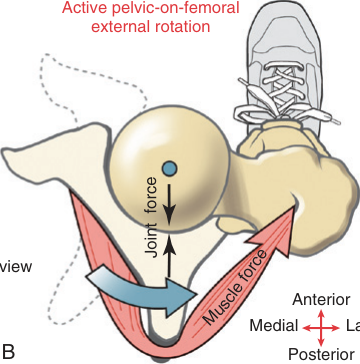
Một lớp mô liên kết tương đối dày che phủ và bám dính vào một phần mặt trong (nằm trong khung chậu) của cơ bịt trong, thường được mô tả là mạc bịt (obturator fascia). Mạc này tạo nên một phần chỗ bám của cơ nâng hậu môn (levator ani) — cơ chính của sàn chậu (pelvic floor). (Về chỗ bám, phân bố thần kinh và tác dụng của các cơ sàn chậu, xem Phụ lục IV, phần F.) Do mối liên hệ giải phẫu trực tiếp này, một số phương pháp điều trị hội chứng đau hoặc rối loạn chức năng sàn chậu có áp dụng các kỹ thuật làm thay đổi lực căng chủ động hoặc bị động của cơ bịt trong.
Cơ kép trên và cơ kép dưới (từ gốc Latin geminus, nghĩa là sinh đôi) là hai cơ nhỏ, có kích thước gần như giống nhau, bám gần ở hai bên hốc khuyết nhỏ (xem Hình 12.43). Mỗi cơ hòa nhập với gân trung tâm của cơ bịt trong để bám chung vào xương đùi. Ngay bên dưới cơ kép dưới là cơ vuông đùi. Cơ dẹt này xuất phát từ mặt ngoài của củ ngồi (ischial tuberosity) và bám vào mặt sau của phần gần xương đùi. Trong các trường hợp có hình thái xương bất thường, cơ này có thể bị chèn ép giữa mỏm xoay nhỏ và xương ngồi, thường xảy ra trong các vận động liên quan đến các mức xoay ngoài hết cỡ. Nếu mang tính mạn tính và lặp đi lặp lại, tình trạng được gọi tên trong lâm sàng là "chèn ép ngồi–đùi" (ischiofemoral impingement) này có thể gây đau vùng bẹn và mông, kèm theo tín hiệu MRI bất thường từ cơ vuông đùi.
Cơ bịt ngoài xuất phát từ mặt ngoài của màng bịt và xương chậu kế cận (xem Hình 12.14). Thân cơ này có thể quan sát được từ phía trước khung chậu sau khi đã lấy bỏ cơ khép dài (adductor longus) và cơ mu (pectineus) (xem Hình 12.26, bên trái). Cơ bám về phía sau trên xương đùi tại hố mỏm xoay (trochanteric fossa) (xem Hình 12.6). (Dựa vào đòn bẩy để tạo khép, vị trí và phân bố thần kinh, cơ bịt ngoài về mặt giải phẫu có quan hệ gần với nhóm cơ khép hơn là với năm cơ xoay ngoài ngắn còn lại. Cơ bịt ngoài được phân bố thần kinh bởi các rễ thần kinh xuất phát từ đám rối thắt lưng (lumbar plexus) [qua thần kinh bịt], giống như hầu hết các cơ khép khác. Ngược lại, các cơ xoay ngoài nhỏ còn lại được phân bố thần kinh qua đám rối cùng (sacral plexus), với các rễ thần kinh xuống tận S2.)
Tiềm năng chức năng của các cơ xoay ngoài thể hiện rõ nhất trong xoay khung chậu trên xương đùi. Ví dụ, hãy xét các cơ xoay ngoài co để xoay khung chậu trên xương đùi (Hình 12.47). Khi chi dưới phải tiếp xúc chắc chắn với mặt đất, sự co của các cơ xoay ngoài bên phải gia tốc mặt trước của khung chậu và thân người gắn liền sang trái — bên đối bên với xương đùi được cố định. Hành động đặt chân xuống và "rẽ" (cutting) sang phía đối diện chính là cách tự nhiên để đổi hướng đột ngột khi chạy. Như được chỉ ra trong Hình 12.47, chẳng hạn, sự hoạt hóa của cơ mông lớn bên phải hoàn toàn có thể truyền cả lực đẩy duỗi lẫn lực đẩy xoay ngoài cho háng trong hành động này. Nếu cần, mô mô xoay ngoài có thể bị hãm lại bằng tác dụng lệch tâm (eccentric) của các cơ xoay trong.
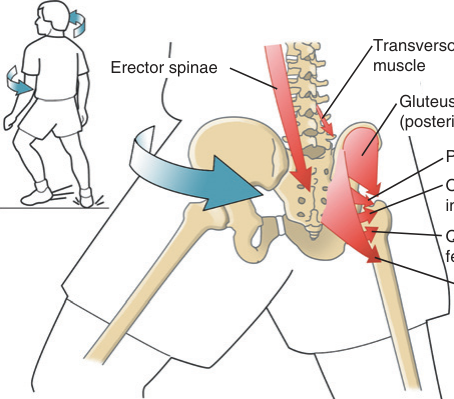
Sự hoạt hóa lệch tâm đột ngột của cơ khép dài hoặc cơ khép ngắn, chẳng hạn, có thể phát sinh để khử gia tốc khung chậu khi khung chậu vung sang phía đối diện — một hành động có thể gây chấn thương "căng giãn" (strain) cho các cơ này. Cơ chế chấn thương này có thể một phần giải thích tần suất tương đối cao của chấn thương căng giãn cơ khép trong nhiều hoạt động thể thao có liên quan đến sự xoay nhanh khung chậu và thân mình khi chạy.
Số liệu chuẩn (normative data) về khả năng tạo mô men khi gắng sức tối đa của các cơ khớp háng có thể hữu ích cho việc đánh giá tiến triển và đặt mục tiêu cho những người tham gia các chương trình phục hồi chức năng và huấn luyện. Hình 12.48 mô tả mô men trong tối đa trung bình được tạo ra bởi một mẫu nam giới khỏe mạnh. Thật thú vị khi quan sát thứ bậc của các mô men đỉnh qua ba mặt phẳng chuyển động. Mô men lớn nhất được tạo ra ở mặt phẳng đứng dọc, với mô men duỗi hơi vượt quá mô men gập. Sự vượt trội về sức mạnh của các cơ duỗi khớp háng so với tất cả các nhóm cơ khác không có gì đáng ngạc nhiên: các cơ này phải nâng hoặc đẩy cơ thể hướng lên trên (và thường hướng về phía trước) ngược trọng lực, hoặc kiểm soát sự hạ xuống của cơ thể. Sức mạnh tương đối cao của các cơ gập khớp háng phản ánh nhu cầu gia tốc nhanh chi dưới trong lúc chạy, ngoài việc kiểm soát toàn bộ thân mình và khung chậu so với các chi dưới được cố định. Hãy xét, trong trường hợp sau, chẳng hạn cơ chậu–thắt lưng đầy sức mạnh — một cơ có khả năng chiếm một tỷ lệ đáng kể trong tiềm năng mô men gập tại khớp háng.
Các cơ khép và cơ dạng tạo ra các độ lớn mô men đỉnh tương đương nhau trong mặt phẳng trán, nhưng với độ lớn tổng hợp thấp hơn so với các cơ gập và cơ duỗi. Các cơ xoay trong và xoay ngoài tạo ra mô men có độ lớn thấp nhất trong tất cả các nhóm cơ của khớp háng. Thứ bậc như vậy có lẽ là do, ở tư thế đứng thẳng, các cơ này tạo ra một mô men xoay giữa xương đùi và khung chậu trong một mặt phẳng thường không đối trọng với lực của trọng lực.
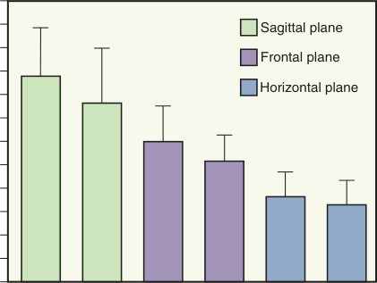
Viêm xương khớp là một trong những nguyên nhân phổ biến nhất gây đau khớp háng và các suy giảm liên quan. Phần này giới thiệu tình trạng thường gây tàn phế này, tiếp theo là một cuộc thảo luận về sinh cơ học lâm sàng liên quan đến một số can thiệp trị liệu và phẫu thuật được chọn lọc.
Viêm xương khớp khớp háng là một bệnh biểu hiện chủ yếu bằng sự thoái hóa sụn khớp của khớp, mất khoảng khớp, sự dày lên của bao khớp, xơ cứng xương dưới sụn, và sự hiện diện của các gai xương (osteophyte). Do thiếu một cơ chế giảm xóc đầy đủ để phân tán các lực khớp, khớp háng có thể trải qua sự thoái hóa và thay đổi hình dạng đáng kể. Vài năm trước, American College of Rheumatology đã đề xuất các tiêu chí sau để chẩn đoán viêm xương khớp khớp háng mà không cần dùng phương pháp chụp X-quang: đau khớp háng, gập khớp háng dưới 115 độ, và xoay trong dưới 15 độ. Tầm chuyển động giảm có thể do các giới hạn ở mô mềm (chẳng hạn bao khớp sau và dưới, hoặc một phần dây chằng ngồi–đùi) và, trong các trường hợp nặng hơn, do sự lệch hợp mặt khớp và hình thành gai xương. Các triệu chứng bổ sung có thể gồm teo và yếu các cơ khớp háng, cứng khớp vào buổi sáng, tiếng nổ lục cục (crepitus), viêm mô mềm, và một kiểu dáng đi bất thường (chẳng hạn dáng đi Trendelenburg bù trừ) hoặc độ dài bước chân thay đổi. Các suy giảm liên quan đến viêm xương khớp khớp háng giai đoạn tiến triển có thể gây mất chức năng đáng kể, bao gồm khó leo cầu thang, đi bộ, tắm rửa, mặc quần áo cho chi dưới, lên xuống xe hơi, và đứng dậy khỏi ghế thấp.
Viêm xương khớp khớp háng có thể được phân loại là bệnh nguyên phát hoặc thứ phát. Viêm xương khớp khớp háng nguyên phát, hoặc vô căn, là một tình trạng viêm khớp không có nguyên nhân đã biết hoặc rõ ràng. Ngược lại, viêm xương khớp khớp háng thứ phát là một tình trạng viêm khớp xảy ra do một rối loạn cơ học đã biết hoặc tương đối rõ ràng của khớp. Tình trạng này có thể xảy ra do chấn thương hoặc tiếp xúc với tải trọng lớn; do suy hư cấu trúc, chẳng hạn trượt chỏm xương đùi (slipped capital femoral epiphysis) hoặc hoại tử vô mạch chỏm xương đùi (ví dụ bệnh Legg-Calvé-Perthes); do bất đối xứng giải phẫu đáng kể hoặc loạn sản, chẳng hạn xoay trước (anteversion) ổ xương hứng hoặc xương đùi quá mức; hoặc do các lần trật khớp lặp đi lặp lại và bất ổn mạn tính. Thường thì nguồn gốc của rối loạn cơ học không rõ ràng đến vậy, và các biến thể giải phẫu tương đối tinh vi trong cấu trúc xương có thể là tiền thân của viêm xương khớp. Sự không tương hợp khớp dẫn đến (ngay cả khi nhẹ và không có triệu chứng), nếu kết hợp với một số chuyển động quen thuộc và thường là quá mức, có thể dẫn đến va chạm lặp đi lặp lại và ứng suất lên khớp đến mức có khả năng khởi phát viêm xương khớp.
Mặc dù đã có hàng thập kỷ nghiên cứu lâm sàng và khoa học cơ bản, nguyên nhân gốc rễ chính xác của viêm xương khớp khớp háng nguyên phát vẫn còn chưa rõ. Mặc dù tần suất của viêm xương khớp ở bất kỳ khớp nào đều tăng theo tuổi, bệnh không chỉ được khởi phát bởi quá trình lão hóa. Nếu đúng như vậy thì tất cả người cao tuổi cuối cùng đều sẽ mắc bệnh này. Các nguyên nhân của viêm xương khớp rất phức tạp và không chỉ dựa đơn thuần trên hiện tượng mòn mỏi do sử dụng. Mặc dù ứng suất vật lý có thể làm tăng tốc độ và mức độ mài mòn ở khớp háng, điều này không phải lúc nào cũng dẫn đến viêm xương khớp. Các yếu tố khác có thể liên quan đến viêm xương khớp là sự thay đổi chuyển hóa chất nền (ground matrix) của sụn, chỉ số khối cơ thể tăng, yếu tố di truyền, các yếu tố của hệ miễn dịch, rối loạn thần kinh–cơ, và các yếu tố sinh hóa.
Gãy xương nặng hoặc viêm xương khớp của khớp háng có thể dẫn đến đau mạn tính và mất ổn định cơ học. Những suy giảm có khả năng gây tàn phế này cũng có thể xảy ra ở một khớp háng đang viêm cấp tính, giòn do loãng xương nặng, hoặc loạn sản rõ rệt. Điều trị bảo tồn cho các tình trạng này có thể bao gồm hướng dẫn về dáng đi có hỗ trợ và các hoạt động chức năng, các biện pháp vật lý giảm đau, và khi thích hợp, rèn luyện thể lực hiếu khí theo cấp độ và tập luyện. Ngoài ra, nhà trị liệu lâm sàng thường đưa ra lời khuyên về cách hạn chế độ lớn của các lực có thể khá lớn, vốn có thể làm trầm trọng thêm hoặc khiến bệnh lý nền trở nên phức tạp hơn. Những lời khuyên về "bảo vệ khớp" háng có thể bao gồm giảm cân nặng cơ thể; đi bộ với tốc độ, nhịp bước và độ dài sải bước giảm; sử dụng một dụng cụ hỗ trợ như gậy chống; và áp dụng các phương pháp cụ thể để mang vác tải trọng.
Một trong những phương pháp thực tế và hiệu quả nhất để giảm các lực nén lên khớp háng trong khi đi bộ là sử dụng một cây gậy chống cầm ở tay đối diện với khớp háng bị ảnh hưởng. Việc sử dụng gậy theo cách này làm giảm các lực phản ứng khớp chủ yếu bằng cách giảm mức độ hoạt động của các cơ dạng khớp háng. Hình 12.49 cho thấy việc tác dụng một lực gậy chống (CF) bằng tay trái tạo ra một lực phản ứng khớp tại khớp háng phải là 1195,4 N (268,8 lb). Con số này thấp hơn 36% so với khi không dùng gậy (xem Hình 12.44 để so sánh). Về bản chất, lực tác dụng lên cây gậy (cầm ở tay trái) tạo ra một mô men quanh khớp háng phải cùng chiều xoay với mô men do các cơ dạng khớp háng nằm phía trên tạo ra. Do đó, việc đè lên gậy có thể thay thế một phần lực mà thông thường các cơ dạng khớp háng phải tạo ra: nhu cầu giảm bớt đặt lên các cơ dạng khớp háng trong khi đỡ bằng một chi (single-limb support) tương đương với lực nén giảm lên khớp háng.
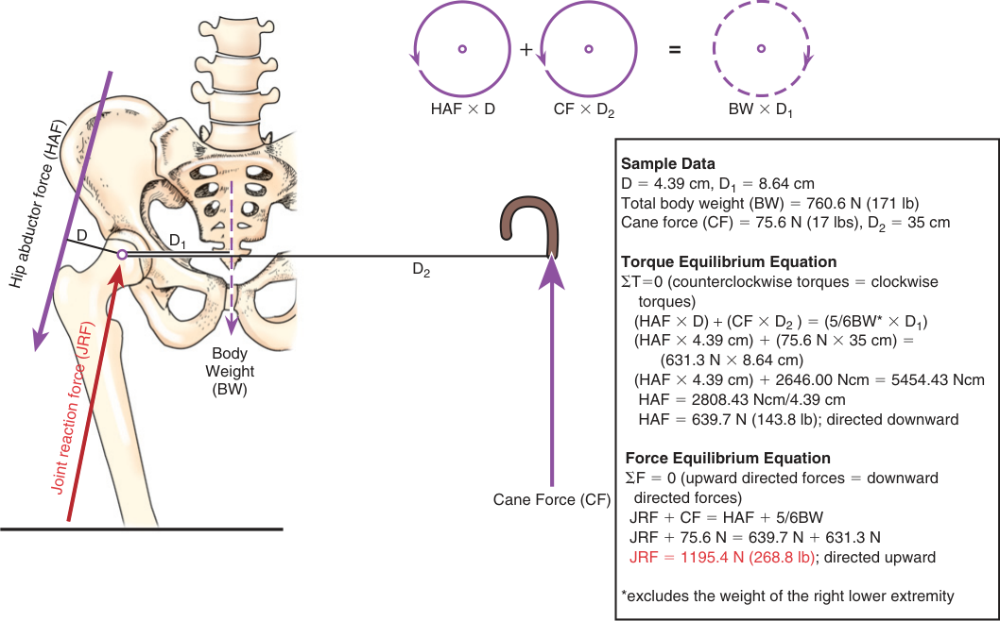
Các phương pháp mang vác tải trọng bên ngoài ảnh hưởng đáng kể đến các yêu cầu đặt lên các cơ dạng khớp háng và do đó lên khớp háng bên dưới. Những người có khớp háng đau, mất ổn định, hoặc đã được thay bằng phẫu thuật cần được cảnh báo về những hậu quả của việc mang vác các tải trọng cầm tay tương đối lớn ở phía đối bên (contralateral), tức đối diện, với khớp háng bị ảnh hưởng. Như thể hiện trong Hình 12.50, tải trọng đối bên có một cánh tay đòn ngoài rất lớn (D2), tạo ra một mô men theo chiều kim đồng hồ đáng kể quanh khớp háng phải. Để ổn định trong mặt phẳng trán, các cơ dạng khớp háng phải phải tạo ra một mô men ngược chiều kim đồng hồ đủ lớn để cân bằng với các mô men theo chiều kim đồng hồ do tải trọng ngoài (CL × D2) và trọng lượng cơ thể (BW × D1) gây ra. Do cánh tay đòn tương đối nhỏ sẵn có cho các cơ dạng khớp háng (D), lực cơ dạng khớp háng trong khi đỡ bằng một chi là rất lớn. Như các phép tính trong Hình 12.50 cho thấy, việc mang một tải trọng cầm bên đối bên bằng 15% trọng lượng cơ thể (114,1 N hay 25,7 lb) tạo ra một lực phản ứng khớp là 2897,6 N (651,1 lb). Một khớp háng khỏe mạnh thường có thể chịu được mức lực này mà không gặp khó khăn. Tuy nhiên, phải thận trọng nếu độ ổn định cấu trúc của khớp háng đã bị tổn hại.
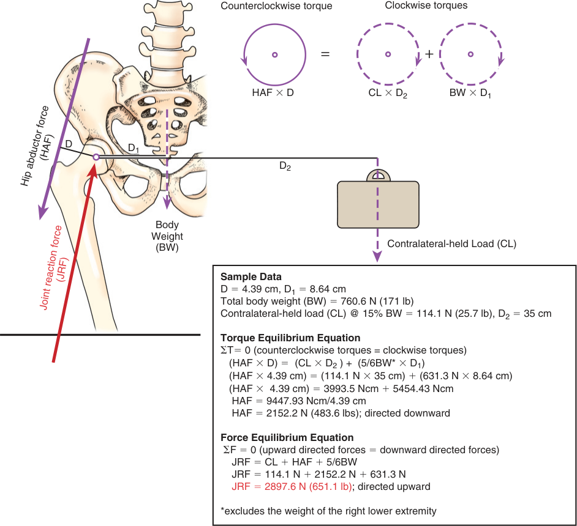
Nguyên tắc chung, người có khớp háng mất ổn định hoặc đau nên được khuyên tránh hoặc hạn chế mang vác bất kỳ tải trọng ngoài nào. Tuy nhiên, đối với hầu hết những người có thể đi lại, lời khuyên này là bất khả thi. Thực tế hơn, khi buộc phải mang vác tải trọng, chúng nên càng nhẹ càng tốt, được mang trong ba lô hoặc bằng tay cùng bên (ipsilateral) với khớp háng bị ảnh hưởng, hoặc được chia đôi và mang bằng cả hai bên. Nghiên cứu đã chỉ ra rằng chiến lược kết hợp việc sử dụng gậy chống cầm ở bên đối bên với một tải trọng cầm ở cùng bên (bằng hoặc nhỏ hơn 15% trọng lượng cơ thể) làm giảm yêu cầu đặt lên các cơ dạng khớp háng ở mức độ lớn hơn so với khi áp dụng riêng lẻ từng phương pháp.
Cuộc thảo luận trước tập trung vào các phương pháp làm giảm yêu cầu lực đặt lên các cơ dạng khớp háng như một biện pháp để giảm lực lên một khớp háng đau hoặc mất ổn định. Các phương pháp tương tự cũng được áp dụng để bảo vệ một khớp háng mất ổn định liên quan đến phẫu thuật thay khớp háng toàn phần (thay khớp nhân tạo). Mặc dù các phương pháp này có thể đạt được hiệu quả mong muốn, nhu cầu chức năng giảm đặt lên khớp háng cũng có thể duy trì tình trạng yếu kéo dài ở các cơ dạng khớp háng, điều này đến lượt nó dẫn đến các lệch lạc trong dáng đi. Một nghiên cứu đã báo cáo mô men dạng khớp háng trung bình thấp hơn 31% ở những người bị viêm xương khớp khớp háng đang chờ phẫu thuật thay khớp so với nhóm đối chứng cùng tuổi. Sự mất sức này vượt quá mức mất sức của các cơ gập, duỗi và khép khớp háng. Nhà trị liệu lâm sàng phải đối mặt với một nghịch lý. Làm thế nào để bảo vệ một khớp háng mong manh khỏi các lực quá mức và có khả năng gây tổn hại của các cơ dạng, đồng thời tăng sức mạnh chức năng và sức bền của chính các cơ đó? Điều này đòi hỏi kiến thức về cơ học mặt phẳng trán bình thường và bất thường của khớp háng, bệnh lý đặc hiệu cho tình trạng của bệnh nhân, và các triệu chứng cho thấy khớp háng đang chịu các lực có khả năng gây tổn hại. Các dấu hiệu và triệu chứng này bao gồm đau quá mức, lệch dáng đi rõ rệt, bất ổn khớp háng lan tỏa, và tư thế bất thường của chi dưới.
Phẫu thuật thay khớp háng toàn phần thường được thực hiện khi một người mắc bệnh khớp háng, thường gặp nhất là viêm xương khớp, có đau hoặc bất động hạn chế đáng kể chức năng và chất lượng cuộc sống. Phẫu thuật phổ biến này thay thế ổ xương hứng và/hoặc chỏm xương đùi bị bệnh hoặc thoái hóa bằng các vật liệu tương đối trơ về mặt sinh học, thường là một số kết hợp của gốm, kim loại, hoặc polyethylene (Hình 12.51). Một khớp háng nhân tạo có thể được cố định bằng xi măng hoặc thông qua cố định sinh học do sự phát triển của xương vào bề mặt của các bộ phận cấy ghép. Mặc dù phẫu thuật thay khớp háng toàn phần nhìn chung là một thủ thuật thành công, một tỷ lệ nhỏ bệnh nhân có thể gặp tình trạng lỏng sớm, hỏng, hoặc trật các bộ phận thân xương đùi và/hoặc ổ xương hứng nhân tạo. Các tải trọng xoắn lớn giữa bộ phận cấy ghép nhân tạo và mặt tiếp giáp xương có thể góp phần gây mất cố định. Ngoài ra, các biến chứng có thể phát sinh từ mảnh vụn bong ra từ các bộ phận cấy ghép bị mài mòn, dẫn đến tiêu xương (osteolysis) và làm yếu xương xung quanh. Mặc dù có những biến chứng tiềm ẩn này, phẫu thuật thay khớp háng toàn phần vẫn là một ca phẫu thuật được đánh giá cao về khả năng giảm đau và cải thiện chức năng. Cho đến khi có đủ dữ liệu dài hạn từ các thử nghiệm lâm sàng, cuộc tranh luận vẫn tiếp tục về các vật liệu bền và an toàn nhất, các phương pháp cố định và cấy ghép hiệu quả, và đường mổ phẫu thuật thành công nhất (ví dụ, trước so với sau khớp háng).
Như đã mô tả trước đó trong chương này, góc nghiêng cổ xương đùi trung bình khoảng 125 độ (xem Hình 12.7A). Góc này có thể thay đổi do một lần sửa chữa phẫu thuật khớp háng gãy hoặc do thiết kế cụ thể của một khớp háng nhân tạo. Ngoài ra, một phẫu thuật được gọi là phẫu thuật cắt xương coxa vara (hoặc coxa valga) cố ý thay đổi góc nghiêng có sẵn. Phẫu thuật này bao gồm việc cắt một mảnh xương hình nêm khỏi phần gần xương đùi, từ đó thay đổi hướng của chỏm xương đùi so với ổ xương hứng. Mục tiêu của phẫu thuật này thường là cải thiện độ tương hợp của các mặt chịu tải của khớp háng.
Bất kể loại và lý do của phẫu thuật khớp háng là gì, việc thay đổi góc nghiêng của phần gần xương đùi có thể làm thay đổi sinh cơ học của khớp. Những thay đổi này, đặc biệt nếu đáng kể, có thể có các tác động sinh cơ học tích cực hoặc tiêu cực. Hình 12.52A cho thấy hai tác động sinh cơ học tích cực có thể có của coxa vara. Tư thế varus làm tăng cánh tay đòn của lực dạng khớp háng (được chỉ bởi D′). Sự đòn bẩy lớn hơn làm tăng mô men dạng được tạo ra trên mỗi đơn vị lực cơ dạng khớp háng. Tình trạng này có thể có lợi cho những người yếu cơ dạng khớp háng. Ngoài ra, việc tăng đòn bẩy của các cơ dạng có thể cho phép một mức mô men dạng nhất định cần thiết trong pha đỡ của chu kỳ đi được tạo ra bằng ít lực cơ hơn. Sự giảm các lực khớp gốc từ cơ như vậy có thể giúp bảo vệ một khớp háng viêm xương khớp hoặc khớp nhân tạo mất ổn định khỏi mài mòn quá mức trong khi đi bộ. Phẫu thuật cắt xương varus ở một số bệnh nhân có thể cải thiện độ ổn định của khớp bằng cách sắp đặt chỏm xương đùi trực diện hơn vào ổ xương hứng.
Một tác động tiêu cực có thể có của coxa vara là mô men uốn (hoặc mô men) tăng lên qua cổ xương đùi (xem Hình 12.52B). Cánh tay đòn uốn (đường đứt nét được chỉ bởi I′) tăng lên khi góc nghiêng tiến về 90 độ. Việc tăng mô men uốn làm tăng lực căng qua mặt trên của cổ xương đùi. Tình trạng này có thể gây gãy cổ xương đùi hoặc hỏng cấu trúc của một bộ phận nhân tạo. Coxa vara rõ rệt làm tăng lực trượt đứng dọc giữa chỏm xương đùi và mảnh lớn kề cận. Ở trẻ em, tình trạng này có thể dẫn đến một bệnh lý được gọi là trượt chỏm xương đùi (slipped capital femoral epiphysis). Coxa vara cũng có thể làm giảm chiều dài chức năng của các cơ dạng khớp háng, từ đó làm giảm khả năng tạo lực của các cơ này và làm tăng khả năng xuất hiện "dáng đi cơ mông giữa" (gluteus medius limp). Sự mất lực cơ có thể triệt tiêu tiềm năng mô men dạng tăng thêm thu được từ cánh tay đòn dạng khớp háng tăng lên.
Coxa valga có thể do một can thiệp phẫu thuật hoặc do các bệnh lý như loạn sản khớp háng. Một tác động tích cực có thể có của tư thế valgus là sự giảm cánh tay đòn uốn qua cổ xương đùi (xem I″ trong Hình 12.52C). Tình trạng này cũng làm giảm lực trượt đứng dọc qua cổ xương đùi. Tư thế valgus cũng có thể làm tăng chiều dài chức năng của các cơ dạng khớp háng, nhờ đó cải thiện khả năng tạo lực của chúng. Ngược lại, một tác động tiêu cực có thể có của coxa valga là cánh tay đòn giảm đi sẵn có cho lực dạng khớp háng (được chỉ bởi D″ trong Hình 12.52D). Trong coxa valga mức độ nặng, chỏm xương đùi có thể được đặt lệch hơn về phía ngoài trong ổ xương hứng, có khả năng làm tăng nguy cơ trật khớp.
Các khớp háng hoạt động như những khớp nền tảng (basilar joints) cho cả bộ xương trục và các chi dưới. Do vậy, các khớp háng tạo thành điểm trục trung tâm cho các chuyển động phổ biến của toàn bộ cơ thể, đặc biệt là những chuyển động liên quan đến gập và duỗi.
Chẳng hạn, hãy xét việc nhấc chân lên để leo một bậc cầu thang dốc, hay việc cúi người ở eo lưng để nhặt một đồ vật từ sàn nhà. Cả hai động tác này đều đòi hỏi một lượng chuyển động đáng kể cũng như sự tạo lực cơ giữa phần gần của các xương đùi và khung chậu. Vì vậy, tình trạng yếu, mất ổn định hoặc đau tại các khớp háng thường gây ra khó khăn rõ rệt khi thực hiện nhiều hoạt động đa dạng trong suốt cuộc đời—từ việc học cách đi bộ, lên xuống ghế, tham gia thể thao ở mức độ cao, cho đến chỉ đơn giản là tập các bài aerobic vừa phải. Xương học và khớp học của khớp háng khỏe mạnh được cấu tạo nhằm đảm bảo sự ổn định nhiều hơn là cung cấp tính linh hoạt dồi dào — một đặc điểm về cơ bản trái ngược với khớp cánh tay–xương bả vai (glenohumeral joint), khớp tương đồng của chi trên. Chỏm xương đùi (femoral head) nằm sâu và được bao bọc tốt, được chặn quanh bởi các dây chằng bao khớp và cơ dày, đảm bảo sự ổn định đặc biệt là trong giai đoạn chịu tải của việc đi bộ — một giai đoạn chiếm 60% của một chu kỳ đi. Cần một lượng hoạt động cơ nhỏ đáng ngạc nhiên để ổn định các khớp háng khi đứng ở tư thế thẳng thả lỏng, với giả định một hoặc cả hai khớp háng được duỗi hoàn toàn. Tư thế như vậy thường định hướng đường trọng lực (line of gravity) của cơ thể ngay phía sau trục xoay trong–ngoài tại các khớp háng. Lực hấp dẫn vì thế có thể giúp giữ các khớp háng ở trạng thái duỗi thụ động. Các dây chằng của khớp háng, tương đối căng ở hoặc gần vị trí duỗi hoàn toàn của khớp háng, tạo ra lực căng hữu ích giúp ổn định thêm các khớp háng đang duỗi. Lực cơ đôi khi có thể cần thiết để tăng cường hoặc điều chỉnh lại sự ổn định của các khớp háng khi đứng thả lỏng, nhưng cơ chế chủ động này thường chỉ được dùng như nguồn dự trữ hoặc nguồn thứ cấp. Tuy nhiên, trường hợp co cứng gập khớp háng (hip flexion contracture) thì không như vậy; sự ổn định khi đứng ở tư thế gập một phần đòi hỏi sự kích hoạt đáng kể và liên tục từ các cơ duỗi háng. Tình trạng này không chỉ “tốn kém” về mặt chuyển hóa mà còn tạo ra các lực cơ quá lớn tác dụng qua các khớp háng. Các lực này, khi tác dụng kéo dài theo thời gian, có thể gây hại cho một khớp bị lệch trục không thể phân tán ứng lực một cách thích hợp. Mức độ mà các khớp háng góp phần vào chuyển động toàn thân đòi hỏi phải hiểu cả động học xương đùi trên khung chậu (femoral-on-pelvic kinematics) lẫn động học khung chậu trên xương đùi (pelvic-on-femoral kinematics). Các chuyển động xương đùi trên khung chậu thường gắn với sự thay đổi vị trí của toàn bộ cơ thể so với môi trường xung quanh, chẳng hạn khi đi bộ. Ngược lại, các chuyển động khung chậu trên xương đùi thường được thực hiện để thay đổi vị trí của khung chậu — và thường là toàn bộ thân trên kèm theo — so với các chi dưới cố định. Các chuyển động khung chậu trên xương đùi được biểu hiện dưới nhiều hình thức, từ những dao động tinh vi của khung chậu trong giai đoạn chân đỡ của mỗi chu kỳ đi cho đến những xoay cung lớn rõ rệt hơn của khung chậu (và thân mình) khi một vận động viên trượt băng nghệ thuật xoay trục trên băng trong khi cúi người ở eo lưng. Thêm vào sự phức tạp của các chuyển động khung chậu trên xương đùi là mối liên hệ chặt chẽ với động học của cột sống thắt lưng. Do đó, đánh giá lâm sàng các nguyên nhân gây giảm chuyển động hoặc chuyển động bất thường tại khớp háng phải bao gồm cả việc đánh giá độ mềm dẻo và tư thế hiện có của vùng thắt lưng. Hạn chế chuyển động ở cột sống thắt lưng hoặc ở các khớp háng đều làm thay đổi trình tự động học trên khắp thân mình và đầu gần của chuỗi động học chi dưới. Khả năng xác định vị trí nguồn gốc của động học bất thường trong vùng cơ thể rộng lớn này chắc chắn làm tăng khả năng chẩn đoán và can thiệp lâm sàng thành công. Gần một phần ba số cơ đi qua khớp háng bám gần vào khung chậu và bám xa vào xương chày hoặc xương mác. Do đó, sự mất cân bằng lực giữa các cơ này — bất kể do cơ nào trong số chúng tạo ra một cách chủ động hay thụ động — đều có thể ảnh hưởng đến tư thế và tầm chuyển động qua nhiều đoạn, đặc biệt là cột sống thắt lưng, khớp háng và khớp gối. Các nhà lâm sàng thường xuyên đánh giá và điều trị các hạn chế chức năng có thể phát sinh từ các tổn thương trong và giữa các cơ này cùng với các cơ cộng lực (synergistic muscles) khác. Điều trị đòi hỏi sự hiểu biết thấu đáo về cách các cơ tương tác với nhau trong một vùng cơ thể có liên quan cơ học chặt chẽ.KẾT NỐI LÂM SÀNG 12.1 — Tăng cường sự kéo giãn trị liệu một số cơ hai khớp đã chọn của khớp háng (Augmenting the Therapeutic Stretch of Selected Biarticular Muscles of the Hip)
Các nhà lâm sàng thường xuyên áp dụng các phương pháp kéo giãn cơ để điều trị hoặc dự phòng các rối loạn cơ xương. Các cơ hai khớp (biarticular) của khớp háng được quan tâm lâm sàng đặc biệt, nhất là gân kheo (hamstrings) và cơ thẳng đùi (rectus femoris). Sự giảm khả năng dãn dài của các cơ này có thể làm thay đổi tư thế, tầm chuyển động và tính lưu loát (hoặc sự dễ dàng) của chuyển động qua nhiều đoạn, bao gồm cột sống thắt lưng, khớp háng và khớp gối. Một số bằng chứng ủng hộ tiền đề rằng việc kéo giãn cơ có thể ngăn ngừa chấn thương. Chẳng hạn, việc triển khai một chương trình kéo giãn gân kheo đều đặn đã được chứng minh là làm giảm tỷ lệ chấn thương ở các tân binh trong giai đoạn huấn luyện cơ bản của quân đội.
Vì các cơ này đi qua rất nhiều khớp, có thể dùng nhiều cách kết hợp khác nhau giữa các chuyển động chủ động và các tư thế tĩnh để kéo giãn chúng. Làm thế nào một người có thể tăng cường việc tự kéo giãn một số cơ hai khớp này?
Là ví dụ đầu tiên trong hai ví dụ, hãy xét cách một người có thể kéo giãn các cơ gân kheo. Một trong những phương pháp truyền thống hơn kết hợp tư thế tĩnh gần duỗi hoàn toàn khớp gối với các mức gập khớp háng khác nhau (Hình 12.53A). Như thể hiện trong hình này, lực căng cơ tăng lên trong gân kheo đang bị kéo giãn kéo củ ngồi (ischial tuberosity) về phía trước, qua đó làm tăng sự nghiêng khung chậu về phía sau và giảm chửa thắt lưng (lumbar lordosis) ở cột sống thắt lưng của người được xét. Về mặt lý thuyết, sự nghiêng khung chậu về phía sau này sẽ làm giảm hiệu quả của việc kéo giãn lên các cơ gân kheo. Như một cách để tăng cường phạm vi của sự kéo giãn này, người được xét có thể được hướng dẫn co chủ động các cơ đối kháng với nhóm gân kheo bị căng, chẳng hạn cơ thẳng đùi và cơ nhiều đoạn (multifidus) (xem Hình 12.53B). Các cơ này được coi là đối kháng với gân kheo do khả năng thực hiện gập khớp háng (theo hướng khung chậu trên xương đùi) bằng cách xoay khung chậu về phía trước so với các xương đùi cố định. Sự co chủ động của cặp cơ này làm kéo dài gân kheo bên phải, điều này, như được ghi chú trong Hình 12.53B, được minh chứng bằng sự tăng chửa thắt lưng.
Bằng cách co cơ tứ đầu đùi (quadriceps femoris), cơ thẳng đùi có thể gập khớp háng (xét theo hướng khung chậu trên xương đùi) đồng thời ổn định khớp gối ở tư thế duỗi. Hành động ổn định này của cơ tứ đầu đùi có thể kháng lại phản ứng gập khớp gối có thể xảy ra do gân kheo bị căng tạo ra, phản ứng mà có thể làm giảm hiệu quả của sự kéo giãn.
Hãy xét ví dụ thứ hai, liên quan đến một chiến lược tương tự, để tăng cường việc tự kéo giãn cơ thẳng đùi. Hình 12.54A cho thấy một người phụ nữ ở tư thế kéo giãn cơ thẳng đùi của mình bằng cách duy trì vị trí kết hợp duỗi khớp háng và gập khớp gối. Sức căng thụ động tăng lên trong cơ thẳng đùi hai khớp đang bị kéo giãn xoay khung chậu về phía trước, do đó làm tăng sự nghiêng khung chậu về phía trước và chửa thắt lưng. Như được mô tả trong Hình 12.54B, sự co chủ động của các cơ bụng (abdominal muscles) và cơ mông lớn (gluteus maximus) (trong số các cơ duỗi háng khác) của người được xét có thể được dùng để kéo giãn tất cả các cơ gập háng, bao gồm cả cơ thẳng đùi. Cả hai cơ được kích hoạt này đều là cơ đối kháng của cơ thẳng đùi do khả năng thực hiện duỗi khớp háng (theo hướng khung chậu trên xương đùi) bằng cách xoay khung chậu về phía sau so với các xương đùi cố định. Sự nghiêng khung chậu về phía sau này cũng sẽ hỗ trợ kéo giãn phần lớn bao khớp (joint capsule) của khớp háng, đặc biệt ở vùng dây chằng chậu–đùi (iliofemoral ligament).
Hai ví dụ này minh họa các phương pháp kéo giãn các cơ đa khớp (polyarticular) của khớp háng. Trong mỗi trường hợp, quy trình kéo giãn tiêu chuẩn được tăng cường bằng một sự co cơ có chủ ý của một nhóm cơ được coi là đối kháng với cơ bị căng. Cách tiếp cận trị liệu này đòi hỏi sự hiểu biết vững chắc về cách nhiều cơ có thể ảnh hưởng đến khớp háng, trực tiếp hoặc gián tiếp. Việc kích hoạt các cơ đối kháng này theo cách đã mô tả có tạo ra độ mềm dẻo lớn hơn hoặc kéo dài hơn ở các cơ háng hai khớp bị căng so với một sự kéo giãn thụ động tiêu chuẩn hay không thì chưa chắc chắn, mặc dù đây là một câu hỏi thú vị. Câu trả lời tiềm ẩn có thể vượt ra ngoài cơ học đơn thuần. Sự co mạnh của một cơ đối kháng có thể ức chế sự kháng cự trong cơ bị căng thông qua sự ức chế tương hỗ (reciprocal inhibition). Một lợi ích chắc chắn hơn của cách tiếp cận trị liệu này là bệnh nhân hoặc khách hàng tham gia tích cực hơn vào việc điều trị, điều này có thể nâng cao khả năng học hỏi của họ và qua đó kiểm soát tốt hơn sinh cơ học của vùng này và các vùng khác của cơ thể.
KẾT NỐI LÂM SÀNG 12.2 — Biện luận cho một phương pháp kéo giãn cơ hình lê tiêu chuẩn (Justifying a Standard Method of Stretching the Piriformis Muscle)
Sự hạn chế khả năng dãn dài của cơ hình lê (piriformis) có thể hạn chế xoay trong khớp háng, chèn ép thần kinh tọa (sciatic nerve) nằm bên dưới, hoặc tạo ra ứng lực bất thường lên khớp cùng–chậu (sacroiliac joint). Một số nhà lâm sàng cho rằng một cơ hình lê bị viêm và căng cứng cũng có thể tạo ra một điểm “kích hoạt” (trigger) đau sâu trong vùng mông. Đau mông thường lan vào khớp háng, mặt sau đùi hoặc phần gần cẳng chân. Tình trạng khó xác định này thường được gọi là “hội chứng cơ hình lê” (piriformis syndrome).
Điều trị cơ hình lê bị căng cứng có thể bao gồm kéo giãn. Trong số nhiều cách kéo giãn cơ này, một chủ đề chung là kết hợp gập hoàn toàn và xoay ngoài khớp háng, thường với khớp gối gập để giảm lực căng từ các cơ gân kheo hai khớp. Nghĩ ban đầu, thành phần xoay ngoài của tư thế kéo giãn cơ hình lê có vẻ trái trực giác, dựa trên hành động của cơ như một cơ xoay ngoài chính của khớp háng. Tuy nhiên, sự cân nhắc vận động học sâu hơn có thể giúp biện luận cho phương pháp kéo giãn này. Như đã mô tả trước đó trong chương, khi khớp háng gập, cơ hình lê chuyển hành động của nó từ một cơ xoay ngoài (ở tư thế duỗi háng trung tính) thành một cơ xoay trong. Điều này có thể được hình dung rất rõ với một mô hình bộ xương và một đoạn dây mềm mô phỏng đường lực của cơ (Hình 12.55A). Do đó, gập khớp háng quá 90 độ cho phép xoay ngoài khớp háng gây ra sự kéo dài thêm của cơ hình lê (Hình 12.55B).
Để kết luận, mặc dù cơ hình lê thay đổi hành động xoay của nó khi gập, nguyên tắc dùng để kéo giãn cơ này không bị vi phạm: kéo giãn một cơ đòi hỏi cơ phải được đặt ở một vị trí ngược với các hành động chính của nó.
KẾT NỐI LÂM SÀNG 12.3 — Dễ bị tổn thương của cánh môi ổ xương hứng: Những cân nhắc về chức năng và cấu trúc (Vulnerability of the Acetabular Labrum to Injury: Functional and Structural Considerations)
Phần lớn các vận động chức năng được thực hiện bởi thân người và chi dưới sẽ tạo ra ít nhất một lượng nào đó lực ép, lực kéo căng hoặc lực trượt tác dụng lên cánh môi ổ xương hứng (acetabular labrum). Vì vậy, cánh môi đặc biệt dễ bị bệnh lý nguồn gốc cơ học. Hơn nữa, mô này cho thấy tiềm năng lành phục kém sau chấn thương, làm tăng khả năng tình trạng trở nên mạn tính và đau đớn. Nhận thức lâm sàng về bệnh lý cánh môi ổ xương hứng đã gia tăng nhờ những tiến bộ kỹ thuật trong phẫu thuật nội soi khớp và các kỹ thuật chẩn đoán hình ảnh như chụp khớp cộng hưởng từ (magnetic resonance arthrography) (Hình 12.56).
Cơ chế làm tổn thương cánh môi ổ xương hứng rất đa dạng và được ghi nhận xảy ra trên một khoảng tuổi rộng. Mặc dù các trường hợp tự phát (idiopathic) khá phổ biến, bệnh lý liên quan đến cánh môi thường gắn liền với chấn thương hoặc mài mòn quá mức, loạn sản khớp háng phát triển (developmental hip dysplasia) hoặc bệnh lý khớp háng khác ở trẻ em, hay đơn giản chỉ là một dị dạng nhẹ của ổ xương hứng hoặc đoạn gần xương đùi.
Ở khớp háng cao tuổi, thoái hóa cánh môi rất phổ biến và nhiều khả năng liên quan đến mài mòn tích lũy của khớp. Ngược lại, khớp háng của trẻ em, vị thành niên và người trẻ tuổi có xu hướng phát triển các tổn thương cấp tính và khu trú hơn tại cánh môi, thường liên quan đến hoạt động hoặc thể thao. Sự liên quan này có xu hướng lớn nhất ở những người tham gia các vận động xoay, lặp lại hoặc gần hết tầm của khớp háng, như múa, võ thuật, chạy đường dài, bóng rổ hoặc bóng đá. Các triệu chứng cơ học liên quan đến rách cánh môi thường gồm cảm giác lạch cạch (clicking), “vướng kẹt” (“catching”) hoặc khuỵu đi (“buckling”). Đau thường được ghi nhận ở vùng bẹn.
Các cơ chế tổn thương cánh môi khác có thể liên quan đến một sự kiện chấn thương đơn lẻ như trật khớp háng, nâng hoặc kéo nặng từ tư thế ngồi xổm hoàn toàn, hoặc tai nạn giao thông. Tuy nhiên, khởi phát các triệu chứng đau từ cánh môi bị rách thường tiềm tàng và không liên quan đến một sự kiện cụ thể nào. Không may thay, rách cánh môi có thể khó chẩn đoán và, trừ khi được quan sát bằng nội soi khớp hoặc chụp cộng hưởng từ (hoặc chụp khớp cộng hưởng từ), có thể lọt khỏi sự phát hiện trong nhiều năm. Điều càng làm phức tạp bức tranh lâm sàng là bệnh lý cánh môi ổ xương hứng có thể gây ra đau ngoài khớp, chẳng hạn đau từ bên trong khung chậu. Mặc dù hiện chưa được hiểu rõ hay được chứng minh đầy đủ, bệnh lý cánh môi có thể làm thay đổi trạng thái của cơ bịt trong (obturator internus), vốn — như đã mô tả trước đó — góp phần tạo thành một phần chỗ bám của cơ nâng hậu môn (levator ani). Chức năng bị thay đổi này có thể ảnh hưởng đến việc kiểm soát các cơ sàn khung chậu và góp phần gây hội chứng đau sàn khung chậu.
Mặc dù người ở mọi độ tuổi đều có thể không có triệu chứng sau tổn thương cánh môi, nhiều người phát triển đau cùng các tổn thương trong khớp của khớp háng. Bệnh lý này thường đi kèm một dị dạng cấu trúc xương làm suy giảm sự khớp khít và khoảng trống (fit and clearance) giữa chỏm xương đùi và ổ xương hứng, qua đó đặt ứng suất lặp đi lặp lại trực tiếp lên cánh môi và khớp. Một số ví dụ về bệnh lý hình thái xương có thể dẫn đến ứng suất gây tổn hại cho khớp được mô tả trong các đoạn sau.
Cấu hình xương bình thường của khớp háng thường giảm thiểu sự tiếp xúc giữa đoạn gần xương đùi và vành ổ xương hứng. Tuy nhiên, những lệch nhẹ tương đối về hình thái xương có thể làm suy giảm khoảng trống động giữa hai vùng này. Sự va chạm chu kỳ và liên tục của đoạn gần xương đùi vào vành ổ xương hứng (hoặc ngược lại) có thể làm tổn hại cánh môi ổ xương hứng vốn tương đối mong manh — một tình trạng thường được mô tả là chèn ép khớp háng kiểu hõm–chỏm (femoroacetabular impingement, FAI). Việc nén lặp lại theo thời gian có thể chấn thương không chỉ cánh môi mà còn cả sụn khớp và xương dưới sụn. Chỉ trong thời gian tương đối gần đây FAI mới được công nhận là một yếu tố nguy cơ gây viêm xương khớp háng. FAI có thể chiếm phần lớn các trường hợp viêm xương khớp háng khởi phát sớm mà trong các thập kỷ trước lẽ ra đã được chẩn đoán là “tự phát”.
Hai kiểu chính của bệnh lý hình thái xương của khớp háng đã được liên hệ với FAI (Hình 12.57). Như minh họa ở Hình 12.57A, biến dạng kiểu cam (cam-type deformity) biểu hiện bằng phần xương thừa hình thành tại vùng trước–trên của điểm nối đầu–cổ xương đùi. Dị dạng này làm thay đổi hình dạng cầu của chỏm xương đùi, dẫn đến mất sự thon dần tự nhiên của điểm nối đầu–cổ xương đùi. Sự thiếu thon dần tự nhiên này thường được gọi là giảm “độ lệch đầu–cổ xương đùi” (femoral head-neck offset). Chèn ép kiểu cam (cam-type impingement) xảy ra do các vận động ép chỗ lồi không khớp khít của chỏm xương đùi vào hoặc vào trong ổ xương hứng. Theo thời gian, sự chèn ép này chấn thương cánh môi, thường nhất là chu vi trước–trên của nó. Tổn thương có thể lan vào trong về phía vùng tiếp giáp cánh môi–sụn (labrochondral junction). Xoay trong kết hợp gập khớp háng có xu hướng làm tối đa hóa sự chèn ép; do đó vận động này thường gây đau và bị giới hạn về chức năng. Mặc dù có thể ghi nhận các ngoại lệ, chèn ép kiểu cam được thấy tương đối thường xuyên ở vận động viên và nam giới trẻ năng động, đặc biệt ở những người thường xuyên tham gia các môn thể thao kết hợp xoay trong và gập khớp háng, như bóng bầu dục và khúc côn cầu trên băng.
Trong khi biến dạng kiểu cam liên quan đến bệnh lý hình thái của đoạn gần xương đùi, thì biến dạng kiềm kẹp (pincer-type deformity) liên quan đến hình dạng bất thường của ổ xương hứng (Hình 12.57B). Biến dạng kiềm kẹp được định nghĩa là sự kéo dài xương bất thường của bờ trước–ngoài của ổ xương hứng; về bản chất, ổ xương hứng che phủ quá mức chỏm xương đùi. Biến dạng kiềm kẹp thường được lượng hóa bằng góc tâm–bờ (center-edge angle) ít nhất 45–50 độ (xem góc CE bình thường ở Hình 12.13A). Mặc dù thay đổi, một ổ xương hứng bất thường sâu (acetabular profunda) hoặc xoay sau quá mức có thể bắt chước hoặc làm khuếch đại sự che phủ trước–ngoài quá mức của vùng chỏm và cổ gần xương đùi. Dù nguyên nhân nào, gập và xoay trong khớp háng có xu hướng gây va chạm sớm của đoạn gần xương đùi vào vành ổ xương hứng và cánh môi đang nhô ra. Các bệnh học cơ học (pathomechanics) có khả năng gây tổn hại này thường được gọi là chèn ép kiểu kiềm kẹp (pincer-type impingement), phản ánh cách “ôm lấy” chỏm xương đùi và vùng cổ gần giống như một chiếc kìm (kiềm) của vành ổ xương hứng và cánh môi. Trong khi chèn ép kiểu cam được thấy ở nam giới nhiều hơn, chèn ép kiểu kiềm kẹp xảy ra ở nữ giới nhiều hơn, hợp lý là do đặc điểm nhân trắc học của khung chậu. Thực tế, cả nam và nữ mắc FAI thường biểu hiện đồng thời các yếu tố của cả chèn ép kiểu cam và kiểu kiềm kẹp.
Mối liên hệ giả thuyết giữa FAI và viêm xương khớp thoái hóa của khớp háng nhìn chung dựa trên một số yếu tố liên quan với nhau, tạo nên vi chấn thương quá mức cho khớp. Thứ nhất, và có lẽ rõ ràng nhất, là quá trình thoái hóa bắt nguồn từ chấn thương cơ học “từ ngoài vào trong” (outside-in) lặp lại, khởi phát bởi lực chèn ép xương và sau đó được truyền đến các mô sâu hơn trong khớp. Một khả năng khác, chấn thương sụn khớp có thể dựa trên động học khớp bị thay đổi và gây ứng suất do những nỗ lực di chuyển khớp chống lại một lực cản bên ngoài (xương). Cuối cùng, cần lưu ý rằng các tổn thương thoái hóa và viêm xương khớp sau đó có thể do cánh môi bị tổn thương không còn cung cấp đủ chức năng bịt kín cơ học và dịch thể cho khớp (như đã mô tả trước đó trong chương này). Mặc dù khó nghiên cứu và khẳng định chắc chắn, cả ba yếu tố này đều có khả năng đồng thời gắn liền với mối liên hệ giữa FAI và viêm xương khớp thoái hóa.
Phần lớn nghiên cứu sinh cơ học về FAI tập trung vào sàng lọc, bệnh học cơ học và điều trị chèn ép kiểu cam, có lẽ do mối tương quan tương đối mạnh của nó với các tổn thương cánh môi–sụn và viêm xương khớp. Biến dạng kiểu cam thường được chẩn đoán với sự hỗ trợ của MRI hoặc chụp X-quang, bằng cách đo mức độ mà hình dạng của chỏm xương đùi lệch khỏi hình cầu. Mức độ lệch này thường được đo bằng cái được mô tả là góc alpha (alpha angle), dựa trên phim X-quang trước–sau (AP) (Hình 12.58). Mặc dù các định nghĩa khác nhau, một khớp háng có góc alpha bằng hoặc lớn hơn 60 độ thường được xác định là có biến dạng kiểu cam, trong khi khớp háng có góc alpha bằng hoặc lớn hơn khoảng 80 độ được xác định là biến dạng kiểu cam bệnh lý. Loại sau này có nguy cơ thống kê cao phát triển các tổn thương cánh môi–sụn và có khả năng là viêm xương khớp. Mặc dù tỷ lệ chính xác của các biến dạng cam trong dân số chung vẫn chưa chắc chắn, tình trạng này được báo cáo là khá phổ biến, trong khoảng 15–25% ở nam giới và 5–15% ở nữ giới. Chắc chắn không phải mọi người có biến dạng cam đều nhất định phát triển tổn thương cánh môi. Chẩn đoán FAI cùng tổn thương cánh môi liên quan thường đòi hỏi thông tin bổ sung, như tiền sử đau và các hoạt động làm nặng thêm, các thủ thuật kích đau bằng tay tái tạo cơn đau (thường gồm các yếu tố gập và xoay trong khớp háng quá mức), và chẩn đoán hình ảnh.
Nguyên nhân của các biến dạng cam tự phát trong dân số chung chưa rõ ràng, mặc dù một số yếu tố đã được liên hệ, bao gồm chấn thương hoặc nhiễm trùng trong quá khứ, di truyền, một trường hợp trượt đầu trên xương đùi chưa được giải quyết hoặc chỉ trượt một phần (slipped capital femoral epiphysis, SCFE), hoặc sự hình thành xương thừa có thể quy cho việc quá tải hiện tại hoặc trước đây của đoạn gần xương đùi (tức dựa trên định luật Wolff). Yếu tố quá tải dựa trên các nghiên cứu đã cho thấy tần suất biến dạng kiểu cam cao hơn nhiều ở các vận động viên nam trình độ cao. Tần suất biến dạng cam ở nhóm thường xuất sắc này được báo cáo cao tới 50–90%. Một số người suy đoán rằng tần suất bất thường cao này liên quan đến phản ứng phì đại của đoạn gần xương đùi trước các hoạt động tác động cao được thực hiện trong tuổi vị thành niên, vào một thời điểm tới hạn của trưởng thành xương. Giai đoạn chịu tải cao cũng có thể làm thay đổi sinh lý đóng sụn tăng trưởng của đoạn gần xương đùi. Điều rõ ràng, tuy nhiên, là các vận động viên nam trình độ cao, với tư cách một nhóm, có nhiều khả năng phát triển biến dạng kiểu cam hơn, và nhiều khả năng trải qua FAI cùng tổn thương cánh môi liên quan. Quần thể năng động này không chỉ nhiều khả năng có sẵn một biến dạng cam phát triển tiềm ẩn, mà còn nhiều khả năng thực hiện các vận động cực đoan và lặp lại có thể kích phát chèn ép. Qua nhiều chu kỳ nén quá mức, cánh môi bị mệt mỏi cơ học có thể bị rách và vỡ vụn. Nếu không được điều trị, sụn khớp và xương dưới sụn của chỏm xương đùi và ổ xương hứng sẽ tiếp xúc với chấn thương gây hại. Cần nhiều nghiên cứu hơn để hiểu đầy đủ nguồn gốc của một biến dạng cam. Hiểu biết tốt hơn về quá trình này có thể cung cấp hướng dẫn cho cha mẹ và huấn luyện viên trong việc điều chỉnh cường độ của một số hoạt động thể thao tác động cao trong thời điểm tới hạn của trưởng thành xương.
Điều trị bảo tồn cho FAI gồm thuốc chống viêm không steroid, tiêm steroid trong khớp, các phương pháp vật lý trị liệu nhằm giảm viêm, tăng cường cơ khớp háng và cơ thân “lõi” (core), và quan trọng nhất, dạy cách điều chỉnh các vận động tạo ra sự chèn ép. Người mắc FAI có thể vô thức tự điều chỉnh động học của mình trong một số hoạt động để giảm thiểu chèn ép. Chẳng hạn, so với một nhóm đối chứng, một mẫu nam giới trưởng thành mắc chèn ép kiểu cam thực hiện vận động gập khớp háng (đùi về ngực) khi nằm ngửa bằng một lượng xoay sau khung chậu tương đối lớn hơn. Nhịp khung chậu–xương đùi (pelvic-femoral rhythm) bị thay đổi này có thể cho phép vận động toàn phần của gập khớp háng xảy ra với mức gập hõm–chỏm (femoral-acetabular flexion) giảm, qua đó giảm thiểu chèn ép phía trước.
Can thiệp phẫu thuật cho FAI có thể gồm cắt lọc (debridement) hoặc vá cánh môi bị vỡ vụn, sử dụng kỹ thuật vi nứt (microfracture) để kích thích sự phát triển của sụn bị tổn thương, và áp dụng các thủ thuật tạo hình xương (osteoplasty) để định hình lại hoặc sắp xếp lại các xương bị dị dạng. (e-Hình 12.2 minh họa các phim X-quang trước và sau mổ của một phẫu thuật tạo hình xương đùi qua nội soi nhằm cắt bớt xương thừa tại điểm nối cổ–chỏm xương đùi ở một người mắc biến dạng cam và FAI.) Sau phẫu thuật, vật lý trị liệu đóng vai trò chính trong quá trình phục hồi chức năng.
KẾT NỐI LÂM SÀNG 12.4 — Loạn sản khớp háng phát triển: Thường là một bệnh lý tiến triển (Developmental Dysplasia of the Hip: Often an Evolving Pathology)
Loạn sản khớp háng phát triển (developmental dysplasia of the hip, DDH) là một trong những rối loạn chỉnh hình phổ biến nhất ảnh hưởng đến khớp háng; bệnh thường biểu hiện lúc sinh hoặc trong những năm đầu đời. Tình trạng này gồm một phổ các rối loạn liên quan chủ yếu đến sự phát triển và tăng trưởng cấu trúc bất thường (tức loạn sản — dysplasia) của các xương tạo nên khớp háng. Vì khớp háng tự nhiên tiếp tục phát triển sau sinh và trong suốt thời thơ ấu, chẩn đoán xác định và tiên lượng DDH không phải lúc nào cũng được đặt cho trẻ sơ sinh. Sự hiện diện của một khớp háng trật, bán trật (subluxed) hoặc bất thường lỏng lẻo ở trẻ sơ sinh gợi ý khả năng DDH.
Phần lớn các triệu chứng liên quan đến DDH nhẹ ở một trẻ vốn khỏe mạnh tự hồi phục với điều trị ít hoặc không cần điều trị. Không may thay, việc dự đoán ở tuổi sớm rằng triệu chứng của trẻ nào sẽ hồi phục và của trẻ nào sẽ không là điều không mấy khả thi. Những trẻ có triệu chứng tiếp diễn hoặc nặng lên có thể trình diện một bức tranh lâm sàng tiến triển có thể kéo dài suốt tuổi vị thành niên. Các trường hợp DDH nặng hơn có thể dẫn đến suy giảm thể chức vĩnh viễn ở người trẻ trưởng thành nếu không được điều trị đúng cách. Lý tưởng nhất, DDH được chẩn đoán lúc sinh bằng khám thực thể và, khi phù hợp, bằng các kỹ thuật chẩn đoán hình ảnh như siêu âm. Nếu chẩn đoán ban đầu bị bỏ sót, tình trạng có thể bộc lộ muộn hơn trong thời thơ ấu, tuổi vị thành niên hoặc tuổi trưởng thành — thường do đau khớp háng không giải thích được hoặc lệch kiểu đi (gait deviation).
Đặc điểm nền tảng và hằng định của DDH biểu hiện toàn phần là một khớp háng hình thành bất thường, khớp nối kém. Bệnh học cơ học chính thường bắt đầu từ phía ổ xương hứng của khớp. Một ổ xương hứng kém phát triển cung cấp một “mái vòm” ngắn và nông phía trên chỏm xương đùi, ngăn cản sự khớp nối khít tự nhiên với chỏm xương đùi. Nếu một khớp thật sự và ổn định không hình thành, đoạn gần xương đùi mất kích thích chính để phát triển bình thường, thường biểu hiện chỏm hơi dẹt, xoay trước (anteversion) quá mức, hoặc coxa vara hoặc coxa valga.
Mặc dù nguyên nhân chính xác của DDH chưa được hiểu trọn vẹn hoặc được thống nhất rộng rãi, các yếu tố sau đây được nêu là những nguy cơ hàng đầu để phát triển tình trạng này: tiền sử gia đình, sinh ngược (breech delivery), và giới nữ. Xu hướng chung mắc DDH ở loài người có thể gián tiếp liên quan đến tiến trình tự nhiên của sự phát triển khớp háng ở thai nhi. Ở thai nhi người 12 tuần tuổi, chỏm xương đùi đang phát triển được che phủ và giữ hoàn toàn trong ổ xương hứng đang phát triển. Tuy nhiên, phần trăm che phủ tự nhiên giảm dần cho đến khi sinh và sau đó bắt đầu tăng dần với sự phát triển sau sinh bình thường. Do đó, trong giai đoạn quanh sinh (perinatal), khớp háng tiềm ẩn sự bất ổn, gồm một ổ xương hứng nông và tương đối dẹt và một chỏm xương đùi phơi bày một phần, cả hai đều được cấu thành chủ yếu từ sụn mềm. Sự tăng trưởng và phát triển bình thường sau đó của khớp háng bị ảnh hưởng mạnh bởi các lực tiếp xúc tạo ra từ một chỏm xương đùi được định tâm tốt. Sự tiếp xúc này giúp nhào nặn độ lõm của ổ xương hứng còn dẻo theo hình dạng cầu của chỏm xương đùi và ngược lại, cuối cùng tạo điều kiện cho sự hình thành một khớp bình thường và ổn định.
Các lực và kiểu tiếp xúc được áp dụng bất thường tại khớp háng trong giai đoạn quanh sinh — vốn rất dễ biến dạng và dễ bị tổn thương của sự phát triển — có thể ảnh hưởng trực tiếp đến hình thái cuối cùng của khớp. Nguồn gốc của một số lực gây biến dạng tiềm tàng này trong giai đoạn sớm của cuộc sống được mô tả thêm trong các đoạn sau.
LỎNG LẺO KHỚP QUÁ MỨC (EXCESSIVE JOINT LAXITY)
Sự lỏng lẻo quá mức trong bao khớp và dây chằng của khớp háng có thể dẫn đến tăng lực trượt giữa các mặt khớp. Trong các trường hợp lỏng lẻo nặng, khớp háng bất ổn biểu hiện tăng dịch chuyển (translation) và “độ chơi” khớp (joint play), thường dẫn đến nguy cơ trật và bán trật khớp lớn hơn. Một khớp háng trục trật hướng hoặc trật không có kích thích động học bình thường để hướng dẫn sự tăng trưởng và phát triển của nó.
Sự lỏng lẻo gia tăng trong các mô liên kết của trẻ thường liên quan đến khuynh hướng di truyền. Sự lỏng lẻo gia tăng cũng có thể do một phản ứng cường điệu với hormone relaxin của người mẹ — vốn bình thường nhằm gây lỏng lẻo khung chậu ở người mẹ trong khi sinh. Nữ giới nhạy cảm hơn với tác dụng của relaxin, điều này có thể giải thích một phần tỷ lệ DDH cao hơn ở trẻ sơ sinh nữ.
TƯ THẾ TRONG TỬ CUNG BẤT THƯỜNG (ABNORMAL INTRAUTERINE POSITIONING)
Tư thế bất thường của thai nhi trong tử cung có thể đặt các lực bất thường lên khớp háng đang phát triển. Mối liên hệ này được gợi ý bởi thực tế rằng DDH xảy ra với tần suất cao hơn ở trẻ sinh ngược, đặc biệt khi cả hai đầu gối duỗi. (Đầu gối duỗi về lý thuyết sẽ làm tăng độ căng của các cơ gân kheo, qua đó tạo ra các lực lớn hơn qua khớp đang phát triển.) Một số bằng chứng cũng gợi ý rằng con đầu lòng có nguy cơ DDH cao hơn, hợp lý là do các lực lớn hơn đặt lên trẻ từ tử cung của người mẹ chưa từng bị giãn. Hơn nữa, trẻ mắc DDH có thể có tỷ lệ vẹo cổ (torticollis) (xem Chương 10) cao hơn một chút, cũng được cho là liên quan đến tư thế tiền sản bất thường.
TƯ THẾ SAU SINH (POSTNATAL POSITIONING)
Tư thế sau sinh cũng có thể có một số ảnh hưởng đến sự phát triển cấu trúc khớp háng của trẻ nhũ nhi. Một số bằng chứng của mối liên hệ này có thể được tìm thấy ở các nền văn hóa mà ở đó trẻ nhũ nhi theo truyền thống được quấn chặt (swaddled) theo cách giữ các khớp háng tương đối bất động và ở tư thế duỗi và khép, điều mà theo thời gian dài có thể tạo ứng suất bất thường lên các khớp háng vốn tự nhiên gập ở “tư thế thai nhi”. Vì vậy một số người đã gợi ý rằng các khớp háng của trẻ được quấn nên được cho phép vận động tự nhiên vào tư thế gập và dạng.
PHÁT TRIỂN THẦN KINH–CƠ BẤT THƯỜNG (ABNORMAL NEUROMUSCULAR DEVELOPMENT)
Trẻ mắc bệnh lý liên quan đến hệ thần kinh–cơ có tỷ lệ DDH cao hơn bình thường. Mối liên hệ này tồn tại, chẳng hạn, ở trẻ bại não (cerebral palsy) và có thể được giải thích bởi trương lực cơ bất thường, các phản xạ nguyên thủy còn lưu giữ, và sự thiếu các hoạt động chịu tải trọng bình thường. Hình 12.59 cho thấy loạn sản khớp háng đáng kể ở một thiếu nữ mắc bại não nặng.
Các trường hợp DDH không được điều trị kéo dai hoặc nặng có thể tạo ra các vấn đề chức năng đáng kể ở trẻ đang trưởng thành, đặc biệt liên quan đến đi lại. Nếu khớp háng bất ổn, chỏm xương đùi có thể “trôi” lên trên và về phía sau–ngoài khỏi ổ xương hứng. Khớp bị trật hoặc bán trật thường tạo ra một điểm tựa bất ổn cho các hoạt động của cơ, đặc biệt là nhóm cơ dạng khớp háng. Sự ổn định của khung chậu bị mất trong pha chống giữa (midstance) của việc đi bộ, gây ra kiểu đi Trendelenburg bù trừ (compensated Trendelenburg gait pattern) đặc trưng. Hơn nữa, trong các trường hợp DDH nặng hoặc không được điều trị, khớp háng kém hình thành hoặc trật mạn tính có thể tạo ra các lực bất thường và các bất thường hoặc bù trừ cấu trúc có thể góp phần gây vẹo cột sống (scoliosis) hoặc ưỡn quá mức (hyperlordosis) cột sống.
Điều trị cụ thể cho DDH phụ thuộc vào tuổi của bệnh nhân, các hạn chế chức năng của bệnh nhân, và tiến triển tự nhiên của bệnh. Ở trẻ rất nhỏ, nẹp khớp háng ở tư thế gập và dạng bằng dụng cụ Pavlik (Pavlik harness) thường được thực hiện nhằm “đặt” chỏm xương đùi trực tiếp hơn vào ổ xương hứng. Theo thời gian, tư thế này kích thích sự hình thành một ổ xương hứng bình thường hơn. Khi được sử dụng đúng cách và kịp thời, dụng cụ Pavlik được báo cáo có tỷ lệ thành công 85–90%.
Phẫu thuật sắp xếp lại khung chậu và/hoặc đoạn gần xương đùi có thể được yêu cầu nhằm cải thiện độ ổn định và tăng diện tích bề mặt chịu tải. Một mục tiêu nền tảng của cả điều trị phẫu thuật và không phẫu thuật là phục hồi một khớp nối ổn định và tạo điều kiện cho sự tăng trưởng và phát triển tối ưu của khớp. Các bất thường xương còn lại liên quan đến DDH không được điều trị hoặc không được phát hiện là một nguyên nhân hàng đầu của viêm xương khớp háng sớm ở giai đoạn sau của cuộc sống (Hình 12.60), thường đòi hỏi phẫu thuật thay khớp háng toàn phần.
Đáp án cho các câu hỏi nghiên cứu có trên trang web Evolve.
TẤT CẢ VIDEO của chương này có thể được truy cập bằng cách quét mã QR nằm ở bên phải.